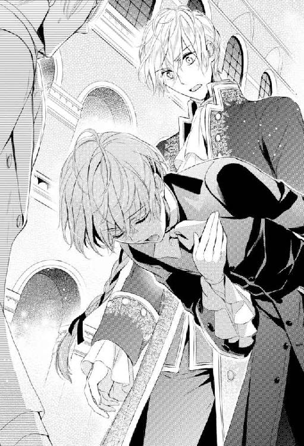

| 青薔薇伯爵と男装の執事～出逢いは最悪、しかして結末は～ (ウィングス・ノヴェル) | |
| 和泉統子 | |
〝ロザリンドなら知っていると思うけど、青い薔薇の花言葉は〈叶わぬ夢〉なんだよ〟
彼はわたくしが花言葉をよく知っていることを、知っていた。
......ということを、その彼の言葉で理解して、わたくしはいささか動揺した。
──わたくしが花言葉に詳しいのは、あなたが植物を研究しているからではありません。
反射的にそんなことを口にしかけて。
それが彼の言葉を深読みした上での無意味な言い訳で、そんな先走った言い訳は恋に恋する小娘のやることだと気づき、わたくしは唇を嚙み締めるほど固く結んだ。
──わたくしは、恋に恋するような頭が空っぽな小娘ではない。断じて違う。
わたくしが花言葉に詳しいのは、そう、絶対に彼のせいではないのだ。
ただ、わたくしに与えられた職務遂行のために花言葉を覚える必要があっただけなのだ。
外国の大使や王族を迎える時に、王宮にどの花を飾るのか。
それを決める時に、花言葉は必要になるから。
陛下が口にしなかったことを匂わせるのは、王宮に飾られた花々の役目なのだから。
〝君なら知っていると思うけど、青い薔薇の花言葉は〈叶わぬ夢〉なんだよ〟
彼はわたくしが知っていることを前提に話していたけれど、わたくしは青い薔薇の花言葉を知らなかった。
なぜなら、青い薔薇はかつて一度も女王陛下の王宮で飾られたことのない花だったから。
この世に存在しないはずの花だったから。
〝長い長い間、青い薔薇を生み出そうと、人々は努力してきたけれど、いまだそれは叶わぬ夢だ。──でも、ぼくは青い薔薇を作ろうと思う〟
彼のその告白を聞いた瞬間、わたくしの胸に湧き上がったのは純粋な喜びだった。
長い付き合いの中で、彼が自分の夢を打ち明けてくれたのは、それが初めてだったから。
......にもかかわらず。
〝他の何百、何千人もの園芸家達が失敗してきたのに、あなたまで不可能なことに精力を傾けて、無駄な努力をなさろうとしているの？〟
とても嬉しかったはずなのに、励ましの言葉や応援する言葉より先に、わたくしの口から出たのは、そんな辛辣な台詞だった。
彼がわたくしと一緒に過ごすよりも、庭で薔薇の世話をしている時間が長いのが、淋しかったから。
〝......そうだね〟
彼の顔は目に見えて曇った。
強張った顔で彼は、わたくしから一歩離れた。
物理的にはただの一歩分の距離だったのに。
でも、その瞬間、二人の間の距離は地の果てまでも開いたことを、わたくしは気づいた。
〝でも、青い薔薇は──〟
彼は彼が生み出そうとしている青い薔薇に負けないくらい青ざめた顔で言った。
〝──青い薔薇は、女王陛下の望みだから〟
〝──！〟
喉元から迸りそうな悲鳴を抑え込んだ。
わたくし達の間には、よきにつけ悪しきにつけ、グラディスの存在があった。
彼女はわたくしの異父妹であり、彼の義理の妹であり、そして、この国の偉大なる女王だった。
わたくし達は、共に彼女の臣下だった。
いつだって誇らしいほど、そして腹立たしいほどわたくし達は、共に女王陛下の臣下だった。
わたくし達はけしてお互いが、お互いのためだけの存在になり得なかった。
春風のように優しく、夏の太陽のように輝かしき陛下。
世の女性達が羨むような美貌も、全ての男性が喉から手が出るほど望むだろう栄光も......最愛の恋人以外の、この世の全てを手に入れた我らが光竜連合王国のグラディス女王陛下。
わたくし達は、彼女の臣下だった。常に。
〝だから、ぼくは青い薔薇を育て、花咲かせるよ。君が、なんと言おうと〟
〝......女王陛下のために？〟
問いかけるわたくしの声が震えていることに、彼は気づいただろうか。
〝女王陛下のために〟
わたくしの発した言葉を抑揚のない口調でそっくりなぞって、彼はわたくしの部屋を出て行った。
いいえ。
わたくしの人生から、彼は出て行った。
わたくしにとっては彼こそが、〈青い薔薇〉──〈叶わぬ夢〉だった。
「へっ、えぇ────────っっ」
この地に残る伝説では、遙か昔、陽の沈む海に四色の竜が集まり、大小二つの島──白竜、青竜、赤竜からなる大竜島と緑竜からなる小竜島───を作ったという。
その二つの島では長らく四つの王国が争っていたが、終には女王グラディスが光竜連合王国を打ち立てた。
今や彼女の連合王国は〈陽の沈まぬ国〉と謳われ、その首都たる中央王都は、この世界で最も繁栄している街と呼ばれている。
その華やかで豊かな中央王都の中でも、四つの王国それぞれの公爵やら侯爵やらと高貴な貴族達が集まるこの地区は、一際豪華な館が建ち並ぶ。
そんな目が眩むような立派な屋敷群の中、貸し馬車から降りてローズベリー青伯爵邸を初めて見た瞬間、新しいローズベリー青伯爵がもらした感想は。
「これが青竜王国一の名門ローズベリー青伯爵家のお屋敷なんだぁあ。へっ、えぇ──────！」
──新しいご主人様の肺活量は、人並み外れていらっしゃるようですね......。
などと暢気に感心している場合ではないだろう。真に有能な執事ならば。
「............ご、ご主人様」
そう判断したので、アンは恐る恐るながらも、誰が聞いても思いっきり含むところがあるような大声をあげた新ローズベリー青伯爵アッシュ・ローズベリーに声をかけた。
「何？ ああ、このお屋敷の惨状について、説明してくれるのかなぁ？ ってか、当ぉお然！ 説明してくれるよねぇえ────？」
端麗な唇の両端を微笑みの形につり上げた青伯爵が、くるりと振り返られる。
まだ十五歳──ただし十九歳のアンより頭半分ほど背が高く、どちらが年上か判らぬほど、大人びた外見をしている──の若い青伯爵は、怖いくらい整った顔立ちをなさっていた。
その上、赤みのある金の巻き毛を持つアンとは対照的に、青伯爵の髪は癖のない青みがかった銀髪で、氷細工みたいに冷たく見える。
瞳もアンが蜂蜜めいた金色なら、青伯爵の瞳は流氷を削ったかのごとき青灰色で、その怜悧な顔立ちにさらなる冷ややかさを添えていて。
そんなこんなな容姿のおかげで新ローズベリー青伯爵のにっこり笑った顔は天使のように美しく、そして悪魔のように恐ろしかった。
──うっ......！
そのためか、それとも何かアンが自覚していない他の理由からか。
アンは彼女が目標とする有能な執事ならけしてしないだろうに、この年少の新しい主に対してあからさまに怯み、狼狽え、視線を逸らした。
──どうしてご主人様は、こんなに心臓に悪い笑顔をお持ちなのでしょうか......!?
と、思わず半泣きになったものの、すぐにアンは自分の感想を否定した。
──いいえ、違います！ ご主人様の笑顔に問題があるのではなくて！ これも偏に私が順序よく、適切な時期に適切な説明をせずに、ここまでお連れしたせいだからです！ ええ、私が良くなかったのです！
そうなのだ。
最初に彼が前ローズベリー青伯爵の孫であることを伝えた書簡でも。
それから孤児院まで迎えに行き、直接対面した時でも。
はたまた、この屋敷までの道中でも。
説明する機会は、いくらでもあったのだ。
なのにどう説明したものかと思い悩んだ挙げ句、青伯爵家の財政状況をきちんと話さないまま、アンは彼を中央王都に連れてきてしまった。
──いくら話しづらいからと言って、先延ばしするべきことではなかったのです......！
物事は後回しにしても悪化するばかりだと、老ハワードだっていつも言っていた。
養い親の一人で、人生全般の師匠である老ハワードの、せっかくの薫陶を活かせなかった己の至らなさを、アンは今、深く深く反省する。
「そりゃあ、ローズベリー青伯爵家には現在、借金があるって話は、噂には聞いてましたけどぉお？ それにしたって、これは酷過ぎじゃないですかぁあああ────？」
反省している端から青伯爵に冷めた口調で追い打ちをかけられて、ますますアンは小さくなった。
「お、仰る通りでございます、ご主人様......」
本日より自分が仕える新青伯爵アッシュ・ローズベリー卿が、こんなにも冷たく呆れた口調で、こんなにもやさぐれた感想を口になさるのは、アンも物凄く理解できた。
と、言うのもだ。
二人の前に建つ屋敷は、周辺の豪奢な屋敷と比較して、明らかに見劣りがした。
いやいや、見劣りするどころの話ではない。
両隣と比較すれば完全敗北。
むしろこの屋敷が勝てるお屋敷は、中央王都中を探しても見つからないのではないか。
なにせ今のローズベリー青伯爵邸ときたら、間違いなく十人中十人ともが〈廃墟〉と答えるだろう姿をしていたのである。
長い歴史と格式に相応しい財力を青伯爵家が保持していた時代に建てられた屋敷は、大きさだけは周辺の豪華なお屋敷と遜色がない。
しかし、だからこそアンとメイドのカラとノラ、料理人のシドニーに御者のベンだけでは、広過ぎてとても手が行き届かなくて。
前青伯爵の逝去が公表されてからのこの半年、もう三度も泥棒に忍び込まれたくらいだ。
その折り、何枚か窓ガラスを割られてしまったのだが、今の青伯爵家には代わりのガラスを入れるだけの財力さえもなく、安物の薄板を入れるのがやっとで。
雨風は防げるにしても、ボロ板で塞がれた窓は、館にさらなる廃墟感を与えている。
そして正面から見た図も酷いが、実は裏に回ればさらに酷かった。
先日、盗む物が何も見つからなかった腹いせか、泥棒に火を付けられたのだ。
幸い大事には至らなかったが、裏手の壁には黒い跡が痛々しく残っていたりする。
しかも、そのボヤの時にもらい火した馬小屋は、屋根が半分落ちたままだ。
おまけに日々の食料に事欠くような暮らしから、以前は連合王国一の薔薇園として知られた裏庭の大半が野菜畑に変貌済みで。
──だ、誰が見ても、連合王国有数の名門貴族のお屋敷だとは思えないですよ、ね......。
四つの王国からなる光竜連合王国において、青竜王国は第二席国と位置づけられている。
その青竜王国の初代国王の親友を祖とするローズベリー青伯爵家は、常に青竜王室に近しく、かの王国で重責を担ってきた。
なのに、前青伯爵が女王グラディスの不興を買ってから、青伯爵家はもう何十年も不遇を託っている。
それゆえか、元々植物学については学者はだしだった前青伯爵は、青い薔薇の研究に青伯爵家の財産を惜しみなく注いでいた。
その情熱は青伯爵家の財政を傾かせたほどで、しかも追い打ちをかけるように前青伯爵の甥が賭け事で莫大な借金を作ってくれた。
老ハワードから執事職を任せられた時、青伯爵家の正確な借金額を知ったアンは気を失いそうになった。
〝ローズベリー青伯爵家の再興は、針の穴にラクダを通すより難しい、かもしれません......〟
青伯爵家の借金額は、けして悲観主義者ではないアンでさえも、そう口走ってしまうほどに巨額だったのである。
──ですが、このまま大恩あるローズベリー青伯爵家を無為無策で破産させるわけには参りません！
そう決意したアンは警察やら役所やら有力貴族の皆様やらに頭を下げまくって、前青伯爵の駆け落ちした一人息子とその家族の行方を捜してもらった。
そうして半年あまり。
残念ながら前青伯爵の息子ヒースとその妻は亡くなっていたが、息子の子供、つまり前青伯爵の孫を見つけることができたのである。
新しい青伯爵となるべきアッシュ・ローズベリーは、中央王都から馬車で丸一日離れた小さな村の孤児院に居た。
アンが迎えに行った時、孤児院の子供達は皆、いや子供達だけでなく、院長たる牧師もずいぶんとアッシュを頼りにしていたようで、名残惜しげな様子を見せた。
特にナッシュという少年とは仲が良かったようで、彼は最後まで、従僕の一人としてでも一緒に中央王都へ行きたいとごねた。
新たに人を雇う余裕など一銅貨もない青伯爵家の現状を思い、アンが焦っていると、アッシュ本人がナッシュのような喘息持ちは中央王都みたいな空気の悪い町では暮らせないと、説得してくれた。
別れ際、ナッシュ以外の子供達や牧師の心配事にも一つ一つ適切な回答を与え、励ましているのを見て、アンは新しいご主人様が若いながらも英邁な人物であることを確信した。
──孤児院ではあんなに立派だったご主人様が、こんなにやさぐれた態度を取られるなんて！ ご主人様のほうは私が出した書簡をお読みになってから、私が迎えに行くまでの間に、自分がいなくなっても牧師館や孤児院の子供達が困らないようあれこれと手を打っていらしたのに、私ときたら！
せめて、この新しいご主人様をお迎えする前に、正面の目立つ箇所の窓をガラスに戻していれば、まだマシに見えたかもしれない。それともボヤの黒焦げをペンキで誤魔化すべきだったか──などと、もう少し新青伯爵を迎える前に屋敷を見苦しくないよう整えることが当家の執事たる自分はできなかったのかと、アンは悔やんだ。
しかし、そもそもガラスを入れようにもペンキを塗ろうにも、先立つものがアン達にはなかった。
アンが新青伯爵を迎えに彼の住む村まで貸し馬車で行くのが、精一杯だったのである。
「......ご主人様がそのように仰るのも、当家の執事を務める私の不徳の致すところ。幾重にもお詫び申し上げます」
アンは頭が膝に付くくらい深く頭を下げた。
「............まぁああ？」
アンの生真面目な謝罪に、いささか面食らった様子で青伯爵は道端の小石を蹴った。
「あんた達が主人不在をいいことに、青伯爵家の財産をいいようにしてたってわけでないなら、べっつに、かまわないけどさぁ──？」
「そんなことはしてないです、ご主人様！」
吃驚したあまり、アンは反射的に叫んだ。
「私は勿論、ノラやカラ、シドニーもベンも、ご主人様の物に手を付けるような情けないことは、一切していません！」
アンの返しに、青伯爵は首を傾げた。
「顔もそうだけど、あんた、女の子みたいな声を出すんだな？」
「！」
誤解を解こうと必死のあまりついつい詰め寄ってしまったが、アンが見上げた目と鼻の先に青伯爵の端麗な顔があることに気づいて。
「も、もも、申し訳ございません！」
慌てふためいて、アンは三歩も飛び退った。
──お、女の子みたいって、まさか、私が女だと、ばれてしまったのでしょうか......？
それはまずい。
それは困る。
一気に血の気が引いた。
しかも、である。
──しかも、今、私、ご主人様になんて出過ぎた振る舞いをしてしまったのでしょう！
真っ当で優秀な執事は、ご主人様に強い口調で反論したりしないものだ。
「本当に申し訳ございません！ お仕えする執事の分際でご主人様に口答えをするなど、分を弁えない振る舞いをしてしまいました！」
──その上、女とばれそうなほどの声をあげるなんて、駄目過ぎです......！
やらかした失態に焦り、青ざめながらも、できるだけ低めの声でアンは新しいご主人様に詫びた。
「............べっ、つに──？」
ご主人様は肩を竦めたかのような声を出された。
「そこまでむやみやたらと謝ってもらうほどのことじゃないけど、あんたって────」
ご主人様はマジマジとアンを見下ろされた。
アンは女性にしては長身だが、男性と見ればせいぜい中背である。
年下のご主人様のほうが、頭半分ほど背が高い。
「あ、あの、でも、その。わ、私達は、その、至らない点は、多々あったと思いますが、本当に、その」
ご主人様から性別を確かめられるのではないかと怯えて、アンはさらに慌てて謝罪の言葉を重ねた。
青伯爵家の財政状況のせいもあって、アンは恐ろしく瘦せている。
胸や腰に女性らしい厚みがない上に、中背の男性並みに長身なので、男物の服を着込むと十代後半の少年にしか見えない。
地声が低いのも、今まで彼女の性別を解りにくくしてきた。
......のだが。
──バレて、ないですよ、ね......？
十九のこの年まで、アンは従者やら執事見習いやらと男性職業の経験は積んできた。
が、料理や洗濯など女性使用人が身につけるような技は一つも持っていなかった。
と言うか、我ながら哀しいくらい、その方面には才能がなかった。
料理人のシドニーを一度手伝おうとしたが、ジャガイモの皮むきの段階で、お断りされた。
超一流店のお針子並みな腕前のノラ達も、アンには縫い物仕事を手伝わせない。
彼らの求めるレベルには、アンの腕前はあまりにも遠かったらしい。
そんなこんなな自分だから、新しい青伯爵家のご主人様に女の執事なんてとんでもないと屋敷を追い出されたら、どうしたらいいのか。
──もし、クビになったら、大恩ある青伯爵家に恩返しができません！
キアヌスに対してもそうしたように、アンは新青伯爵に自分が女だとばれないのが、ローズベリー青伯爵家に置いてもらう第一条件だと思っていた。
──まだ、バレたと決まったわけではないですよね。まだ。......まだ、その。
「この半年だか一年、無給で青伯爵家を守ってきたと言うのに、誠意を疑われているのかい、アンジー？ それは情けない話だこと」
ローズベリー青伯爵邸正面玄関の真ん前に立ち並んでいたアン達がその声に振り返ると、黒絹の日傘を差し出すメイドと初老の従僕を引き連れた喪服の老婦人がいた。
「ケント白公爵夫人......！」
現れたのは、隣の屋敷に住むロザリンド・オブ・ケント白公爵夫人だった。
アン達の到着を公爵邸の使用人が見張っていて、夫人に知らせたのだろうと推察できるタイミングの良さだ。
アンは慌てて執事として、貴婦人に対する一礼を丁寧に行った。
「......アンジー......？」
アンの年若い主はケント白公爵夫人の突然の登場より、夫人が呼びかけに使ったアンの名前に首を傾げた。
と言うのも、アンが青伯爵と初めて顔を合わせた時、ジョージ・ハワードと名乗っていたからだろう。
以前のアンは、アンジーと名乗ることが多かった。
そのせいでアンが青伯爵家に来た頃から知っているケント白公爵夫人は、彼女をアンジーと呼ぶ習慣がついている。
しかし、ローズベリー青伯爵家では、代々執事は本名がなんであれ、ジョージ・ハワードと呼ばれることになっている。
──それをご存じのケント白公爵夫人が、私をアンジーと呼ばれるということは、私がローズベリー青伯爵家の執事職に相応しくないと思っていらっしゃるのでしょうか？
確かにまだまだ執事として至らないところだらけで反省点は多い。が、ローズベリー青伯爵家と縁の深いケント白公爵夫人に執事と認められていないのは、少々、いやかなり悲しい。
「アンジーって、誰のこと？ あんた、本当はアンジーって言うのか？」
「そ、それは、その」
──まだまだ執事として、至らないところばかりですが、老ハワードから執事に指名されたのは、他の誰でもなく私です！
そう心の中で握り拳を固めて、青伯爵の端麗な顔を真っ正面から見上げる。
「アンジーと言いますのは、私が前のローズベリー青伯爵様の姪にあたるオリーブ様の従者をしている時の名前です」
そこまで説明しても怪訝そうな顔をしているご主人様に、アンは説明を追加した。
「そして、今現在は、青伯爵家の執事の職を頂いております。ですから、ジョージ・ハワードを名乗っております、ご主人様」
「............へっ、えぇ────」
アンの説明に、ご主人様はいかにも気に入らないと言わんばかりの低い声を出された。
どうもこの「へっ、えぇ──」が青伯爵の相槌と言うか口癖であらっしゃるようだ。
「何、それ？ 結局、あんたの本当の名前は」
「アンジー！」
青伯爵の質問を、白公爵夫人が鋭い声で遮った。
「お願いだから、まさか、この無礼で不作法で、下町言葉を喋るお子様が、先代の孫で、新しいローズベリー青伯爵だなんて言わないでおくれ。こんな子、ぜんぜんヒースに......」
言いかけた言葉を、白公爵夫人は飲み込んだ。
その顔に舌打ちでもしそうな表情が浮かぶ。
「──まあ、〈呪われた貧乏伯爵〉ことローズベリー青伯爵家には似合いの当主かもしれないけれども」
冷たいことを言いながらも、しげしげと新しい青伯爵を見ているのは、やはり青伯爵家のことを気になさっているのだろうと、アンは思う。
女王陛下の異父姉で、寵愛深い腹心として知られる白公爵夫人は、女性の身ながら王宮の儀典長を勤めていて、いつも非常に忙しい。
今時分は王宮の晩餐会やら舞踏会やらの準備にてんてこまいな時間で、本来なら暢気に散歩に出かけるほど暇ではないはずなのだ。
「──お、こ、さ、ま」
白公爵夫人と青伯爵家の因縁を知らないアンのご主人様は、不満そうに鼻を鳴らされた。
「青伯爵令嬢オリーブの従者アンジー兼ローズベリー青伯爵家の執事のジョージ・ハワード君、まさか、こちらの無礼で不作法で無駄に芝居がかった喋り方をするばーさんが、悪名高い〈裏女王〉ケント白公爵夫人だなんて言わないでおくれ。こんなばーさん、ぜんぜん女王陛下に......。──とは言え〈血塗られた公爵夫人〉なんて二つ名を戴くような女には相応しいババァかもしれないね」
──ご、ご主人様......！
主の立て板に水な台詞は、どう好意的にとっても白公爵夫人が口にした台詞を模倣した皮肉である。
白公爵夫人が言い淀んだ箇所まで女王の異父姉という夫人の生まれに合わせて変換してみせたのは、どれだけ頭が回る方なのかと、ある意味、アンは感心してしまった。
しかし、そうは言っても暢気に感心していられる状況ではなかった。
「......無礼で不作法で無駄に芝居がかった喋り方をする？」
「今みたいにさ」
「ごごご、ご主人様......！」
無礼に無礼を重ねてさらに無礼を積み上げようとしているご主人様の袖を、アンは摑んだ。
優秀な執事らしいとからしくないとか言ってはいられない。
白公爵夫人の王宮での権勢は、世間では〈裏女王〉と呼ばれるほどなのだ。
没落して日々の生活にも困窮しているローズベリー青伯爵家の当主が楯突いていい相手では、断じてない。
──そして、何よりもケント白公爵夫人は。
「......そなたのように己の立場を弁えない者を、わたくしは生まれて初めて見ました」
主に夫人と青伯爵家の複雑な関係をどう説明したものか逡巡している間に、ケント白公爵夫人が口を開いた。
「へっ、ええ──」
新しい青伯爵は少年らしくない笑みを浮かべられた。
「お偉い白公爵夫人閣下としましては、たかが青伯爵の分際で生意気なことを言うなとでも、言うんですかねぇええ────？」
ちなみに貴族の爵位は上から、公、侯、伯、子、男となるから、通常でも公爵は伯爵より二段階格上だ。
その上、連合王国内では、第一席国白竜王国の公爵である〈白公爵〉と第二席国青竜王国の伯爵である〈青伯爵〉には大きな身分の開きがある。
それは、他所の国なら王族と下級貴族なみの身分差なのだ。
だから、青伯爵の皮肉は的外れなものではけしてなかった。が。
「債務者が、債権者に、です」
「............ぁ？」
どういうことだと言わんばかりの顔で、ご主人様はアンを振り返られた。
「あ、あの」
「恐れながら、青伯爵閣下」
アンがまごついていると、まるで使用人であるかのような物言いで、ケント白公爵夫人がことさら芝居がかった口調で話し出した。
「目の前のローズベリー青伯爵邸は土地屋敷丸ごと借金の抵当に入っております。債権を持っているのは、このわたくしロザリンド・オブ・ケント。ちょうど三ヵ月後の期日までに全額返済できなければ、青伯爵家は破産し、中央王都のこの屋敷をはじめ、残っている領地も全て失うのです。そして、閣下は債務者監獄へ送られ、借金の額から言っておそらく生涯を監獄の中で過ごされるでしょう」
ローズベリー青伯爵の勢力は、最大時、青竜王国の三分の一にまで領地を広げるほどのものだった。
が、今は青竜王国と白竜王国の国境線沿いの僅かな土地のみを残すばかり。その土地から上がる小作料など諸々は、全て借金の利子に消えている。
「............へっ、えぇ────」
そんなローズベリー青伯爵家の財政状況を正確に知らされていなかった──これは己の不徳の致すところだと、アンは猛省した──ご主人様は、肩を竦めると不敵な笑みをその端麗な顔に浮かべられた。
「ちなみにその借金額って？」
「五千八百七十万金貨」
唇に笑みを添えて、白公爵夫人も答える。
例えば中央王都の下級メイドの平均年収は十金貨だから、伯爵家の借金は一万人のメイドが五百八十七年働いたら作れる金額ということになる。
......とどのつまり、庶民なら一生掛かっても払える金額ではない。
「あと三ヵ月で借金を返済し、わたくしから屋敷を買い戻すことがそなたにできるのか、楽しみにしてましょう」
そう述べた夫人の微笑みは、彼女を敬愛するアンでさえ、〈血塗られた公爵夫人〉に相応しいと思うものだった。
「現在ローズベリー青伯爵家に仕える使用人は、以上です」
さて。
屋敷の玄関ホールに並んだ使用人四名をご主人様に紹介する時、アンは少し震えていた。
絶対に人数の少なさを突っ込まれますよね！ ──と、戦々恐々としていたのだ。
が、意外やご主人様は何も言われなかった。
掃除だけは頑張ったが、豪華な家具や調度品をあらかた債権者に取られ、がらんとした自室に案内されても、例の「へっ、えぇ──」以外は何も仰らなかった。
ところが、である。
「当家料理人のシドニーが、ご主人様のために丹精込めて用意した一品です」
かつては豪華絢爛な調度品で埋まっていた晩餐室のテーブルの上に、アンがその一皿を置いた時、ご主人様はハッキリと顔色を変えられた。
「ご、ご主人様!? どうかされましたか」
そう問うたものの、無言で突如立ち上がった青伯爵に、アンは出された料理にお怒りなのは間違いないと確信していた。
丹精込めて用意した一品も何も、料理はこの一皿しかない。
しかも名家の当主に相応しい銀食器は、屋敷にはすでにスプーン一本たりとて残っておらず、テーブルに置かれたのは木皿と木製のスプーンだ。
「こ、この料理は、その、見た目はあまりよろしくないかもしれませんが」
一口召し上がりになれば、見た目通りの料理ではないことがお解り頂けます！ ──と続けたかったが、主は物凄い速さでスープ皿を持って晩餐室を出て行かれてしまった。
アンがやっと追いついた時には、すでにご主人様は台所兼使用人達の食堂部屋に到着なさっていて。
「シドニー！ お前、こんな料理をご主人様に出すって、どういうつもりなのかなぁあ─────!?」
「......俺の......料理......、問題......？」
料理人のシドニーが椅子から立ち上がり、たどたどしい言い方で聞き返す。
海の向こうの大陸出身であるこの青年は、屋敷に来て何年も経つが、連立王国語がいまだに苦手だ。
「問題ってゆーかぁ──」
と、ご主人様は天井を見上げられた。
「こんな料理を出すって、嫌がらせにしか思えないんですけどぉ──？」
「......料理......嫌がらせ......しない！」
「そうです、ご主人様。シドニーはそんなことはしませんよ！」
嫌がらせも何も、今の青伯爵家の財力ではこれが精一杯というだけなのである。
「じゃあ、この料理はなんなのかなぁ？ どうみても水につけたパンにしか見えないんですけどぉ？ 当主にこんな料理を出すってことは、使用人は何食べてんのかなぁあ？ パン抜きの水とか言うんですかぁああ────!?」
「......ああ、ご主人様！」
アンは主の真意に気づいた（と、思った）。
「出された料理にケチをつけるためだけに、地下の台所まで降りられるとは、ご主人様はなんて食い意地の張った方だろうと」
「......ぁ？」
シドニーを睨んでいたご主人様は、ゆるりと彼女のほうを向き直られた。
「あっ！ え、あ、あの！ ちょっぴり、あのぅ、ほんの少しですが、その、残念に思って、いたり......しましたのですが！」
──と、言うことではなくて。そう、私が言いたいのは、ご主人様が残念な方だということではなくて！
「ご主人様は、私達が満足な物を食べていないかもしれないと、ご心配になったのですね！」
「...............ぁあああ!?」
アンの言葉に、ご主人様は木製のスープ皿を持ったまま（アン的にはなぜか）硬直なさった。
シドニー以下他の面々も、思わぬアンの発想と言うか解釈に目を白黒させている。
「大丈夫です、ご主人様！」
何が？ ──と、アン以外のその場の全員が突っ込んだに間違いなかった。
「私達が食べている物も同じです！ 水じゃありません！ ほら、私達の食卓をご覧下さい。ご主人様の皿と同じでしょう？」
アンが示したテーブルの上には、主が手にされているスープ皿と同じ木製のスープ皿が五つ。
皿の中には水にしか見えない透明な液体。
そして、その中心部に主用によそわれたスープ皿と同様に一切れのパンが浮かんでいた。
「..................へっ、えぇ────！ ローズベリー青伯爵家の使用人は、主人と同じ物を食べるんですかぁ？ ご主人様って、使用人より良い物を食べさせて貰えるものだと思っていた僕がバカだったんですかねぇええ────？」
──うっ！
極々一般的な貴族のお屋敷では、使用人と主人が素材から調理法まで全く同一の料理を食べるなんて、もちろんありえない。
「ふ、普通のお屋敷では、使用人がご主人様と同じ一皿を食べるなんてことはありえませんが！ ただ、その、当家の財政は現在、非常に大変驚くほど逼迫しておりまして！」
動揺のあまり、言葉を無駄に重ねてしまう。
「ご主人様と言われても、自分ら、もうかれこれ半年ほど、給金頂いていませんから」
そんなアンを見かねたのか、この場の一番の年長者で、御者のベンが口を挟んだ。
「ここにいる者は皆、周辺のお屋敷の使用人達の下請け仕事をして、この半年、なんとか生活費を工面してきたんですよ。本音を言えば、新しいご主人様なんて無駄に食い扶持が増えるだけで、自分らにはいい迷惑だったりしてますから。今夜、食事を用意してもらっただけでも、ありがたく思って頂きたいくらいで」
「ベベベ、ベン！」
「へっ、えぇ──────────！」
慌てまくるアンとは対照的に、ご主人様はまたまた己の肺活量を誇示なさった。
「じゃあ、ベンにしろ、シドニーにしろカラやノラ」
たった五人とは言え先程紹介されたばかりの使用人の名をキッチリご主人様は覚えていらっしゃったようで、それぞれの顔を見ながら名を呼ばれた。
「それから、先代の姪オリーブ嬢の従者アンジー兼ローズベリー青伯爵家の執事のジョージ・ハワード君」
「は、はい！」
そんな長い名前でお呼びにならなくても──と、アンは言いたかった。
が、とてもとても今現在、そんなことを口に出せる雰囲気ではない。
「君達は、先代が亡くなって、僕がここに来るまでの間、ローズベリー青伯爵家の仕事をしていないわけだよねぇええ？ 他家の使用人の下働きをしてたってことは」
え？ ──と、使用人達は一斉に瞬きした。
この青伯爵家の新しいご主人様が話をどこに持って行こうとしているのか、読めない。
「ローズベリー青伯爵家のために働いていないのに、屋敷に居座っていたわけだから、あんた達はこの半年分の家賃を払うように」
「！」
「え？」
「......ぇ？」
「ちょ......！」
新ローズベリー青伯爵の意外な命令に、使用人達は顔色を変えた。
アン達を残して中央王都を去る時、老ハワードは給金を払えないことを詫び、この屋敷を完全に閉めてしまっても構わないと言ってくれた。
──それでも私達が屋敷に残ったのは、青伯爵家に恩義があったからで。
隣のケント白公爵夫人が何くれとなく気を遣って白公爵家内や王宮の臨時雇いの仕事を回してくれたことと、家庭菜園の収穫が途切れなかったおかげで、なんとかこの半年間、アン達は屋敷を維持してこれた。
だが、本当にギリギリの生活だったのだ。
そうまでして屋敷を守った努力を、この怜悧で玲瓏なる新青伯爵に是非とも認めて頂きたいと思う。が。
──私達が屋敷に残ったのは、本当に忠義からだけでしょうか......？
女性使用人の仕事にまるで才能がなく、性別詐称中のアンには、男性として他家に住み込みで働くことは難しい。
かつて素行が悪かったとかで、ベンは使用人のブラックリストに載っているそうだし、言葉が不自由なシドニー、一人前のメイドとして雇われるには幼いノラとカラ等、残りの四人もアンと同様、他家に職を見つけるのが難しかった。
──他の使用人達が屋敷を出て行ったのに、私達が屋敷に残ったのは、青伯爵家に対する忠義より、他に行き場がなかったということのほうが大きいかもしれないです......。
「......そうですね、ご主人様」
アンは一音一音嚙み締めるように言った。
「ローズベリー青伯爵家の方々に仕えるわけでもないのに、ご主人様がいらっしゃらないのをいいことに、まるで自分の屋敷みたいに家賃も払わず、こちらの屋敷に居座っていたのと同じですよね、私達がしたことは」
おいおい、何を言い出すんだよ？ ──と、顔にクッキリと書いたベンが口をパクパクさせたが、アンはスルーした。
「せめてちゃんと屋敷を管理していれば、まだ言い訳が立ったかもしれません。でも、泥棒に入られたり、放火されたりしていては、留守を預かる者としての仕事ができてませんよね。こんな有様では、ご主人様が仰るように、私達は家賃を払うべきですよね！」
そう両拳を握り締めたアンに、なぜかご主人様は沈痛な面持ちで額を押さえられた。
そして。
「............泥棒？ 放火？」
ご主人様は、ふと何かに気づいたようにアンに視線を向けられた。
「泥棒に放火って、なんだ？」
──あ！
言わなくてもいいことを、言ってしまったかもしれない。
「も、申し訳ございません！ その、わ、私達五名だと、どうしても屋敷全体に目が行き届かないところがあるようでしてっ！」
「............」
「あ、あの、でも、盗まれたものは何もないんですよ。ボヤも裏庭の落ち葉が燃えて、壁を焦がして、馬小屋の屋根が落ちたくらいですしっ！ あ、馬は元からいなかったので、大した被害もありませんでしたしっ！」
言いながら「いや、やっぱりこれは酷い被害ですよね......」と、アンは思い直した。
墓穴を掘ったかもしれない。一人どころか五人の全使用人分ほど。
「............」
ご主人様は無言で、銀器どころか陶器さえ見つからない台所をぐるりとご覧になった。
「──こんな貧乏屋敷に泥棒に入っても、仕事にならないだろうに」
ここだけでなく、他の部屋にも値の張る物が一つもないのは、先刻、屋敷の中を案内したので、ご主人様も承知なさっている。
「ええ、そうなんです、ご主人様！ だから、放火も腹いせだったんじゃないかと」
「──は、ら、い、せ」
いかにも気に入らないとばかりに吐き捨てられると、ご主人様は場の全員の顔を順繰りにご覧になった。
──や、やはりご主人様のお留守に、泥棒達にいいようにされた私達を、いえ、執事である私が責任者であるから、私が、ですよね。私が役立たずだと思われたのでしょうか？
屋敷の現状では役立たずだとか、執事に相応しくないと思われるのもしかたのないことだとアン自身も思う。
が、執事職を解かれるにしても、どうにかこの屋敷に置いてもらわなければと、アンが固唾を飲んでご主人様の次の発言を待っていると。
「腹いせと言うなら、あんた達が無傷だったのがおかしい。当世、そこの双子達なんか、かっ掠われて、人買いに売り飛ばされてもおかしくないし」
途端、アンは嬉しくなった。
「ご主人様、私達のことを心配して下さったんですね！」
「............ぁ？」
ご主人様は瞬き、再びだか三度目だか、非常に冷たい視線でアンを見下ろされた。
けれども興奮しているアンは、その冷ややかな視線にまったく！ 気づかなかった。
「ありがとうございます、ご主人様！ ご当主様になられたばかりで、私達とは顔を合わせたばかりで、しかも、私達と来たらきちんとお屋敷を管理できていなかったというのに、なんてお優しい方なのでしょう!!」
いや、それ、違うだろ？ 絶対、違うだろ？ ──と、顔面にデカデカと書き記したような表情で御者のベンがアンを見遣った。
もちろん料理人のシドニーも、幼い双子のメイド達も、呆気に取られた顔でアンを見ていたが、やはりアンは気づいていなかった。
「............さっきからあんた、何、寒いこと言ってるんだ？ いったいいつ、僕があんた達の心配をしたって言うんだよ？」
「先程から、ずっとです！」
一瞬も迷うことなく、アンは即答した。
「スープをご覧になって真っ先に私達の食事のことを心配して下さったり、泥棒の被害について屋敷の調度品のことより、私達のことを心配して下さったりしていますよね！ 本当になんてご主人様はお優しいんでしょう!!」
褒め殺しだとか、はたまた媚びへつらっているとか。
そんな風に受け取られかねない台詞だった。他の人間の発言ならば。
が、しかし、アンときたらただでさえ大きな金色の瞳を、キラキラと輝かせてご主人様を見上げていて、その様子ときたらまるで母犬を見上げる子犬みたいなのである。
そんな顔を向けられたら、嫌味や媚びへつらいの意図など一欠片もないことは、どんな鈍感な人間でも解りそうなほどで。
「しかし、それにしても、どうしましょう？ 当家......いえ、私は現在、手元不如意で！ 半年分のお家賃を今すぐ耳を揃えて払うのは難しいです。あの、えっと、そう！」
良い考えを思いついたと、アンは瞳をさらに輝かせた。
「家賃は、体で払います！」
ドン！
と、アンには意味不明なことに、ご主人様は握り固めた拳で食卓を強く叩かれた。
シドニーは真っ青になっているし、ベンも双子のメイド達も顔を引き攣らせている。
が、当のアンは周囲が顔色を変える理由が解らないので、小首を傾げた。
「............体で、払う、......だと......？」
ご主人様が、唸るような低い声で問われる。
「はい！ こう見えても、私、頑丈なんです！ 今まで以上に誠心誠意、ローズベリー青伯爵家のために骨身を惜しまず働きます！」
「........................へっ、えぇええ──」
たっぷり十秒後。
例の溜息とも相槌ともつかない感想が、ご主人様の形の良い唇から零れ落ちた。
「あぁ、そういう意味か。変な言い方しやがって。あんたが男色家で僕を襲うという意味かと思ったじゃないか、まったく」
「え？ だんしょ......男色？ えええええ!? ち、違いますよ!?」
そもそも自分は女性だ。
逆立ちしたって男色家にはなれない。
が、それは説明できないことなので、焦るアンにご主人様は畳み掛けられる。
「違うなら、召し使いがご主人様に、軽々しく体で負債を払うなんて言うもんじゃないと思うけどぉお？ 中央王都の常識では違うのかなぁああ────？」
誰が聞いても嫌味というか皮肉たっぷりな言葉に、シドニーもベンも天井を見上げた。
幼いメイド達でさえ、お互いに両手を握り締め、不安そうにアンと青伯爵を凝視している。
それなのに、その口撃を向けられた当のアンはと言えば。
「さようでございますね、ご主人様！」
新たな感動に胸を熱くしていた。
「仰る通りです！ 私が至りませんでした。ご指導ありがとうございます！ ご主人様に心配をかけないように、もっと言葉遣いには注意します！」
──あとで老ハワードに手紙を書かなくては。新しいご主人様は、使用人にも細かい気遣いをなさる立派な方だと。きっと老ハワードも喜んで下さいますよね！
老ハワードは幼くて役立たずだったアンに、たくさんのことを教えてくれた恩人であり、人生の師匠である。
このところ、つらいことが多かった師匠に、久々に良い知らせを送ることができると、アンが気持ちを弾ませていると。
「........................」
アンの、その細かい気遣い溢れる心優しくも賢く見目まで麗しい立派なご主人様は、なぜなんだか眉間に皺を寄せて紛うことない溜息を吐かれていた。
それはもう深く深く深ぁああああく！
「ご、ご主人様？ どうかなさいましたか？ 何かご気分がお悪いとか？」
「────────────別、に。何、も」
それ以上の質問を拒絶する強い口調で返されて、さすがのアンも口を噤んだ。
「ちょっと待って下さいよ！」
アンと新しい主の会話が一通り済んだのを確認して、御者のベンが身を乗り出した。
「執事殿は納得したみたいですが、自分らは納得してませんから！ 家賃って何ですか？ 他の使用人達が皆、逃げ出したのに、自分達は給料も貰わずにこの屋敷を守ってきたんですよ？ 給料も貰わずに！」
無償奉仕をしてきたことを二度も告げるベンの主張に、シドニーも無言で頷く。
双子達もアンよりベン達に同意らしく、ベンの横に立った。
その四人に、ご主人様はあの青みがかった冷たい灰色の瞳を向けられる。
「へっ、えぇえ────？ 守ってきた？ 調度品は債権者にあらかた持ち出され、泥棒に入られ、窓ガラスは割られ、ボヤさえ起こされたというのに？ 立派に留守居を守ってきたと、ベン、あんた達は言うんだぁああ──？」
「それは......」
「家賃なんか払う気ないと言われても、僕は聞く耳持たないから。キッチリ払ってもらう」
場には彼より幼い者は双子達だけで、あとは全員年上だというのに有無を言わせない口調で、ご主人様は宣言なさった。
「これから三ヵ月の間にケント白公爵夫人に五千八百七十万金貨の借金を返済しないことには、泣いても笑っても、僕達は全員この屋敷を追い出されるんだからね」
借金額を正確には知らなかったベン達が、一気に青ざめる。
「ご、五千八百七十万って......！ そんな大金、どうやってこさえる気なんですかっっ!? 三ヵ月ぽっちで！」
「さあね」
対するご主人様は、まるで借金が一銅貨しかないような軽い口調で応じられた。
「ともかく、この屋敷に今日も明日も、そして三ヵ月後も住みたいなら、僕に協力するんだね。協力するつもりがないなら、今すぐ出て行ってもらおう。タダで屋敷の部屋を提供するつもりは、僕にはないからね」
そうキッパリ言われると、青伯爵は食卓の空いていた席に座られた。
「先代の姪オリーブ嬢の従者アンジー兼......面倒くさいな。ともかくあんたさ、これからは僕の食事もここに用意してくれる？」
「はい、ご主人様！」
反射的に返事をして。
それから、アンは慌てた。
「あ、あ、あ、あの！ ご主人様、ここは、使用人用の食堂でございますよ？」
ご主人様が地下の台所で使用人と共に食事をなさるなど、真っ当な執事の常識ではありえない。
「わざわざ二階の晩餐室やら午餐室やらを用意して、蠟燭を点すのは、時間と蠟燭の無駄」
無駄と言われれば、無駄かもしれない。
と言って、青竜王国随一の名門伯爵家の当主が台所で食べるというのは正しいことだろうかと、アンも他の者達も首を傾げる。
「......この料理は、なんなのかな？」
呆気に取られているアン達を置いてきぼりにして、ご主人様は勝手に食卓の席に着き、料理を口になさって、驚愕したような声をあげられた。
使用人食堂にやってきた時と口にしている言葉は同じだが、質問内容が違う。
「......赤竜王国の、郷土料理......」
質問の意図を察したシドニーが答えれば。
「へっ、えぇー。赤竜王国のほうの料理ねぇ。ずいぶんと美味いじゃん。ただのお湯じゃなかったんだ？」
「ご主人様、......料理......食べずに......文句、言ってた......」
「悪かったよ」
──ご主人様......！
使用人に対して、ちゃんとご自分の非を認められるとは、なんとできたお方でしょう！ ──と、アンは嬉しくて小躍りしたくなった。
──孤児院の皆様にも慕われていらっしゃったし、ケント白公爵夫人に対しては少し礼儀に反していらっしゃいましたが、見方を変えれば堂々と渡りあっていらっしゃったと言えますし。巨額の借金の話を聞いても、前向きに対処なさろうとしていらっしゃいますし。
それに出逢ったばかりの使用人のことにも気を配っていらして......云々かんぬん、アンは新しいご主人様の美質を心の中でいくつも数え上げた。
──本当にご主人様は、ローズベリー青伯爵になるべくして、なんて立派に育って下さったのでしょう！
......おそらく現時点でアンの青伯爵への評価に賛同する人は、誰もいそうになかったが、アンはこれ以上ないほど新しいご主人様に満足していた。
「けど、シドニー、もう少し見た目が美味しそうな料理は作れないのかよ？ 〈お湯に浮かぶパン一切れ〉がこんなに美味い料理だって、誰も思うわけないじゃん？ このお湯なんか、どう見てもお湯にしか見えないのに、ちゃんと味がついたスープだし」
「自分とピーター......じゃなくて、執事殿が丹精込めて裏庭で作った野菜を、シドニーは、ほんのぽっちりのベーコンの切れ端だけでこれだけのスープに仕立て上げたんですからね。本当にシドニーは凄い料理人でしょう？」
「ベンが自慢することじゃないね。────ところで、ピーターって？」
自分の呼び名その三だか四を出されて、アンは我に返った。
「あ、それは私です。ご主人様の従僕になる時は、私の名前はピーターなんです」
「............へっ、えぇー」
ご主人様の声が不吉に低くなる。
シドニーの絶品料理で直ったかに見えたご機嫌が、なんだかまた斜めになられたようだ。
「いったいなんだってあんたは、そんなに名前をたくさん持ってるのかなぁ──？」
「当家では執事の名前はジョージ・ハワード、ご主人様の第一従僕の名前はピーター、伯爵令嬢の従者はアンジー、と初代ローズベリー青伯爵の時代から決まっております。これは、ローズベリー青伯爵家の伝統なのです！」
使用人の襲名制度は、青伯爵家の（アン的には）素晴らしい伝統だ。
この制度を使えば、ご主人様一家は一々新しい使用人の名前や役職を覚えられる必要がなく、と言って名前も呼ばずに呼び鈴を鳴らすだけの無機質な主従関係にもならない。
ご主人様方に名前を呼び間違えられて、哀しい思いをすることもない。
実に合理的で画期的で、主従双方に優しく便利な伝統だと、アンは本気で思っている。
本来はどの役職も別の人間が担い、アンのように兼任するものではないが、そこは現在の青伯爵家の逼迫した財政状況からして致し方ない。
「歴代のローズベリー青伯爵って、そんなに頭が悪かったのか？」
ところが、新しいご主人様はこの伝統に異議がおありのようである。
「......申し訳ございません。そのぅ、仰っている意味がわからないのですが？」
「自分の従僕や娘の従者、執事の本名なんか覚える気がない奴だったってことだよね？ 執事は常にジョージ・ハワードって、変だ」
真っ直ぐに、ご主人様の青灰色の瞳がアンを射貫く。
「で、あんたの本当の名前は？」
「本当の名前、ですか......？」
──アンジェリカ。
それがアンの亡くなった両親がつけてくれた名前だ。
だが、それをこの新しいご主人様に名乗るわけにはいかない。
その女の子の名前は、この屋敷に来た時に封印したのだから。
「私のことは、どうかジョージ・ハワードとお呼び下さい、ご主人様」

「ご主人様、寝室のほうに入浴の準備ができました」
アンとベンが二人揃って主を迎えに書斎に顔を出すと、ご主人様は分厚い帳簿を難しい顔で眺めていらっしゃったのだが。
「へっ、えぇええ────────」
眉間に皺を寄せた、さらなる難しい顔でアン達を見上げられた。
──ご、ご主人様？
風呂の準備ができたことを告げただけなのに、この反応は何事なのか。
──その、何か気に入らないことがおありなのでしょうか？ た、例えば、私が、女であることを看過されているとか......？
確かに未婚のうら若い女性である自分が若い主の入浴の手伝いをするのは、あまりよろしくないことかもしれない（と言うか、連合王国の常識ではありえない）。
前青伯爵はアンが女の子であることをご存じだったから、自身や甥の入浴の世話など、アンには絶対にさせなかった。
当然、現青伯爵に対しても、アンも同様の処置を執りたかった。
......のだが、しかし、今現在、ローズベリー青伯爵家には、当主の身の回りの世話をするべき従者に適切な人間がいない。
ベンに頼んだら、「あの閣下の従者なんて、死んでも無理！」と、（アン的には）なぜか拒絶されてしまった。
この屋敷にいるもう一人の男性シドニーが料理以外の仕事全般を苦手にしているのは、尋ねるまでもなくアンもよく解っていたので。
男性としてローズベリー青伯爵家に仕えている以上、ここは不肖私めが執事兼従者をやるしかありません！ ──と、決心したのだ。
ただ、男性の入浴に必要な物とか手順とかが、アンにはよく解らなかった（こればかりは、老ハワード達も教えていなかった！）。
故に今日だけ手伝ってくれるよう、ベンを拝み倒して、一緒にやってきたのだが。
「よくも風呂の準備をするような余分な石炭だか薪が、この貧乏屋敷にあったもんだよねぇええ？ そんな余裕があったら、それを売り払ってベーコンの塊でも買って、皆で食べたほうが良かったんじゃないですかぁああ────？」
言われたアンはいたく感動し、涙さえ浮かべた。
「ご、ご主人様......！」
我ながらご主人様に対して感動し過ぎだろうと思わなくもない。
が、しかし、これを感動せずに何に感動しろと言いますのか!? な気持ちなのだ、アンは。
「ご自分が入浴を我慢しても、私達使用人に美味しい物を食べなさいと勧められるとは、ご主人様は、なんとお優しい方でしょう！」
優しいどころではなく、優し過ぎである。
一生このご主人様についていこう！ ──などと、アンは改めて強く決心していた。
「......ぁ？」
一方、椅子に座っていた青伯爵は、おもむろに机の上の帳簿を閉じ、「いつ僕がそんなことを言った？」と言わんばかりの表情で、目の前に立つアンの満面の笑顔を見上げた。
前から執事殿ってば、かなりの天然さんだと思ってたんだけどよ──とは、後日、ベンが同僚のシドニーに語った弁である。
「──そういう寒い話じゃなくて」
アンが本気で感動していることを理解したらしい青伯爵は、口元を引き攣らせながら言った。
「風呂なんて無駄。体なんて、河で洗えば十分だって話をしてるんですがぁああ!?」
どこか自棄クソ感を漂わせて青伯爵が叫べば。
「恐れながら、ご主人様！」
眉を跳ね上げて、アンは一歩詰め寄った。
「夜は冷え込みますから、水浴びなんかしたら、それこそかなりお寒いかと！ ご主人様のお優しいお気持ちは解りますが、やはりご主人様には温かいお湯で入浴して頂かなくては。ベンもそう思うでしょう？」
「......あ、あ〜......」
問われたベンは、青伯爵の不機嫌そのものな顔と善意の塊のようなアンの顔を、背中に冷や汗を流しながら見比べるハメになった。
「......じ、自分としましては、一番近いイシス河は物凄く汚くて悪臭が漂うドブ河でございますから、沐浴は無理だと思うのであります」
思わぬ方向から攻められて、アンはご主人様と思わず顔を見合わせた。
「そうだった。中央王都は久しぶりだから、忘れてた」
中央王都の中心を流れるイシス河は、中央王都住人や工場、内外の輸送船や客船が下水やゴミを流し放題にしているため、物凄く汚い。
「ご主人様、以前にも中央王都にいらしたことがあったんですか？」
彼は赤ん坊の頃に父親を、五歳で母親を亡くし、それ以来ずっとあの村の孤児院で暮らしていたと聞いていたのだが。
「......一度、村人が牛を売りに行くのを手伝っただけだよ。住んでいたわけじゃない」
アンの問いに、一瞬ご主人様は顔を顰めてから、そう答えられた。
「それより、あんた、使用人名簿にあんただけ、本名も生年月日も生まれた場所も、まともに記載がないのはどういうことだよ？ 生年が〈七八〇年冬頃〉とか出生地〈連合王国内〉とか。名前に至っては〈アンジーまたはピーター。現在はジョージ・ハワード〉なんていい加減さだし、親の名前の所も空欄。由緒ある青伯爵家の正式な書類とはとても思えないんですけどぉおお──？」
今は数枚の紙しか綴られていない薄い使用人名簿を、ご主人様は片手でパタパタと振られた。
「それは、その......、えー......」
本名。誕生日。生まれた場所。親の名前。
自分がこのまま執事として、いやただの使用人としてでも屋敷に留まるためには、それらのどの項目ならご主人様に知らせても問題がないだろうか。
「執事殿は幼い頃に親に捨てられて、えー、前執事だった老ハワードらに育てられたんですよ」
アンが言葉に詰まっていると、ベンが横から口を挟んだ。
「中央王都じゃ、捨て子は珍しくないし、子を捨てるような親は最初から子供に名前なんてつけないものです。〈お前〉とかでことが足りますから。誕生日や親の名前や出生地を教えて貰える捨て子なんてごく僅かなものです」
「──あんた、捨て子だったのか？」
厳密には自分は捨てられた子供ではないし、ベンの言うような酷い親を持った覚えもない。
が、それを口にすれば話はややこしくなる。
「......え......、その、......あの、......はい」
逡巡の末、アンはベンの言葉に頷いた。
「やっと理解できた。つまりあんたは、前青伯爵の執事に育てられた恩義を感じているから、わざわざ僕を捜し出し、バカみたいに新青伯爵の僕を肯定し、持ち上げていたってことですか。なるほどねぇええ────」
「そんなことは......！ あ、いえ、もちろん、前のご主人様にも姪御様のオリーブお嬢様にも屋敷の皆様にも、大変恩義を感じておりますし、であればこそ前のご主人様のお孫様を、是が非でも新しいご主人様としてお迎えしたいと、あなた様をお捜しも致しました」
──でも！
「ですが、そのこととご主人様がご立派な方であることは、また、別の話です！」
新しいローズベリー青伯爵が、極上の銀細工のような素晴らしい美貌を持っていること。
それから、美貌だけでなく、その内側に〈血塗られた公爵夫人〉と渡りあい、大の男でも肝を潰すような借金の額にも動じない胆力を秘めていらっしゃること。
さらには使用人の名前を即座に覚え、その食事にも気を配るような優しさまでお持ちであること。
──ご主人様がそんな、素晴らしいご主人様であることは、紛うことなき事実ですから！
............少なくともアンにとっては。
「..................へっ、えぇええ──────」
アンの熱の籠もった力説に対して、ご主人様の返答は醒めていて少し悲しい。しかも。
「風呂を用意したのは、寝室だっけ？」
「はい、ご主人様」
椅子からお立ちになった主を先導し、執務室のドアを開くと「ついてくるな」と冷たく言われた。
「風呂くらい一人で入れる」
「しかし」
「僕の風呂の世話をするくらいなら、もっと金になることに時間を使えって言ってるんですが？ 僕の世話をしたってあんた達には一銅貨も手に入らないんだからさ。僕に半年分の家賃分、借金を持っているって、あんた、ちゃんと理解してますかぁああ────？」
そうツケツケとした口調で言われたアンはまた一つ嬉しくなって、花が綻ぶような笑顔をご主人様に向けた。
「私達が家賃を払うために当家の仕事をおろそかにして、他所で短時間労働をすることを許して下さるなんて、ご主人様はなんて」
なんてお優しい方なんでしょう！ ──と、続けようとしたアンの言葉を、ご主人様は壁を叩くことで遮られた。
「い、い、加、減、に、し、ろ！」
そして、足音も荒く部屋を出て行かれ、アンの鼻先で力一杯扉を閉ざされた。
ここまでされて、入浴の手伝いに行けるほどアンもベンも心臓が強くない。
「......ご主人様を、怒らせて......しまいましたでしょうか......」
アンは半泣きでベンを振り返った。
「......ま、まあ、その、執事殿に、悪気はなかったんだし？」
「悪気だなんて！ 私は本当にご主人様がご立派で、お優しい方にお育ちになったことを、本心から嬉しくて申し上げただけで！」
ベンはなんとも言えない顔で顎を撫でた。
「......あれは、まあ、その、えー。......そう！ 照れられたんじゃないんですかね？」
「......照れる......？」
「執事殿だって、ハンサムだとか美少年だとかお嬢様方に言われる度に、嫌がっていたじゃないですか」
前青伯爵の姪の従者アンジーとして、アンは彼女が貴族の屋敷を訪問する際にお供をすることがあった。
また、昨今の青伯爵家の財政事情から、アンはケント白公爵夫人の口利きで白公爵家や王宮で手が足りない時に、臨時の給仕人などの仕事を請け負ったりしていた。
そういう時にあちこちの貴族のご令嬢やご夫人方と顔見知りになったが、アンの容貌は彼女達には好ましく映ったようで、ベンが言うようにハンサムだの美少年だのと言われることが多かった。
どのようなことであれ、アンも褒められれば嬉しい。
──ですが、面と向かって、容姿を褒めそやされるのは、面映ゆ......！
「ああ、そうですね！ 確かに面と向かって褒められるのは、恥ずかしいです。照れてしまいますね......！」
我が身に置き換えれば、主の反応も理解できないこともない。
しかし、アンのような使用人と違って、ご主人様は立派なローズベリー青伯爵家の当主で、内実ともに素晴らしい人物で、どれだけ賞賛を浴びても当然な方だ（と、アンは思う）。
「青竜王国一の名門伯爵家のご当主でいらっしゃるのに、褒められて照れてしまわれるとは。ご主人様は本当に奥ゆかしい方ですよね？」
「あ──......、その......」
アンが問うと、なぜかベンは再度居心地悪そうに無精髭が残る己の頰を撫でた。
「......ま、執事殿がそう思われたのなら、そうなんでしょう......」
〝へっ、えぇえええ────────！〟
アッシュ・ローズベリーが、ローズベリー青伯爵の孫で、爵位を継ぐべき人物であることを告げられた時、アッシュは肺の空気を全て吐き出す勢いで、口癖を声にした。
この屋敷の執事から届いた書簡を読んだ孤児院の院長である牧師も他の孤児達も喜びに沸きに沸いたが、アッシュだけは違った。
美味い話には、裏がある。
これが世の真理の一つだと、アッシュは認識している。
身寄りのない孤児が新青伯爵として屋敷に引き取られるなんて芝居じみた美味い話を、易々と信じるほどアッシュは世慣れていない無垢な子供ではなかった。
そして、孤児院での直感の通り、この話には裏があった。
「借金五千八百七十万金貨、ねぇ......？」
風呂から上がって、さらに確認してみたが、まったく見れば見るほど憂鬱になる帳簿だ。
前青伯爵スコットは〈青い薔薇〉の研究に、異常なほどお金を使っている。
先祖代々の領地や財産の大半を使い尽くしているのだから、異常も異常だ。
「これはトマスが怒るのも無理はないな」
と、アッシュは前青伯爵の年の離れた弟に同情の念すら覚えた。
前青伯爵の息子──アッシュ・ローズベリーの父親だ──は、二十年ほど前にメイドと駆け落ちして行方不明になった。
それで、トマスが長らく青伯爵家の推定相続人の地位にいたのだが、彼は何十年にも及ぶ兄の散財が腹に据えかねたらしい。
約一年前、階段上で口論していた彼は誤って──そこは「殺意を持って」だろと、執事から話を聞いたアッシュは思った──兄を階段から突き落としてしまった。
しかも、勢い余ってバランスを崩したか足を踏み外したか解らないがトマス自身も階段から転げ落ち、頭を強く打って数日後亡くなった。兄スコットのほうは即死は免れたが、瀕死の重傷を負った。
そして療養空しく亡くなる一月ほど前、前青伯爵はトマスの息子キアヌスをローズベリー青伯爵家の相続人とし、自分の正式な代理人にした。
「が、キアヌスは青伯爵家の借金を減らそうと賭け事に手を出し、逆に天文学的な額に借金を増やしてくれた上で、失踪、か......」
食事の前、あの姿形だけは極上品で、その中身ときたら純粋無垢な幼児みたいな執事から聞き出した話を、アッシュは月明かりしかない夜の書斎で反芻する。
「だからって、孤児をわざわざ引き取って、そんな巨額の借金を背負わせたって、普通の子供なら返済不能もいいところの額だよね。あのババアの調子だと、本当に三ヵ月後、ここの使用人全員追い出されて、僕は監獄に収監されるのがオチみたいだし」
それなら、青伯爵の孫なんて捜したりせず、素直に破産・断絶させてしまえばいい。
そして、ローズベリー青伯爵家は歴史の中に埋もれてしまえば良かったのだと思う。
「アッシュ・ローズベリーの幸せのためには、母さんが復讐を〈聖誓〉したローズベリー青伯爵の家を、この僕が建て直さないといけないとか、誰か絶対、裏にいるだろ、これ？」
と、思いたいくらい運命の皮肉を感じる。
彼女の〈聖誓〉の成就の手助けをすることは、息子として吝かではないとアッシュは思っていた。
しかし、彼女が前青伯爵の代わりに新青伯爵であるアッシュ・ローズベリーに復讐しようとしたら、アッシュはどうしたらいいのか。
「......全部、あの執事が悪い」
アッシュ・ローズベリーを見つけ出した、あの容姿だけは極上品で、中身はバカとしか言いようがないくらい純粋無垢で善なるものの塊みたいな、あの年若い執事が、全ての元凶だ。
窓から星を見上げてよほどあの能天気な執事への呪いを口にしようかと思ったが......。
「......」
......結局アッシュは、新しい〈聖誓〉を唱えなかった。
「はじめまして、俺はサイモン・ランズダウン。二年ほど前からローズベリー青伯爵家の顧問弁護士を務めている」
翌朝、中央王都の社交界の礼儀を無視して午前九時キッチリに訪問してきた黒髪の青年は、絵に描いたような好青年だった。
傍らには喪服を着た二十歳くらいの女性を従えている。
「また、俺の奥さんは君のお父さんの従妹のオリーブだ」
紹介されて、彼女は一歩前に出ると、執務机を挟んで腰を下ろしたままのアッシュに、貴族の淑女らしく優雅にお辞儀をした。
「はじめまして、アッシュ・ローズベリー卿」
──オリーブ？ ああ、あの執事が従者をしていた女か。
夫はかなりハンサムな青年だけれども、彼女のほうはニコニコと愛想笑いを浮かべても美人とは言いがたい。
髪も瞳も焦げ茶色で地味だし、鼻が低く、唇も薄い。
服が黒一色で飾り気が少ないのもあろうが、執事のほうがよっぽど美人と言うか、美少女に見えるくらいだ。
あんな派手な美貌の従者を引き連れているのは、いやだったんじゃないかな──などと、意地の悪いことをアッシュは思ってしまう。
「だから、顧問弁護士だなんて構えないでくれると嬉しい」
自分の妻について青伯爵がそんなことを考えているとも知らず、サイモンは愛想良く言った。
「君も青伯爵家を継いだばかりで、あれこれ大変だろう。俺自身は一介の弁護士だが、父はランズダウン白侯爵で枢密院議長だ。自分で言うのも何だが、それなりに頼りがいはあると思うよ」
「へっ、えぇ────」
恐ろしく意外だ。
落ちぶれて借金にまみれた青伯爵家の姫君が、白侯爵の息子の嫁に収まるとは。
「奥方は当家の借金を芸術的なまでに膨らませてくれたキアヌス・ローズベリーの妹で、その夫君は当家が没落するのを無為無策で傍観していたローズベリー青伯爵家の顧問弁護士というわけ？」
「ま、まぁ......！」
「......その、もう青伯爵家の現状を把握している......ようだね......」
「ご、ご主人様......！」
アッシュが直球を投げつけると、オリーブは憤慨の悲鳴をあげ、その夫のサイモンは驚き、それから部屋の隅に控えていた件の執事はオロオロと青い顔になった。
親戚で顧問弁護士夫婦なんて近しい人物達に、無事、最悪な印象を与えただろう。
──昨日は、どうも失敗してしまったけどね。
その敗因である執事を一瞥してから、サイモンを見上げる。
「この屋敷に辿り着いたそうそう債権者のケント白公爵夫人に、三ヵ月後にはこの屋敷を取り上げ、僕を債権者監獄に送ってやると脅されたからね。よほどのバカでなければ、帳簿くらい確認するんじゃないですかぁああ────？」
「では、帳簿の日付も確認してくれますか、ローズベリー青伯爵閣下？」
サイモンは言葉遣いを改めてきた。
アッシュが大人しく子供扱いされるような性格ではないと理解したらしい。
「俺が前任者から顧問弁護士の職を引き継いだ時には、すでに青伯爵家は先祖伝来の財産の大半を失っていましたよ。俺の義兄のキアヌスが留めを刺したのは間違いないですが、彼が青伯爵家に残っていた財産をかき集めて賭場に出向いて、賭場の鴨にされたのはローズベリー青伯爵の正式な代理人の地位を得てからほんの二十時間ほどの間のことです。俺は確かにローズベリー青伯爵家の顧問弁護士ですが、キアヌスのベビーシッターではありません。逐一彼を見張る義務はないでしょう」
サイモンの説明は筋が通っている。
「......じゃあ、当家を破産寸前にまで追い込んで、そのまま逐電したキアヌスに、借金全額を押し付けるというのはできないのかな？」
「無理です。キアヌスは前青伯爵とは血の繫がった甥であり、法的に正式な代理人でした。そしてローズベリー青伯爵の代理人として借金を申し込み、金を受け取っている。彼個人の借金と言い張っても、裁判では勝てないですね」
ダメ元で尋ねてみたことだったが、やっぱりダメらしい。
福音教徒が多数を占める場所では、書面で交わされた契約を覆すのは難しいと、アッシュも一族の者達から骨の髄まで叩き込まれた。
〝彼らは口にした約束は守らないが、書面に残したものは守る〟
──異教徒は、扱いにくいな。
ここ数年、アッシュは福音教の牧師が運営する孤児院で暮らしていたが、それでも福音教徒の考え方には違和感を覚える。
書き記した何かより、口にした約束や誓い──〈聖誓〉──のほうが、アッシュにはずっと重い。
かつてアッシュは一つの〈聖誓〉を己に課した。
それを守ることは、アッシュの人生において、最優先事項だ。
──あの〈聖誓〉を守るためには、青伯爵家を建て直さないわけにはいかないらしい。
アッシュは何かを呪いたいような気分で、渋々それを認めた。
「それにしても、キアヌスに大金を貸したケント白公爵夫人の見識を疑うね」
世間から〈裏女王〉とまで呼ばれる女傑なら、キアヌスというか青伯爵家の返済能力くらい考えて金を貸せばいいのに、と、思わず愚痴れば。
「白公爵夫人が直接お金を貸されたわけではないですよ、ご主人様」
執事も思わずと言った感じで、口を挟む。
そして、アッシュが視線を向けると、恐縮した表情で頭を下げた。
「も、申し訳ございません」
「いや、いい。むしろ説明して欲しいね。ケント白公爵夫人が貸したわけでもないのに、債権者になっている理由は？」
「それは......」
執事が言葉を探しているのを見かねたのか、サイモンが口を開く。
「白公爵夫人はキアヌスがあっちこっちで作った複数の債権者から債権を買い取って一本化してくれたんだよ。なんと言ってもかかっているのは青竜王国一の名家のお屋敷と、初代から守られてきた本家の領地だからね。暗黒街の得体の知れない連中に渡るのは問題だと、女王陛下がお命じになったのかもしれない。......実は僕も父に頼んで青伯爵家の債権を取りまとめようとしたんだが、白公爵夫人のほうが早かった」
「なるほどね」
事情は解ったが、ますますアッシュ・ローズベリーが捜し出されて、連れてこられた理由が解らなくなった。
ケント白公爵夫人が債権を握ったのなら、そのまま青伯爵家の屋敷や領地はケント白公爵家のものにしたほうが早い。
三ヵ月後なんて待つまでもなく。
「最初からそうじゃないかと思っていたけれど、ローズベリー青伯爵家を継いでも、アッシュ・ローズベリーには本当に一つもメリットはないんですねぇええ────」
途端、化け物でも見たかのような目つきで、オリーブがアッシュを睨みつけた。
「なんてことを！ ローズベリー青伯爵家は、青竜王国随一の名家なのよ！ メリットとかそういうレベルの話じゃないわ！」
地味で大人しそうな外見に反して、存外きつい性格らしい。
彼女の夫も心底ギョッとしたような──それがアッシュの言葉にか、妻の剣幕にかは、神のみぞ知る──様子だ。
執事はと言えば、全面的に弁護士夫妻に賛成らしく、声こそ出さなかったが大きく頷いている。
「へっ、えぇええ────！」
低く、呆れたような声をアッシュは出した。
芝居する必要もなく、本心からの声だ。
「五千八百七十万金貨も借金を抱え、今や〈呪われた貧乏伯爵〉なんて言われる家の爵位に、どれだけの魅力があるんですかねぇえ────？」
アッシュの皮肉な言い草に、再び口を開きかけた妻を制して、サイモンが話し出す。
「閣下は、ご自身の受け継いだものの価値を理解されてない。世間がなんと言おうと、ローズベリー青伯爵家は青竜王国の王位さえ主張できるほどの名家だということを、どうかお忘れなく」
──青竜王国の王位って。
連合王国とは名ばかりで白竜王国に征服されたに近く、ほとんど形骸化した王国の王位が主張できると言われても、ありがたみはやはり薄い。
「ふぅうん。それで？ 僕がローズベリー青伯爵家の相続を放棄した場合、青伯爵の爵位は誰の所へ行くのかな？」
「青竜王国の法律では、爵位の放棄はできませんよ、青伯爵閣下。前ローズベリー卿が存命のうちは、あくまで推定相続人ですから、キアヌスのように逐電し、相続人から降りることはできますが。あなたの場合は、前青伯爵が他界された時点で、もっとも近親の男子であるあなたが爵位を継承したことになるんです」
サイモンは苛立ったような声で答えた。
「繰り返しになりますが、爵位があるとなしとでは人からの扱われ方がぜんぜん違います。閣下がお持ちの爵位は、他の人間が望んでもけして手に入らないものなんですよ」
「へっ、えぇええ────」
目の前の男は、ランズダウン白侯爵の息子と名乗った。
しかし、弁護士なんて職業に就いているところをみると、長男ではなく、爵位が継げない次男か三男なのだろう。
──爵位を持っている人間に劣等感を持っているのなら、女相続人の婿になればいいだろうに。
アッシュ自身はそういう考え方に賛同できないが、世の中にはそういう男が多いことも知っている。
「じゃあ、アッシュ・ローズベリーが殺されたら、青伯爵の爵位はどうなるんだい？ 前青伯爵の姪で僕の従弟叔母の夫である君が新しい青伯爵になるんですかぁああ────？」
それなら、この見るからに女ウケしそうな好青年風の容姿の彼が、他の女相続人ではなく、地味で財産もないオリーブ・ローズベリーと結婚したのも理解できる話だ。
「サイモンは爵位なんかのために、あたくしと結婚したんじゃありませんわ」
「妻の言う通りです。それに、そもそも青竜王国の法律では、女性は爵位を継げませんし、もちろんその夫も継げやしない！」
青伯爵の言葉が終わるか終わらないかのうちに、夫妻は揃って抗議の声をあげた。
「へっ、えぇー。白竜王国では女性が爵位を継げるのに、青竜王国はそうじゃないんだ？」
アッシュの指摘に、夫妻は揃ってきょとんとした表情を浮かべた。
「......閣下はずいぶんと法律にお詳しい」
「別に君のようにわざわざ法律を勉強したわけじゃないけどね。白竜王国は前王の死後、たいした混乱なくグラディス女王陛下が即位されてる。それはつまり、青竜王国と違って、白竜王国では女王の即位や女性の爵位継承を認められていたってことじゃないんですかぁああ────？」
「──閣下のご明察通り、青竜王国では認められない女性の爵位継承を、白竜王国では認めています」
「連合王国内の法律は、統一されてないんだ？」
「法律を統一できるくらいなら、グラディス女王陛下も連合王国など作られていないですよ。青竜王国民も赤竜王国民も、それから緑竜王国民も、君主にグラディス女王陛下を戴くことは同意できても、己の国の名前が白竜王国になるのは許せないときているんですから」
光竜連合王国を形成する四つの国は、長らく四色竜諸島の覇権を争っていた。
サイモンが言う通り白竜王国女王だったグラディスを、今は他の三ヵ国とも君主と認めているが、四つの国には白、青、赤、緑の順に席次があり、出身国によって歴然とした差別がある。
そんな状態だから、四ヵ国の法律が統一されていないのも当然かもしれない。
「アッシュ・ローズベリーが爵位と借金から逃れる術がないことは、よく解ったよ」
「......ご納得頂けたようで俺も嬉しいですよ。爵位を継がれた閣下が青伯爵家を建て直すためにできることは、莫大な持参金を持つ令嬢と結婚を」
「結婚はしない」
みなまで言わせず、キッパリとアッシュは言った。
「そんな身売りみたいなこと、僕にはとてもできないね」
アッシュ・ローズベリーにそんなことはさせられない。絶対に。
「まあ、十五歳の身空で結婚をと言われたら、普通そうでしょうね」
サイモンも頷く。
「では、もう一つ提案があります。実は、この屋敷には莫大な財産が眠っている可能性が高い」
「......莫大な財産？」
「そう。前青伯爵が遺した青い薔薇の種」
その言葉に、執事が息を飲んだのが目に入った。
「屋敷のどこかにあるはずの青い薔薇の種を見つけ出せば、閣下は借金にまみれた貧乏伯爵から、大金持ちに生まれ変われます」
「伯父様は、この屋敷のどこかに青い薔薇の種をしまっていらしたの。それさえ見つければ、一攫千金よ！」
──青い薔薇の種って、本気か？
アッシュは胡散臭いものを見る目で、弁護士夫妻を見上げた。
「──前青伯爵が青い薔薇を作ることに成功したなんて、僕は聞いていませんがぁああ────？」
前青伯爵が青い薔薇を作ろうと、巨額の金を研究に注いだのは帳簿から読み取れたが、成功した形跡は全くなかった。
「あの事故の数日前、前青伯爵が女王陛下の元に伺候されたことがあって」
との言葉で始まったサイモンの説明では、前青伯爵は女王の不興を買い、王宮を放逐されていたので、無理に王宮に入ろうとすれば門前払いを喰らっても当然の立場にあったらしい。
しかし、女王は彼に内密に会ったそうで、その後の女王の上機嫌振りを見るに、女王が長年求めておられた青い薔薇の作成に前青伯爵は成功したに違いないと、王宮は色めき立ったそうだ。
「......かなりあやふやな話だね。そもそも青い薔薇の種が、どうして莫大な財産になるんだい？ いくら陛下でも五千八百七十万金貨で購入されることはないだろうし」
──そもそも薔薇の種って。
百歩譲って、青い薔薇を咲かせることを前青伯爵が成功させていたとしても、だ。
新種の薔薇を親と同じような色や形で咲かせようとしたら、種ではなく、芽接ぎという一種の挿し木で増やすのが普通だ。
しかし、どうやら薔薇を育てたことがないらしい弁護士夫妻は、そんなことも知らないらしい。
──仮にその種が存在するにしても、女王なら青い薔薇が咲いたという報告を受けた時点で、その花自体の献上を強いることも可能だろうし。
アッシュから見れば、辻褄の合わないことが多過ぎる話だ。
「俺の父ランズダウン白侯爵をはじめとする国内外の貴族は勿論、大陸のナポリ王国の王太子にルシタニアの国王など各国の王族が、グラディス女王陛下を......我が光竜連合王国を手に入れるために、青い薔薇を求めている。連立王国が丸ごと自分の物になるとなれば、五千八百七十万金貨でも些細な出費だろう」
そこまで言われて、アッシュは青薔薇に纏わる噂を思い出した。
「......まさか女王陛下が、求婚者に言う断り文句〈本物の青い薔薇を持ってきて下さったら、妻になりましょう〉って、あれ、本気にしてるのか？ あんたの父親も各国の王族も！」
御年五十三歳の連合王国女王は、いまだ一度も結婚したことがない。
後継者も定めておらず、彼女の夫になった者が彼女の次の連合王国国王になれるのではと、夢見る求婚者が今もたえない。
ちなみにサイモンの父ランズダウン白侯爵は、サイモンの母親を十年前に亡くして以来独身なのだとか。
「陛下が口にされた言葉に、噓は許されない。連合王国中の人間が知っているほどに有名になったこの言葉であれば、なおさら」
「へっ、えぇえ────────────」
いつもより念入りに、長々とアッシュは語尾をのばした。
「つまり、この貧乏屋敷に泥棒が入ったり、放火していったりするようなバカがいるのも、青い薔薇の種を狙う輩がいるせいだと？」
サイモンは一瞬言葉を失ったようだった。
「────かもしれませんね」
屋敷の中から青い薔薇の種が見つかったら知らせてくれと言って、サイモン達は帰った。
「......あ、あの、ご主人様......」
彼らが訪問していた間、ずっと部屋の隅に控えていた執事が、恐る恐ると言った表情で声をかけてきた。
「どうした？」
「いえ、あの、その......」
言い淀む。それから、
「この屋敷に、青い薔薇の種はございません！」
言いながら凄い勢いで、執事は頭を下げた。
「......へっ、えぇええ──。その根拠は？」
やっぱり芽接ぎの話からだろうか──と思っていたら、ぜんぜん違った。
「こ、根拠と言いますか、その、実は当家に青い薔薇の種があるという話は、その......老ハワードが流した噓の噂なのです」
「ぁ？ 噓の噂？ 老ハワードって、あんたの前の執事か。今は、どこにいるんだ、そいつ？」
「老ハワードでしたら、今は当家の領地のほうの屋敷にいらっしゃいます」
「へっ、えぇ──。それで？ 領地に引っ込んだ、前青伯爵の前執事様が、なんだってそんなことをするんですかぁああ────？」
「......昨夜は申し上げませんでしたが、弟君のトマス様が、前青伯爵のスコット様を階段から突き落とされたのは、スコット様が青い薔薇を隠し持っていると誤解されて、その......」
ローズベリー家の財政を建て直す切り札だから青い薔薇を寄越せと、トマスは前青伯爵に詰め寄ったのだそうだ。
そして、前青伯爵は取り合わず、激高したトマスが前青伯爵を階段上で突き飛ばし──。
「トマスは死に、トマスの息子は失踪したんだっけ？ それでなんで老ハワードは、青い薔薇の種がこの屋敷にあるなんて噂を流したのさ？」
「スコット様とトマス様、それから、亡くなったと決まったわけではありませんが、キアヌス様。このお三方の仇を討つためです」
と、執事は噓偽りを感じさせない、真っ直ぐな視線をアッシュに向けてきた。
声や口調に、迷いがない。
「僕には意味不明なんですけど？」
「老ハワードが言うには、スコット様が青い薔薇を持っていると、トマス様に信じ込ませた人物がいて、その人物こそがスコット様、トマス様の事故とキアヌス様の人生を崩壊させた全ての元凶だと。その人物が青い薔薇を欲しがっているようだから......」
「件の人物が誰なのかを突き止めるために、この屋敷を囮にした？ 主の許しも得ずに？ ずいぶん勝手な奴だな」
「そんなことはありません、ご主人様！」
恩人をけなされたためか、執事は強い口調で反論してきた。
「老ハワードは立派な方です！ 領地の屋敷と、中央王都の屋敷のどちらに敵がやってくるか解らないのに、一人で領地の屋敷のほうを監視すると言われたのです。と言うか、この屋敷は閉めて、私達はそれぞれローズベリー青伯爵家を離れるように言われたのに、私達がそれを良しとしなかっただけで！」
「へっ、えぇえ────────────」
肺に入った空気を全部吐き出すかのような勢いで、アッシュは口癖を声にした。
「つまり、泥棒も放火も、青い薔薇絡みなのは間違いないと？」
「だと思います。私達が不甲斐なくて、犯人を捕まえることができなかったのですが」
「昨夜は、あんた、そんな話を一つもしなかったけど？」
「そそそそ、それは......！」
執事は、明らかに焦っている。
「......そのぅ......ご主人様が、怖がるのではないかと......心配致しまして......」
「僕が？ 怖がる？ へっ、えぇええ────」
そんな心配は、生まれてこの方、母親にだってされた記憶がない。
「そそそ、その、当家はそもそも五千八百七十万金貨も借金がありまして。それだけでも、ご主人様を退かせるに十分なものでありますから、これに囮の話などしては、ご主人様を怯えさせるだけだと愚考した次第でございます！ 申し訳ございません！」
アッシュの不機嫌さに恐れをなしたか、執事はまた体を二つに折った。
今度は赤みがかった金の頭が床につくんじゃないかって勢いで、思いっきり下げられた。
そのまま下がりっぱなしである。
「......べっ、つにー。僕がそんな臆病者じゃないって、理解したんならもういいんだけど？」
あまりのお詫びっぷりに若干退きながら、アッシュが言葉をかければ。
「は、はい！ もちろんです！ ご主人様は臆病者なんかじゃありませんとも！ それはこのジョー」
「ああ、それはもういいから」
例の鬱陶しい忠義者の口上が始まりそうだったので、アッシュは手を振って止めた。
「それで？ サイモンのように正面切って青い薔薇の話をした奴は、他にいたのか？」
「いいえ。でも、サイモン様の耳に入ったのならば、広範囲で噂が流れていますよね！ きっと老ハワードが仰る真犯人の耳にも届いていますね！」
──この流れでサイモンを疑わないって、あんた、どういう頭してんの？
そう執事の首根っこを摑まえて問い質したくなったが、それは横に置き。
「......サイモンって、あんたから見て、どんな奴なの？」
「神様みたいに良い方です！」
即答である。
どうやらこの執事は、まったくサイモンのことを疑っていないらしい。
「......へっ、えぇえ。で、その根拠は？」
「持参金もないし、爵位を与えてくれるわけでもないオリーブ様を奥様になさったんですよ！ 素晴らしい方じゃないですか！」
──根拠は、そこかよ！
その結婚が、奴の怪しさ満載なところじゃないかと、言ってやりたい。
「オリーブ様は......その、巷で話題になるような美女ではありませんでしたが、教養も高く、私のような小者にも優しく気を遣って下さる素敵な淑女なんです。そういうところをちゃんと認めて、サイモン様は、オリーブ様を花嫁に迎えられたのです。なんて人間のできた方だと思いませんか？」
「......」
──やばい。
と、アッシュは顔には出さずに、焦った。
この執事が母犬を見上げる子犬みたいなキラキラした瞳で力説すると、うっかり首肯してやらねばならないような気がしてくるではないか、と。
──美味い話には、裏がある。
アッシュの座右の銘である。
よしんばサイモンとオリーブの間に恋愛感情があったにしろ、結婚までするにはサイモンにメリットがなさ過ぎる。
そうアッシュが反論しかけた時、玄関でまた呼び鈴が鳴り、執事は慌てて部屋を辞去してしまった。
「素晴らしいです、ご主人様！」
と、ローズベリー青伯爵家の執事ジョージ・ハワードまたは青伯爵令嬢の従者アンジーこと本日ただ今は青伯爵付き第一従僕のピーターは、甘ったるい蜂蜜色の瞳をキラキラに輝かせて叫んだ。
「礼服が、なんとお似合いなんでしょう！」
アッシュが呆れることに、この執事だか従者だか従僕だか判らない少年は、本気も本気、心の底からそう思っているらしい。
「......僕には芝居小屋の役者みたいに見えるんですがぁああ────？」
ひび割れたまま壁に掛けられている小さな鏡を覗いて、アッシュは言った。
昨今流行のくすんだ色合いとは違って、血のように赤い上着は、恐ろしく目立つ。
サイモンが帰ったあと、いきなり王宮から今夜の舞踏会に出席するようにとの使者がやってきた。
それからてんやわんやで双子達や執事が礼服の準備をすることになったのだが、女王にお目通りができるような上質な服はほとんどが古着屋で換金されていた（これは借金の返済に充てたのであって、使用人達が私利私欲で換金したのではないと、執事は説明してくれた。昨日確認した帳簿にも記載があったので、別に疑いはしなかったが、力説されると逆に疑いたくなってしまう）。
閑話休題。
唯一残っていた礼服は、半世紀も前に流行った明るい赤の生地に、銀糸・金糸の派手な刺繡が入った上着だった。
あまりの派手さに、ローズベリー青伯爵家は喪中じゃなかったかと言ってみたが、喪中のドレスコードにおいて男性は女性ほど厳格ではないから大丈夫だと返された。
──異教徒の考えは、よく解らない。
そう呆れつつ、鏡の自分に鼻を鳴らせば。
「確かに最新流行とは言いがたいですが、ご主人様は非常に見栄えの良い方なので、古臭くは見えません！」
執事だか従僕だか以下略な少年は、拳を振りつつ力説してきた。
「へっ、えぇ────」
アッシュは相手をジロジロと見回した。
「あの、何か......おかしいですか？」
貴族達は、見栄えが良い青年に豪奢な服を宛がって、従僕の仕事をさせる。
彼らにとって従僕は身を飾る宝石以上の装飾品なのだと、アッシュは昔、仲間達から教えられた。
──確かに歩く宝石だね。
赤みがかった金色の巻き毛は、現代では滑稽なくらい派手な、半世紀ほど前の空色のお仕着せに、誂えたように映えている。
女性も羨むような長い睫に縁取られた瞳は、星のごとく輝く金色。
鼻筋が通った上品な顔立ちは、美術品のようだ。
「私が従僕を勤めるのは、お気に召さないかもしれませんが、当家は」
「当家に新しい使用人を雇う余裕がないことは、僕だって十分承知しているよ」
「......はい」
「なるほど。顔が良ければ、時代遅れもいいところの衣装を着ていても、様になってしまうものだと感心していただけだよ」
アッシュは自分の美貌を認識していたが、この少年とこんな格好をして並ぶと金細工と銀細工の人形のように見え、さらに目立つことだろうと頭が痛くなった。
できる限りローズベリー青伯爵は目立ちたくなかったのだが、こんなキンキラな従僕を連れていては──自分一人でさえ目立つのに──その他大勢に埋もれるのは難しそうだ。
──いや、王宮では従僕は使用人部屋で待たされるはずだから。
王宮では単独行動できるだろうと、アッシュは諦めにも似た気持ちで考えた。
「そうですよね！ 本当にご主人様、この赤い上着が良くお似合いです！ まるで王立劇場の人気俳優のようでいらっしゃいます！」
それ、褒め言葉なんですかぁあ？ ──と、突っ込んでやろうかと思ったが、口を開いたところでアホらしくなってやめた。
聞くまでもなく、相手は本気で褒め言葉だと思って口にしている。
──まったくどういう育ち方をしたら、ここまで真っ直ぐ素直で善意の塊みたいな奴になるのか知りたいよね？
アッシュは、異教徒が嫌いだ。
孤児院でだって別に馴れ合うつもりはなかったのに、異教徒の牧師が底抜けに人が好くて、あまりに楽天家過ぎるので、ついつい孤児院の将来が心配になってアレコレ運営に口出ししていたら、いつの間にか影の院長役を押し付けられていた。
──って言うか、院長、僕に仕事を押し付けるために、わざと無能な振りをしてたんじゃ......？
そんな疑惑さえ覚えていた頃、ローズベリー青伯爵家から書簡が届いた。
アッシュ・ローズベリーは、前ローズベリー青伯爵の孫で、新ローズベリー青伯爵になる人物なのだと書かれていて、アッシュは啞然とした。
今まで、ローズベリーという姓に疑問を持ったことがなかったわけではない。
──けど、ローズベリーは別に青伯爵家限定の姓ではないしさ......。
貧困の中で亡くなった母親を持つ子供が、まさか総本家みたいなローズベリー青伯爵家の直系だなんて、普通は思わないものだろう。
年始に星を観た時、どうも今年はおかしな年になりそうだと覚悟していたが、まさかアッシュ・ローズベリーがそういう星の下に生まれていたとは気づかなかった。
──僕の星見もまだまだってことだね。
一族の〈星見〉の技術を極めた者なら、これほど大きな変動はもっと具体的に予見できたろう。
一族と早くに別れたアッシュは、受け継いだ知識が中途半端で、〈星見〉が持つ予見や予知を十全に行うことができていないように感じる。
──折りを見て王立図書館に行ってみるかな。異教徒達が書いた本でも、役に立たない訳ではないようだし。
「あ、ご主人様、馬車の準備ができたようなので、様子を見てきます」
窓から聞こえた馬車の音に即座に反応して、執事だか従僕だか以下略な少年が一礼して部屋を出て行く。
この少年は容貌も美しいが、声や話し方、立ち居振る舞いまで品があって美しい。
──顔が良くて、体型が美しくて、立ち居振る舞いが上品で、訛りのない喋りで、声も麗しい。おまけにバカがつくほど正直者で、忠義者。
これだけ美点が並ぶような使用人は、ローズベリー青伯爵家にとって彼こそが〈青い薔薇〉並みの財産だろうと思う。
──普通ならそう考えるところなんだろうけどね、僕にとっては疫病神もいいところだ。
孤児院での二の舞を避けるべく、できる限り周囲から嫌われようと決めて中央王都に乗り込んできた。
──その僕の努力を、あいつときたら悉く無駄にしてくれてさ。
新しい青伯爵に媚びているような人間なら、むしろ扱いやすいのに、どうにも相手は媚びるとか諂っているとかそういうわけでなく。
──なんだって、一つ一つの言葉が〈聖誓〉なみに本気なんだよ？
アッシュがむくれていると、馬車の準備が整ったと執事が改めて彼を呼びに来た。
隣のケント白公爵邸から借りてきた──隣だからか債権者だからか、夫人はなんだかんだと便宜を図ってくれるらしい──馬車の御者は、ベンである。
──この男も元軍人とか経歴には書いてあるけど、なんか胡散臭いし......。
経歴によると軍を離れてもう十年以上経つのに、言動の端々に軍人らしさが残っている。
──そもそも元軍人が、なんだって貴族の御者なんかしてるんだか。
見てくれも悪くないし、頭も切れそうで、こんな貧乏伯爵の御者に収まる男と思えない。
階段から落とされて大怪我を負い、その怪我が元で亡くなった前青伯爵とその弟。
賭け事に手を出し、一夜にして莫大な借金を作り、失踪した前青伯爵の甥。
その膨大な借金の債権をわざわざ買い集めたのが、連合王国女王の異父姉で、腹心。
持参金がなく、爵位が得られるわけでもないのに、前青伯爵の姪を娶った白侯爵子息。
まともに給金が貰えないのに、他所にうつらず残った凄腕の料理人。
この上着を大慌てでアッシュの体に合わせた双子のメイドも、裁縫の腕前は神業的で、なぜこの家に残っているのか解らない。
なにより本名不詳で、異常に顔が良くて若過ぎる執事。
ローズベリー青伯爵家の周辺には、怪しい人物が多過ぎる。
しかも、どうも青い薔薇を巡って、前青伯爵とその弟は殺され、甥は消された感がある。
その仇討ちを狙っている前執事までいる。
黒幕が誰だか解っていない以上、青い薔薇の件で一騒動、二騒動ありそうな雲行きで。
どう考えても、ローズベリー青伯爵の爵位なんて継いでも、お得なことはなさそうだ。
──それなのに爵位も借金も放棄できないとは。
アッシュ・ローズベリーの人生は苦行過ぎやしないかと、アッシュは溜息を零した。
──なるべく早く、ケント白公爵夫人やベン達関係者の、星の動きも含めて、星を観なおして対策を練らないと。
他のことはともかく、新青伯爵の今後を考えるに、前青伯爵の死を画策した連中を放置してはおけない。
「ご主人様？」
考え込んだアッシュに、執事兼従者兼従僕が声をかける。
「なんでもない。......で、あんた、本名はなんて言うんだ？」
生年月日が解るのがベストだが、本名はアッシュの一族の〈星見〉にとって不可欠な要素だ。
「本名......ですか？」
アッシュの問いにパチパチと相手は瞬いた。
「そうですね、この格好の時は、どうぞピーターとお呼び下さい、ご主人様」
親から貰った名前をもっと大事にしろ！ ──と、危うく叱りつけそうになった。
産まれた時に親や名付け親から授かった〈名前〉を神聖視する風習は、福音教の者達にはないことはアッシュも熟知しているので、口を閉じたが。
「君が新しいローズベリー青伯爵？」
アッシュが舞踏会の会場である王宮の大広間に入っていくと、すかさず近寄ってきた青年達がいた。
ニヤニヤと感じ悪く笑いながら彼を取り巻こうとする。
その表情の悪さだけでアッシュは相手をする気をなくし、そのまま通り過ぎようとした。
「おい、待てよ」
「新参者のくせに俺達を無視するのか」
「俺が誰だか判っていないのか」
取り囲まれて、アッシュは内心肩を竦めた。
「判るわけない。僕は有名人だから君達も名前や顔を知っているのかもしれないけれど、生憎、君達はそうではないしぃいい────」
連合王国内に数百人だか数千人だかいよう青年貴族の一人一人を見分けられるのは、彼らを鴨に思っている商売人達くらいだろう。
「は？ ......お、おい！」
アッシュの皮肉に、一拍置いて反応するあたり、頭が悪過ぎる。
「ボクはハントリー白侯爵の息子だぞ！」
「へっ、えぇえええ────────────────────」
ここぞとばかり、思いっきり語尾を引っ張れば、相手もさすがにバカにされていることを理解したらしい。
「〈呪われた貧乏伯爵〉の分際で、生意気な」
「だいたい青竜王国の青伯爵なんて、白竜王国では白男爵以下だろ！」
最後まで女王グラディスの統治を拒み、白竜王国と戦い続けた歴史があるせいか、青竜王国は連合王国内で第二席国とされる反面、第一席国である白竜王国の民は青竜王国民に激しい競争意識を持っている。
そんな国民感情もあるのだろうが、この青年達の言動はとても大人のものとは思えない。
そうアッシュは呆れていた。が。
「それに君の母はメイドだというじゃないか。メイドの分際で、前の青伯爵の息子を誑かし、駆け落ちさせるなんて、たいした〈淫売〉......！」
青年がその台詞を言い終わる前に、アッシュは彼の顔に手袋を投げつけた。
「──明日の朝、七時。場所は君の好きな所でいいよ」
手袋を投げつけるのは、決闘の申し込みである。
まさか年下の少年から、いきなりそんな反撃を喰らうとは思っていなかったのだろう。
相手は目に見えて慌てた。
「な、な、な......」
「へっ、えぇええ──。まさか、ハントリー白侯爵閣下のご子息ともあろう方が、決闘を申し込まれて逃げるとか言わないですよねぇえええ──？」
「い、いや、その」
青年は足元に落ちたアッシュの手袋を拾う──拾うと、決闘を承諾したことになる──べきか、無視するべきか逡巡している。
「け、決闘って、ふざけるな！」
「そうだ。だ、第一、君は未成年じゃないか」
取り巻きの青年達が、狼狽えながらも白侯爵家の息子が決闘をしないでも済むよう口々に発言した。
「こんなことくらいで、決闘するなんてばかげている！ 頭、おかしいんじゃないか、お前？」
「──こんなこと？ ばかげてる？ 頭がおかしい？」
連合王国の貴族達は寄ると触ると決闘騒ぎを起こすと各国で評判だが、実際はそんなに決闘が好きな民族ではないらしい。
虚勢を張っているが、瞳に怯えを湛えている青年に、アッシュは冷たい視線を向けた。
「白竜王国の貴族は、自分の母親を最悪の言葉で侮辱されても平気なのか？」
「！」
一応痛いところをついたらしい。
今まで各人それぞれ談話していた宮廷人達も、広間の一画で起こったこの騒ぎを注目し始めていた。
「ご主人様！」
そんな遠巻きにアッシュ達を見詰める人だかりの中から、転がるように出て来たのはローズベリー青伯爵家の謎の執事で、さすがのアッシュも驚いた。
王宮の舞踏会が開かれる大広間は、彼のような各貴族のお屋敷の使用人が入れるような気安い場所ではない。
──しかも、自分だけ地味な服になっているし。
黒に近い紺のお仕着せは、この王宮の従僕達のものではなかったか。
「ご主人様が決闘だなんて、とんでもありません!!」
ともかくローズベリー青伯爵家の執事であるはずの彼がそう顔色を変えて叫ぶと、どっと相手方の青年達が湧いた。
「そうだそうだ」
「その小綺麗な使用人が言う通りだ。子供に決闘は無理だよ」
「その手袋拾って、さっさと帰れよ」
青伯爵家の執事の登場で、自分達が有利になったと思った青年達が揶揄の声をあげる。
アッシュは執事を睨みつけた。
「あんたは引っ込」
「ですから、ご主人様の代わりに、私が決闘致します！」
と、アッシュの言葉を遮って、執事は宣言した。
「......ぁ？」
この宣言に度肝を抜かれたのは、アッシュだけではないらしい。
アッシュにケンカを売った青年達も啞然とした顔で、青伯爵家の年若い執事を見ている。
そんな彼らに対して、執事は深々と頭を下げた。
「ご存じの方もいらっしゃるかもしれないが、私はローズベリー青伯爵家の執事です。先程から皆様の会話を聞いておりましたが、ご主人様がお怒りになるのも実にごもっともなことで、ご主人様が決闘を宣言されたのも当然の話と、恐れながら執事の私めも思わざるを得ません。であれば、ご主人様が実際に決闘をなさるのが筋ではございますが、生憎、現在のところ、ご主人様が前ローズベリー青伯爵であらせられたスコット様の血を引く唯一の紳士でいらっしゃいます。万が一のことがあっては私も大恩あるスコット様にお詫びのしようがありません。そういうわけで、今回は私が代理ということで、皆様には何卒ご了承を頂きたく存じます」
何、言ってるの、この人？ ──と、アッシュもアッシュにケンカを売った青年達も、いや、その場にいた貴族の紳士、淑女の皆さんも、そう思ったに間違いなかった。
しかし、この金髪金眼の年若くて、女性と紛うほど美しく、拳銃など持ったこともなさそうな甘い顔の執事は、どこまでも真顔である。
「確かあなた様は、ハントリー白侯爵様のご子息のニール様でいらっしゃいますよね。ふつつか者ですが、どうぞよろしくお願い申し上げます」
などと場違いな挨拶をしつつ、改めて決闘相手に赤みがかった金色の頭を深々と下げている。

「まあ、アンジー！ 決闘だなんておよしなさいよ！」
と、あまりのことに言葉をなくしていた男達をよそ目に、毅然とした声をあげたのは十代後半と思しき若い淑女だった。
「あなたの綺麗な手が汚れてしまうわ」
──は？ なんだそれ？
と、アッシュが首を傾げていると、人垣のそこここからご婦人方の声が飛び交った。
「でも、アンジーにしてみれば、大事なご主人様の名誉がかかったことですわ」
「正式な決闘ですもの。アンジーがニール様に勝っても、別に手を汚したことにはなりませんわよ。むしろ名誉なことですわ」
「わたくし達のアンジーがハントリー白侯爵の子息ごときに負けるはずはありませんし」
状況がよく飲み込めないが、ローズベリー青伯爵家の執事は、どうやらご婦人方の人気者らしい。
しかも釈然としないことに、この女と見紛うほど綺麗な少年は、決闘の場に出た際、必ず勝つと信じられているらしい。
「......あんた、拳銃を扱えるのか？」
「はい！ こう見えて、射撃は得意なんです。野菜泥棒とか花泥棒対策に、老ハワードからみっちり仕込まれました」
ハキハキと答えられて、アッシュはなんだかげんなりした気持ちになった。
──対野菜泥棒程度の腕前で、決闘なんてやって大丈夫なのか、こいつ？
「そう言えば数年前、ケント白公爵夫人が催した射撃大会で優勝したのは彼だったような」
「彼なら某伯爵令嬢が掠われそうになった時、走る馬車の車軸を打ち抜いて、馬車を止めたという逸話を持っていたはずだ」
「某提督が暗殺者に襲われた時、通りすがりの彼が暗殺者の銃を狙い撃ちして、弾丸の軌道を逸らし、提督を守ったとか」
心配した端から漏れ聞こえてきた伝説に、さらにアッシュはげんなりとした。
走っている馬車の車軸を打ち抜くとか、暗殺者の銃を狙い撃ちするとか、神業的な偉業ではないか。
──こののほほんとした少年に、そんな技が使えるのか？
そもそもだ。
「......その割に、あんた、本命は捕まえ損なっていなかったっけ？」
放火犯だか泥棒だか、取り逃がしていることを指摘すれば。
「あ、あの時は、撃つと相手が倒れた場所がキャベツの真上になりそうでしたので......。もう少し、泥棒がキャベツから離れたところで撃とうと思っていたのですが、タイミングが摑めず、逃げられてしまいました。キャベツを守ることより、泥棒を捕まえることを最優先すべきでした。誠に申し訳ございません」
そんな言い訳に、アッシュはさらにさらにげんなりとした気持ちになった。
「何を騒いでいるのです！」
そこへ人混みの中から現れたのは、王宮で〈裏女王〉と恐れられている女王の異父姉だ。
「もうすぐ陛下がお見えになるというのに、つまらないことで騒ぎ立てて、陛下のお気持ちを乱すのはやめて頂きたいですね」
そう言ってケント白公爵夫人は、アッシュ、執事、それからハントリー白侯爵の子息とその取り巻き達を順番に睨みつけた。
「何が原因ですか？ アンジー、説明を」
「実はハントリー白侯爵家のニール様が、ローズベリー青伯爵様の母上を侮辱されまして」
「最悪の言葉でね」
執事の説明にアッシュが付け足す。
そのアッシュを一睨みして、ケント白公爵夫人はハントリー白侯爵の子息を見遣った。
「──ヒース・ローズベリー夫人を侮辱なさったと？」
「そ、それは......！ しかし、白公爵夫人。ローズベリー青伯爵の両親が褒められない結婚をしたことは、皆が知っていることで！」
「褒められない結婚って？ ヒース・ローズベリー夫妻は福音教教会の牧師が認めた正式な結婚をしているんですけど？ 連立王国の四つの王国全てで正式と認められる婚姻を交わした夫人に対して、言ってはいけないことをあんたは言ったって解ってますかぁ──？」
青伯爵家の息子とメイドが駆け落ちをしたのは貴族社会では醜聞だが、二人が正式に結婚したとなると、二人の結婚への批判は婚姻を取り持った牧師への批判になりかねない。
福音教教会の牧師を批判するのは、異教徒や異端と見なされ、批判したほうが世間から攻撃される風潮があるのだ。
そこを暗に指摘されて白侯爵の子息が青ざめたところで、白公爵夫人が追い打ちをかけた。
「ニール殿はお若いのでご存じなかったのかもしれないけれども、ヒース・ローズベリー夫人は、わたくしの息子の花嫁です」
「......ぁ？」
ハントリー白侯爵の子息もそうだったろうが、アッシュも驚き過ぎて心臓が一瞬止まった。
「ハントリー白侯爵のご子息が、わたくしの義理の娘を侮辱なさったことは、よぉく覚えておきましょう。それから、万一でもわたくしの孫や孫の代理人を傷つけることがありましたら──」
「ぐ、愚息がとんでもないご無礼を！」
白公爵夫人の言葉が終わる前に、弾丸のような勢いで初老の男がすっ飛んできた。
「誠に申し訳ございません。ケント白公爵夫人、ローズベリー卿、どうかお許しを。この愚息は本日速攻で領地に蟄居させます！」
「──ハントリー卿には、確かご子息が三人もいらっしゃったのでは？」
「......ああ！ そうですね、ケント白公爵夫人！ まったくでございます、ケント白公爵夫人。こんなできの悪い息子には我がハントリー白侯爵家をとても継がせることはできません！ 私の跡は次男に継がせたいと存じます」
白侯爵は息子と違って頭が回る人物らしく、夫人の言葉の意味を即座に理解したようだ。
「ち、父上！ 何を仰いますか!?」
「黙れ、馬鹿者！ お前はなんてことをしでかしたんだ！ ケント白公爵夫人の義理のご息女を侮辱するとは！ 命があるだけありがたいと思え！」
これにはさすが〈血塗られた公爵夫人〉の異名を取るだけはあるようだと、アッシュは口笛を吹きたい気分になった。
そうして白侯爵に遅れて、取り巻き達の親も自分の息子を捕まえ、次々にケント白公爵夫人とアッシュに頭を下げまくったのだった。
騒ぎが一段落すると、物陰まで引っ張っていって、アッシュは執事と向き合った。
「そもそも、あんた、なんでこんな所にいるんですかぁ？ 各貴族の従僕は、使用人部屋で主人を待つか、一旦屋敷に戻って、夜半に迎えに来るのが僕の知っている常識なんですがぁああ────？」
「それはその、実は私、ケント白公爵夫人のご紹介で、こういう大きな催しがある時は、王宮の臨時雇いの給仕係をしているのです」
「──ぁ？」
臨時雇いがどの程度の頻度で起こるのかアッシュには判りかねたが、少なくとも昨日、今日はじめてとは思えない。
──あれだけご婦人方の人気者になっているからには、もう何十回となく臨時雇いをやってるんだろうな？
「ご主人様がお帰りになる時は、ちゃんと従僕に戻る予定でした。......その、待っている時間が勿体ないじゃないですか」
「ああ、そーですね。勤務中に他所で働かれてもしょうがないですよねぇ？ うちは給金が払えない状況ですしぃぃ──」
「それはご主人様のせいではございません！ 私がキアヌス様のご相談に上手く乗れなかったのと、屋敷を上手く管理できなかったためで!!」
──悪党ならその言葉を楯に二十年くらいただ働きさせるようなことを、なんで不用意に言うかな、こいつ？
そう言えば家賃の話をした時は、体で払うとか言っていたが、本気だったようだ。
──さっきも真顔で決闘の代理人になると言っていたし。
腕に覚えがあるにしても、決闘の代理人を志願するとか、どこまで〈純粋真っ直ぐちゃん〉なんだと、アッシュは心の中でぼやいた。
「......で、名前は？」
「はい？」
「王宮の臨時給仕係の名前は、アンジー？ 他の名前は考え出さなかったんだ？」
「あのぅ、ご主人様。何か勘違いされているかも知れませんが、執事のジョージ・ハワードも伯爵令嬢の従者アンジーも、伯爵の第一従僕ピーターも、当家の歴代の召し使い達の名前でして、別に私が考えたわけではないのです」
それでもジョージでもピーターでもなく、アンジーを呼び名にしたあたり、彼にとって一番馴染みのある名前なのだろう。
「......解った。じゃあ、僕はこれからあんたのこと、アンと呼ぼう」
「えええっっ！ ななな、なぜ、ですか！」
アンジーが一番馴染みがあるなら、その愛称のアンでも問題ないだろうという理由だったが、なぜか相手は物凄く動揺している。
「役職で決まった名前を呼ぶなんて、僕の性に合わない」
と言うか、へそ曲がりなだけだという自覚はある。
「ところで、〈血塗られた公爵夫人〉ことケント白公爵のご夫人がなんで、僕の祖母になる？」
話を逸らすついでに気になっていたことを尋ねる。
「ロザリンド様は先々代のケント白公爵のお嬢様で、先代の白公爵様だった弟君が亡くなったために爵位を継がれたのです」
女白公爵という言葉が上品でないという理由から、白公爵夫人と呼ばれているのだとか。
「その白公爵夫人様が、格下の当家に嫁いだと？」
「格下と言われましても、当ローズベリー青伯爵家は」
「あー、はいはい、蘊蓄はいいから」
伝統だか歴史だかを熱く語りかけた執事は、ちょっとガッカリしたような顔をした。
が、それでも、気を取り直して話を続ける。
「先々代は外交官として白竜王国に長らく滞在されていたそうで、ケント白公爵夫人のお父上と大変懇意にされていたそうです。中央王都のケント白公爵邸とローズベリー青伯爵家のお屋敷が隣なのも、その時代からのことで」
「それで二人は幼馴染みだったと？」
「はい。それで、ケント白公爵夫人が──その頃はまだ、弟君が白公爵様でしたが──前青伯爵様に嫁がれたのです。しかし、......その、ご主人様のお父上が生まれて間もない頃に、離婚されまして」
前青伯爵が女王の不興を買って王宮への出入りを禁じられたこともあり、人々の間でケント白公爵夫人とローズベリー前青伯爵が夫婦であったことを口にするのはタブーとなったらしい。
それで、年若いハントリー白侯爵子息とその取り巻き達はこのことを知らなかったようだ。
「ローズベリー青伯爵様、こんな所にいらしたのですか。陛下がお呼びです」
そんな会話を交わしたところで、女王の呼び出しがやってきた。
「まあ、そなたが新しいローズベリー青伯爵？ ロザリンドお姉様には、あまり似ていないわね」
偉大なる光竜連合王国の女王グラディスは、拍子抜けするくらい普通のおばさんだった。
かつては世界一の美女と呼ばれたこともあったらしいが、若い頃より横幅が二倍になった彼女から、世界一の美女の残り香を探すのは難しい。
巷の五十代の女性よりは若く見えるものの、どこにでもいる普通のおばさんという印象が拭えない。
「でも、と〜ってもハンサムだわ」
孫ほどの年の男を捕まえて、「と〜ってもハンサム」と後ろにハートマークが付きそうな口調で話してクスクス笑う女王ってどうなのかと、アッシュは天を仰ぎたくなった。
ケント白公爵夫人が固く重苦しい分、異父妹の彼女は軽い性格をしているらしい。
「そなたのお祖父様には、ロザリンドお姉様のこともあり、伺候を控えさせたけれども、新青伯爵には頻繁に王宮に参上することを許しましょう。なんと言ってもそなたは妾の甥の息子ですからね」
女王がそう言った瞬間、何百人という貴族がひしめく大広間の空気が凍りついた。
──なるほど。アッシュ・ローズベリーは、表の女王グラディスの甥の息子で、裏女王ロザリンドの孫になるわけか。
連合王国では強力な後ろ盾だろうが、アッシュはあまりありがたみを感じなかった。
──だからと言って、ケント白公爵夫人は借金を負ける気はなさそうだしさ。
この女王もアッシュの借金問題を手助けしてくれるようには思えない。
──って言うか、あの女王グラディスに泣きつくなんて、死んでもできることではないし。
そんなことをしたのが一族にばれたら、アッシュは一族から完全に、そして永久に閉め出されてしまうだろう。
──ただでさえ、異教徒と馴れ合い過ぎだと、罵倒の材料を増やしているのに。
異教徒に転向する気がない以上、さすがに一族から放逐されるような事態は避けたい。
「そなた、円舞曲は踊れて？」
「あ、まあ......」
「では、妾と踊ることを許します」
女王はアッシュの手を持ったまま、楽団を振り返った。
指揮者の男が指揮棒を振り上げる。
すぐさま流行の円舞曲が流れ、アッシュは女王とフロアの中央に躍り出た。
「──ああ、やっと内緒話ができるわ」
踊りながら、そうほくそ笑んだ女王の顔は、先程の〈普通のおばさん〉とは一変していた。
唇は笑っているが、女王の青みがかった灰色の瞳の奥は、冷厳な光を湛えている。
異父姉の助けもあったとは言え、何十年も連合王国の女王として君臨していただけあって、威圧感が凄まじい。
「──そなた、前青伯爵の死に目には会えなかったというのは、本当？」
射貫くような鋭い視線だ。
「ええ。屋敷を初めて訪れたのも、ほんの昨日のことですし」
噓を吐くようなことでもなかったので、アッシュは正直に答えた。
「そう」
と、不思議なくらい女王は気落ちした表情を浮かべる。
「では、前青伯爵はあなたに......青い薔薇について、何か遺したかしら？」
「いいえ」
残されたのは借金ばかりだと皮肉を言いかけて、女王のあからさまな落胆ぶりに、ついついアッシュは続ける言葉を換えた。
「当家の顧問弁護士にも似たようなことを訊かれましたが、青い薔薇については何もなかったですよ」
「ローズベリー青伯爵家の顧問弁護士というと、王立大学のホワイト教授ね？ では、もし青い薔薇について何か見つかったら、彼を通じて妾に報告を行うように」
「え？」
「そなたが直接妾に報告にくると、色々面倒なことが起こりそうだから、用心のためよ」
「いえ、その点ではなく」
そこまで用心が必要なのかという点も突っ込みたかったが、今はそれよりも気になることがある。
「当家の顧問弁護士はホワイト教授ではなく、ランズダウン白侯爵家のサイモン・ランズダウンですが？」
「ランズダウン白侯爵の？ 白侯爵とロザリンドお姉様はとても仲が悪いのに、スコットはなぜ、彼を選んだのかしら」
「姪のオリーブが、彼の妻になったからでは？」
「オリーブがサイモンと結婚したのは、スコットが亡くなってからでしょう。確か一ヵ月前の話よ。喪中なのにと、皆が噂してましたもの」
サイモンがオリーブを選んだのも不思議だったが、その結婚の時期が前青伯爵が亡くなったあとだとは、アッシュは思ってもみなかった。
福音教教会では、親族の喪中の婚姻を嫌う。
オリーブにしてみれば、父と伯父二人の喪中のはずだ。
──喪中なのに、サイモンはオリーブと結婚した？ 喪が明けるのも待たずに？
そんなに急いで結婚したのは、二人の間で子供ができたのかと一瞬考えたが、昨日出逢ったオリーブは妊娠中には見えなかった。
と言って、傍目からは妊娠が判らない時期かもしれないが。
「......ケント白公爵夫人とランズダウン白侯爵は、なぜ仲が悪いのですか？」
そして、仲が悪いのに、なぜランズダウン白侯爵は息子が青伯爵家の顧問弁護士になったり、青伯爵家の娘を急いで嫁にしたりすることを許可したのか。
サイモンの父親の年齢なら、前のローズベリー青伯爵がケント白公爵夫人の夫であったことなど承知しているだろう。
──自分の敵と少なからず関係のある娘を、自分の息子の嫁にするか、普通？
「二人が仲が悪いのは、お姉様は海軍びいきだからよ。白侯爵は陸軍びいきなのにね」
アッシュの問いに女王は薔薇色の頰に笑窪を作る。
かつての世界一の美女の片鱗が見えた。
どこの国でもそうだが、海軍と陸軍はお互いの成果や権勢を競って、仲がよろしくない。
しかし、二人の仲が悪いのはそんな単純なことではあるまいと、アッシュは小柄な女王を見下ろした。
「教えられないことですか。僕は陛下の甥の息子なのに？」
途端、女王の瞳が冷たくなった。
「──妾の偉大なる父上オリバー五世の血は、そなたには流れてはおらぬ。そのことも忘れないように」
アッシュには王位継承権はないと言いたいらしい。
王妃を亡くしたオリバー五世が、女王やケント白公爵夫人の母親──先々代のケント白公爵の未亡人──と恋に落ち、数多の障害を乗り越えて再婚した話は、王家にまつわるロマンスの中でもとりわけ有名なエピソードだ。
だから、念を押されなくても、ケント白公爵夫人の孫であるアッシュに王位継承権はないこと──ケント白公爵家の血筋の良さを考えれば、二十番目くらいに継承権があるかもしれないが──は、よく解っていた。
──と言うか、今の厄介事の上に王位継承権問題とか出て来たら、面倒この上ないし。
「──青い薔薇のことで何か判ったら、ケント白公爵夫人に知らせますよ。何と言っても、館が隣ですから」
話を戻すと、女王は目に見えて緊張を解いた。
「それが一番手っ取り早いかしらね。では、命じます、ローズベリー卿。青い薔薇のことで何か新しい事実が出て来たら、ケント白公爵夫人に報告するように」
元々怪しいと思っていたサイモンだが、女王との会話を振り返ると、よりその怪しさが増した。
──老ハワードとアンが仇と思っている青い薔薇の黒幕は、サイモンなのか。
今、アッシュの前にある事実を積み上げれば、怪しいのはサイモン。
次点がサイモンとサイモンの父の二人組だ。
それで、この推理を補強すべく、舞踏会翌日、アッシュは早速、元青伯爵家の顧問弁護士であった王立大学のホワイト教授を訪ねることにした。
「やあ、君がスコットの孫か」
白髭の老人に愛想良く話しかけられて、アッシュは軽く頭を下げた。
「アッシュ・ローズベリーと申します」
大学のホワイト教授の部屋は分厚い本と裁判所からの書類で溢れていて、アッシュは己が座るべき椅子を見つけることができなかった。
「ふむ。君はヒースにもセシリアにもあまり似ていないね」
老人のほうは、客人──それも青伯爵だ──を椅子に座らせなくてはなどという方向に頭が回る人ではないらしく、アッシュを立たせたままそんなことを言った。
「ヒース......、両親のことをご存じなのですか？」
「もちろん。我が輩はスコットと大学の同級生でね。駆け出しの弁護士の頃、スコットが我が輩に仕事を恵んでくれたのだよ。ローズベリー青伯爵家の顧問弁護士というね」
教授は本当に気が利かない人らしく、そのまま自分の分だけポットからティーカップに紅茶を注ぐと飲み始めた。
「ヒースはケント白公爵夫人の屋敷で育ったけれど、頻繁に父親の屋敷も訪れていたから我が輩とも顔見知りになったよ。彼の両親それぞれ問題の多い人達だったが、そのどちらの悪口も言わないできた子だったね」
「へっ、えぇ──」
そう頷いたら、後ろに控えている執事が上着を引っ張った。
現在のアッシュは周囲から嫌われようと思って頑張っている最中だが、ホワイト教授には必ず聞かなければならないことがある。
感じの悪い態度を取って嫌われるのは、そのあとからにするべきだろう。
「セシリア......母は、どういう人でした？」
本題に入る前に老人の口を滑らかにしておこうと、アッシュは教授が持ち出した話を広げた。
「働き者だったよ。彼女は、スコットがヒースと一緒に薔薇の種だか肥料を買いに街に出かけた時に拾った子だと聞いたが、元々はきちんとした家の子だったのかもしれないね」
「......ローズベリー青伯爵は......僕の祖父は、捨て子を育てる趣味でもあったんですか？」
そんなことを尋ねたのは、執事のことが頭にあったからだ。
「いや、奴にあったのは薔薇を育てる趣味だけだ。ただ、ヒースがすっかり気に入ったらしい。一人っ子だったから、妹か弟が欲しかったんだろうね」
──へっ、えぇ──。
今度は口にはせずに、心の中で頷いた。
「今にして思うと、君のお父さんがケント白公爵夫人の家から、始終スコットの家に通うようになったのは、セシリアに会いたかったからだろうね」
「......祖父は二人の結婚を反対したのですか？」
「反対も何も、スコットは薔薇の研究しか頭にない。自分の息子とセシリアが恋仲だなんて気づいてもいなかったんじゃないかなぁ」
「では、ケント白公爵夫人が？」
「うん。彼女も二人の結婚に反対したと言うより、二人の仲に気づいてなかっただけみたいだけどね。当時、スコットは何をやらかしたのか、女王陛下から大変なお叱りを受けて、王宮から完全に閉め出されてしまっていた。借金も抱えていたし、このままだとヒースの将来に拘わると心配した夫人が、ケント白公爵家だけでなくもう一人公爵の後ろ盾を得られるよう、ヒースと某公爵令嬢との結婚を決めてしまったんだ」
「そ、それで、二人はどうしたんです？」
好奇心満々と言った感じで、アンが口を挟んできた。真面目な顔をして、意外とゴシップ好きだったのか。
「ヒースは優しい子で、自分が公爵令嬢と結婚すれば、公爵家から融資が受けられる、母の顔も潰さずに済むと、セシリアのことを諦めようとしたんだが......ギリギリのところで、諦められなかったんだろう。公爵令嬢との結婚式の三日前に、二人は駆け落ちして出て行ったんだ」
「......最低」
「ご、ご主人様......！」
アンがまた上着を引っ張った。
「あ、僕が最低と言ったのは、ヒース・ローズベリー......父に対してですから。公爵令嬢との結婚式の三日前まで、何をグダグダ悩んでいたのかと。話を聞く限り、ケント白公爵夫人も前のローズベリー青伯爵も、話がまったくわからない両親ではないように思えるんですけど？」
ホワイト教授は上機嫌な様子で笑った。
「全くだ。スコットだったら、息子がメイドと結婚すると言っても、ぜんぜん気にしなかっただろう。ケント白公爵夫人も、ガチガチの貴族至上主義者じゃないから、セシリアを認めた可能性がある。......だが、こういう話はいくらしても時間の無駄だね」
「──そうですね」
自分がここに来たのは、ヒース・ローズベリー夫妻の話を聞くためではない。
「ホワイト教授は、どうしてローズベリー青伯爵家の顧問弁護士を辞められたのです？」
急にそんなことを尋ねられた教授は、目をぱちりと瞬いた。
「それが、何か問題だったのかね？ サイモンは優秀な弁護士だろう？」
「うちの執事がランズダウン弁護士から聞いた話では、ホワイト教授が大学のほうの仕事が忙しくなって、弁護士稼業をお辞めになるからだと」
アッシュは教授の質問を無視して、自分の質問を続けた。
「しかし、教授はこの王立大学の教授職を得られた時、ローズベリー青伯爵家以外の家の顧問弁護士は全てお辞めになっていた。それから十年も経って、当家の弁護士の座から降りられたのは、うちが借金を抱えていたからですか？」
「とんでもない！ スコットは我が輩の恩人だ。彼が駆け出しの弁護士だった我が輩に顧問弁護士の職を恵んでくれたから、今の我が輩はあるようなものだ！」
ホワイト教授は顔を赤くして、言い返した。
「サイモン君を紹介したのは、彼が熱心に自分を売り込みに来たからだよ。彼も駆け出しで、それなりの貴族の顧問弁護士の職を喉から手が出るほど欲している様子だったから、昔の自分を見るようでね。それに我が輩も老い先短い老人だから、我が輩が死んでから他の弁護士を探すのはスコットも大変だろうと思っただけだよ。今さら文句を言われるような話ではないと思うが？」
サイモンはホワイト教授に頼まれて青伯爵家の顧問弁護士になったというのが、アンが受けた説明だった。
しかし、実際はサイモンがホワイト教授に頼み込んで、青伯爵家の顧問弁護士職を譲ってもらっている。
──なんでそんな噓を吐く必要があったのか。
それは、ローズベリー青伯爵家に多大な関心があることを、青伯爵家の人達に知られたくなかったからではないか。
「──アン。あんたが、アッシュ・ローズベリーの存在を摑んだのは、いつだ？」
ホワイト教授の部屋を辞去してから、大学構内を歩きながらアッシュは執事に尋ねた。
「え？ そ、それは、その......」
執事は奇妙なほど狼狽えた。
「......まさか、覚えてない......？」
「あ、そうなんです！ 色々ドタバタしていまして！」
「孤児院への書簡は一週間ほど前に貰ったが......それから逆算すると、十日ほど前のことか？」
「あ、いえ！ その、ヒース・ローズベリー夫人が男の子を出産したことは......、生まれて間もないご主人様の洗礼を行った牧師から、二ヵ月ほど前に証言を得まして。その後の足取りを追うのに時間が、少し......」
「なるほど。それで、サイモンがオリーブと婚約したのはいつだ？」
話が飛んだためか、執事は瞬いた。
「オリーブ様とサイモン様の婚約は......その、とても急がれたのでお二人の婚約期間は三週間しかありませんで」
結婚は一月前。婚約期間は、三週間。
「で、でも、別にお二人は疚しいことがあって結婚されたのではないですよ！ 当家があまりに逼迫しているのをサイモン様が見かねられて」
「あー、はいはい。別にそこを疑っているわけじゃないから」
適当に人の好過ぎる執事をあしらってから、アッシュは推理を続けた。
──つまり、アッシュ・ローズベリーという爵位を継承する存在が判明してから、サイモンはオリーブと婚約し、慌てて結婚した。
さしたる美人でもなく、継ぐべき家を持っているわけでもなく、持参金もない娘を、妻の財産をあてにしなくても良い長男ならともかく、次男が妻にするだろうか。
──しかも、喪中だというのに、慌てて結婚しなければならない理由はどこにある？
あれこれ考えれば、答えは一つしかない。
つまり、サイモン・ランズダウンはローズベリー青伯爵家に不自然なく出入りするために、顧問弁護士になり、ついには縁戚者にもなったのではないかと。
「青い薔薇の種が見つかったって？」
王宮の舞踏会から、五日後。
ローズベリー青伯爵邸の書斎に慌ただしい様子で現れたサイモンに対し。
「ああ。じーさんが残した日記に紙に包まれて挟まっていた」
粉薬を包んだかのように三角に折られた小さな紙包みを、ご主人様は書斎の机の上からつまみ上げられた。
そして、椅子に座ったまま、机の向こうに立つサイモンを見上げられる。
そんな二人を書斎の片隅で見守りながら、アンは心の中で溜息を吐いた。
──本当に、サイモン様が、老ハワードの仰っていた黒幕なんてことがあるのでしょうか......？
ご主人様から何度説明されても、アンとしては納得ができなかった。
サイモンが初めてこの屋敷を訪れた時、オリーブが一目で恋に落ちたのをアンは見ている。
生憎サイモンのほうはオリーブに一目惚れをしたようには見えなかったが、二人が少しずつ距離を縮めていく様を、アンはヤキモキしながら見守ってきたのだ。
〝サイモン様はご次男で、お兄様や甥御様に不測の事態が起こらない限り、ランズダウン白侯爵にはなれない方。と言って、他家の婿養子に入るには、優秀過ぎて、白侯爵様が許されなかったとか〟
直系の男子が途絶えないよう、まさかの時の世継ぎのスペアとなるべく、優秀な次男や三男を飼い殺しにする。
サイモンが父親から受けた仕打ちは、連合王国の貴族にはよくあることだった。
オリーブの父トマス卿も長らくそういう状態で、甥であるアッシュの父親が行方不明になったあと、推定相続人の地位を手に入れた。
それでも、いつか甥が戻ってきて青伯爵の爵位を彼から掠っていくのではないかと、始終ビクビクしているようなところがあった。
〝オリーブ様はそんなお父様を見てお育ちになったので、サイモン様のお気持ちが他のご令嬢方よりよく理解でき、サイモン様の感情に寄り添うことができられたのだと思います。だから、サイモン様はオリーブ様を妻になさったのだと〟
アンがそう説明しても、ご主人様のサイモンへの疑いは深く〝なら、サイモンを相手に一つ芝居を打とう〟と言い出され、今日この日を迎えたわけだが。
「うちの執事がじーさんの薫陶を得て、薔薇作りには精通しているから、彼に育てさせて、本当に青い薔薇が咲くか試してみよう」
偽物の種が入った紙包みを手に、ご主人様がのたまわれると。
「いや、育てるのはここではなくて、ランズダウン白侯爵家の庭園がいいと思う。白侯爵家の庭園なら、庭師の数も多いし、護衛や使用人も多い。盗難に遭う恐れがない」
──サイモン様......？
もっともらしい言葉だが、引っかかる物言いだ。
「なるほど。それもそうだね」
差し出されたサイモンの手に、ご主人様は三角の紙包みを素直に渡された。
と──。
「！」
アンは息を飲んだ。
ご主人様からサイモンが怪しいと言われた時は信じなかった。
アンの大事なお嬢様であるオリーブを妻にしてくれたサイモンが、ローズベリー青伯爵家を裏切るなんて、ありえないと思ったのだ。
が。
「──何の真似かなぁ、サイモン？」
「あなたは、この青い薔薇の種を見つけなかった。そして莫大な借金に将来を悲観して、発作的に拳銃自殺をなさった」
まだ起こってもいないことを、サイモンは過去形で語った。
薔薇の種を受け取って、上着のポケットに入れたかと思うと、サイモンは入れ替えにポケットから拳銃を取り出し、ご主人様に突きつけたのだ。
その銃口はご主人様の額から二フィートと離れていない。
「サササ、サイモン様！」
「親愛なる我が妻の従者アンジー」
ご主人様の背後に控えていたアンが一歩踏み出すと、拳銃を改めてアンの大事なご主人様の頭に突きつけて、サイモンはニッコリと笑った。
「君は、何も見なかった。いや、アッシュ・ローズベリー卿が自殺するのを目撃した。そう証言してくれたら、けして悪いようにはしないよ」
人を魅了する笑顔だ。
とても他人の頭に拳銃を突きつけている表情には見えない。
「噓吐け。あんたみたいな奴が、将来脅迫しそうな相手を放置しておくものか」
拳銃を突きつけられているとは思えない冷静な表情で、ご主人様は皮肉を口にされる。
──ご、ご主人様！
アンとしては、サイモンが激怒して引き金を引いてしまったらと、気が気ではない。
「妻はアンジーのことが気に入っているから、僕としてはアンジーと敵対したくないんだよ」
「そ、そう思って下さるなら、その拳銃を降ろして下さい、サイモン様。こんなことをなさったら、オリーブ様だって悲しまれますよ」
「生憎、妻は君ほど、君のご主人様のことを気に入っていなかったよ」
アンの説得に、サイモンは失笑した。
「それより、アンジーだって、新しいローズベリー青伯爵が人殺しだなんて吹聴して、大事な青伯爵家の名誉を傷つけたくないだろう？ 君は頭がいいから、何を言うべきか、何を言わないべきか、解っているよね？」
その問いに、アンは愕然とした。
──何を言うべきか、何を言わないべきか。
自分は解っているだろうか、本当に。
「......あんたには、ローズベリー青伯爵の爵位相続権はなかったんじゃなかったっけ？」
「もし、青伯爵家の血をまったく引いていない男が、オリーブの夫になった場合は、彼女にも夫にも継承権はない。だが、俺の曾祖父は君の曾祖父の従弟叔父でね。実は君やキアヌス亡きあと、初代ローズベリー卿の血を引き、君に一番近しい親族の男子は俺と俺の兄なんだ。そして、兄夫妻の子より俺とオリーブの子のほうが、先代のローズベリー青伯爵である君に血が近いとなれば、青竜王国の法律では兄より俺のほうが爵位継承権は強いと判断される。加えて言えば、君がいなくなってローズベリー青伯爵になれれば──俺は最も有力な青竜王国王家の末裔として、民を率いることさえもできる」
青竜王国の前国王は、グラディスとの争いに負けて、子供を残さずに亡くなった。
青竜王国王家と白竜王国王家は過去に何度か婚姻を結んでいたので、グラディスは前国王の死後、青竜王国の王位を主張し、連合王国の発足に繫がった。
白竜王国王家と同様に青伯爵家は青竜王国王家と何度も婚姻を結んだから、青伯爵家の血を引くサイモンが、かの王国の王位を主張しても根拠のない話ではあるまい。
「青伯爵位と青竜王国の王位を得るために、あんたがトマスを唆したのか？」
「唆したりしない。キアヌスや彼の父親のトマス卿なら青い薔薇の種を譲ってもらうことができるだろうと、スコット卿に頼んでもらっただけだ。俺は父のために青い薔薇の種を手に入れたいと思っただけだし」
──と言うことは、ランズダウン白侯爵も怪しいのでしょうか......？
「それがあんなことになるとは。もっとも俺が教えるまでもなく、トマス卿は青い薔薇の種のことはご存じだったし、それだけでなく、何かもっと重大な秘密を兄が抱えているとか言っていた。二人揃って階段から落ちたのは、トマス卿が突き落とそうとしたのではなく、スコット卿から返り討ちにあったのかもしれないと俺は思うね。ともかく、俺は二人の死には関係していない」
──もっと重大な秘密......？
アンがその言葉に引っかかったようにご主人様も眉を上げられた。
けれども、そこはスルーすることに決めたらしい。
「キアヌスを賭け事に引き込んだのもあんただろう？」
打ち合わせ通り、話をキアヌスのほうに持って行った。
「引き込んだなんて。面白い遊びがあると、ちょっと趣向を凝らした賭場を紹介しただけさ。そこから先、彼が何をどうしようと、俺の責任になるわけがない。奴はもう大人なんだから」
「で、あんたは義理の兄を殺した......？」
サイモンは片頰に苦笑を浮かべた。
「彼は精神を病んで病院にいる。賭けに負けて、莫大な借金を作ったことを、正直にスコット卿に告げる勇気がなく、すっかり壊れてしまった。自分の名前すらよく判らなくなっている」
「あんたが、そこまで追い詰めたってわけですよねぇええ────？」
アンのご主人様の糾弾に、サイモンは涼しい顔で微笑んだ。
「違う。選んだのはキアヌスだ。そして、ここで死ぬことを選んだのも君だ」
「や、止めて下さい、サイモン様！」
ようやくアンは恐怖と驚きに硬直していた己の体を意思の力で動かした。
サイモンが、まさかこんな酷いことができる青年だとは、アンは欠片も思っていなかった。
──いえ、思いたくなかったのです。疑っているのを認めたくなかったのです。だから、拳銃は部屋に置いてきてしまった......。
悪質な債権者を迎える時のように拳銃の準備をして、サイモンを......アンの大好きなオリーブが心から愛する夫を迎えるのがいやだった。
サイモンを最後の最後まで信じたいと思った。
──でも、それは執事としては許されない甘さでした。
拳銃どころか何も武器を持っていないアンが、この場でできる事と言えば。
「どいてくれないかな、アンジー？」
「あんた、それ、無駄だから」
サイモンとご主人様が同時に口を開いた。
「ど、どきません！」
逆に先刻よりご主人様の頭を抱き締める力を強めた。
自分の体が、ご主人様を守る楯になれば、今日この場で命を落としても本望だとアンは思った。
──母様も父様も、それを望まれるはずです！
「邪魔だよ、アンジー」
「邪魔なんだよ」
また二人の男の声が被る。
「で、ですが......！」
どうしたら、この腕の中のご主人様を守れるのか。
──母様と、約束したのに......！
「──そろそろわたくしの出番かしら、ローズベリー青伯爵閣下？」
その瞬間、いるはずのない人の声に、サイモンもアンも背後を振り返った。
広い書斎の片隅に置かれた衝立の影から、ケント白公爵夫人が厳つい顔で現れる。
「そうですね。告発に足る言動をサイモン君もしてくれたことですし、ケント白公爵夫人も証言台に立って頂けますよね？」
「──ケ、ケント白公爵夫人......！ どうして」
サイモンはすっかり顔色をなくしている。
「青い薔薇に関することは逐一わたくしに報告するように、女王陛下が青伯爵にお命じになられたのです。──今夜、このような形で遭うとは残念ですよ、サイモン。お父上にわたくしは何と申し上げれば良いのやら」
「裁判の時に、世間と白侯爵にまとめて説明をすればいいんじゃないんですかぁ？ サイモン・ランズダウンは、青伯爵の座を手に入れるため、いたいけな未成年の子供に向かって銃を突きつけた極悪非道な殺人未遂犯だとね」
──ご、ご主人様......。
噓は仰っていないが、もう少し言葉を選ばれたほうがよろしいのではないかと、アンはご主人様に諫言すべきか悩んだ。
「しかも青竜王国の王位を狙っていることも口にしている。グラディス女王陛下に対する明確な反逆の意思だね、あれは」
「そう。それは聞き捨てならないことだったわね」
「俺はそんな裁判には出ないぞ！ お前達、全員、死」
死ねばいいとかなんとか言おうとしたのだろうが、その瞬間、拳銃を突きつけていた腕をアンのご主人様に引かれて、サイモンは机の上にバランスを崩して倒れた。
弾みで銃が一発放たれたが、壁に穴を開けただけだ。
そしてサイモンが撃鉄を起こす前に、ご主人様はその手から拳銃をはたき落とされた。
「なんてことかしらね、サイモン」
そこへ扉を開けて現れたのは、オリーブだった。
廊下で様子を窺っていたとしか思えないタイミングだ。
彼女にはご主人様と夫の会見が終わるまで、階下の居間で待ってくれるよう頼んでいたのだが。
──もしかしたら、オリーブ様も、サイモン様のことを怪しいと思っていらしたのでしょうか......。
アンはオリーブの気持ちを思うと胸が塞がれた。
「オリーブ......」
「あたくし、あなたが野心家であることを知っていたし、自分の夢を叶えるためにどんなあくどいことをしようと、あなたを愛し続けようと思ってきたわ。──あなたがたとえあたくしの実の兄を見殺しにしてもね」
「ああ、オリーブ......！」
唯一の救いを見つけたような顔で、サイモンが妻に手を伸ばす。
「でも、無抵抗の子供に拳銃を向けるような人と暮らすのは、無理」
夫が伸ばした手をピシャリとオリーブは撥ね付けた。
「他のことは全部許せると思うけど、これだけは無理。──さようなら、サイモン」
「やあ、ようこそ。サイモン・ランズダウン」
一ヵ月後、アッシュは機嫌良く、元顧問弁護士で義理の従妹叔父を書斎に迎え入れた。
「............今日は、何用ですか？」
青伯爵に呼び出されたサイモンは、十キロは瘦せただろうと思えるほど、げっそりとやつれていた。
ケント白公爵夫人に殺人未遂の現場を見られた上、女王に弓を引く意思があると思われてもしょうがないことを口走ったサイモンは、本来なら重罪人として裁判に掛けられるところだった。
が、ローズベリー青伯爵家の借金をランズダウン白侯爵が肩代わりすることでサイモンを司直の手に渡らないように、アッシュがケント白公爵夫人と女王に話をつけてやった。
それで、世間的にはサイモンが起こした事件は知られていない。
しかし、サイモンは父親から勘当寸前まで叱られ、妻のオリーブからは家を出て行かれてしまうという痛い結末を見た。
自分が招いたこととは言え、サイモンとしてはできればローズベリー青伯爵の半径百マイル以内に近寄りたくないと思っていることだろう。
「君の父上が借金を整理してくれたので、これから祖父が売り払った土地を少しずつ買い戻す計画を立てているんだ。その買収の際の法的手続きをやってもらおうと思ってさ」
「......は？ 俺に、貴様の手伝いをしろと？」
「へっ、えぇ──。数日前、君から義理の従妹叔父だから気軽に頼ってくれと言われたと思ったのは、僕の気のせいなんですかぁ────？」
思いっきり皮肉を言うと、サイモンは青筋を立てた上に両手で執務机を叩いた。
「正気か、貴様!? 俺はお前を殺そうとしたんだぞ！」
「うん。僕を殺そうとしたけれど失敗して、父親に絞られて、悔い改めたんですよねぇええ？ それとも、まさか今でも僕を殺そうと思っているとかないですよねぇええ────？」
サイモンは先刻よりもさらに怒りを露わにし、顔が真っ赤になった。
それこそ湯気が頭から出そうな勢いで。
「前回とは違う理由で、貴様を殺してやりたい気持ちに、たった今、なったよ！」
そんな怖いことを言われたアッシュは、声を立てて笑った。
「でも、君に僕は殺せない。そんなことしたら、可愛い甥の息子を殺された女王陛下と可愛い孫を殺されたケント白公爵夫人の怒りが、ランズダウン白侯爵家を直撃するからね」
「！」
「君は一時の勝利のために、ご両親や兄夫婦に甥、妹達や従兄弟達全員を犠牲にしてもいいと思うほど、衝動的な人間ではないよね？」
そんな愚か者なら、ランズダウン白侯爵も世継ぎのスペアとして自家で飼い殺しにしなかっただろう。
さっさと他所の家に婿養子として差し出したはずだ。
「............なんで、よりによって俺に手伝わせる？ 中央王都には弁護士は掃いて捨てるほどいる！」
「もちろん顧問弁護士費用を節約するためですが？ それが問題でも？」
アッシュの言葉に、サイモンは呆けたような顔をした。
「............は？」
「僕が上手く君の父上とケント白公爵夫人の間を立ち回って説得しなかったら、君は反逆罪で縛り首になってたって、解ってますかぁああ？ つまり、僕は君の命の恩人。向こう二十年くらい、僕のためにただ働きをしても、ぜんぜん異論はないですよねぇええ────？」
「......ローズベリー青伯爵家に、借金はもうないはずだが......？」
「だからって、節約できるところを節約しないのは、バカのやることだよね？」
アッシュがにっこりと笑いかけてやると、サイモンは文字通り頭を抱えた。
何かブツブツ言っていると思ったら、数を数えている。
気持ちを落ち着かせているようだ。
「......一つ、忠告してやる」
キッチリ十秒後、サイモンは顔を上げて言った。
「へっ、えぇ────。君が僕に忠告するなんて、何かなぁ？」
「ケント白公爵夫人を信用するな」
思わぬ言葉に、アッシュは目を見開いた。
「僕の親愛なる祖母君を？ 信用するな？」
「ケント白公爵夫人が、ローズベリー青伯爵家の債権を取りまとめたのは、ローズベリー青伯爵家の家屋敷を徹底的に調査して、青い薔薇の種を手に入れようとした可能性がある」
「へっ、えぇええ────？ ケント白公爵夫人が青い薔薇の種を手に入れたからって、何か良いことがあるとでも、言うんですか？ 白公爵夫人が、女王陛下と結婚できるわけでもあるまいしさ？」
「女王陛下が誰とも結婚しないようにすることはできるだろう。求婚の際に青い薔薇がない限り、誰とも女王陛下は結婚しないと言い切っているのだから」
「女王陛下が結婚しないと困るのは、白公爵夫人のほうじゃないんですかぁ？ 連合王国の将来的にはさぁ？」
次の国王が決まっていないのは、国としては不安定な状態だろう。少なくとも福音教の常識下では。
「陛下が若くて子供が望める年齢なら、結婚して欲しいと思ったかもしれないが、今さら結婚されて、権勢が陛下の夫にうつるのを〈裏女王〉が指をくわえて見ているとは思えない」
──なるほど、そういう考え方もあるか。
あのあと、サイモンを尋問したが、泥棒を差し向けたのは彼ではなかった。
サイモンから詳細を聞き出してすぐにキアヌスが収容されていた病院に問い合わせたが、彼は再度失踪していた。
──精神がおかしくなった人間が街をふらついて事故死し、身元不明のまま共同墓地に葬られるなんて線もなくはないけど、黒幕に人質として押さえられている可能性のほうが高いよね、確率的に。
キアヌスをすぐに押さえられることやサイモンの推測を聞けば、確かに黒幕が白公爵夫人の可能性もあるように思えてくる。
──離婚して何十年も経つけど、前青伯爵に恨みつらみが皆無ではないだろうし。
女は恨みを引き摺るからさ──と、年に似合わないことをアッシュは考えて、肩を竦めた。
それから。
「君からそんなまともな忠告が受けられるとは、思ってもみなかったね」
「一応、顧問弁護士なんで！」
鞄一杯に関係書類を持たされて、肩を落としてサイモンが帰るのを見送って、アンがご主人様の書斎を訪れると、ちょうどオリーブが主に食ってかかっていた。
「アッシュ・ローズベリー！ あなた、サイモンを顧問弁護士として再雇用するなんて、いったい何を考えているの？」
「ローズベリー青伯爵家の財政健全化についてだよ、もちろん」
「殺されかかったのよ、あなたはサイモンに！」
「でも、殺されていない。僕のほうがサイモンより賢いからね」
「舐めていると痛い目に遭うわよ、あの人だって一回りも下の子供にいつまでもいいように振り回されるような愚か者ではないんだから！」
「へっ、えぇええ──────」
ご主人様の例の口癖が出たところで、オリーブは返す言葉をなくしたらしい。
「絶対に後悔するわよ！」
オリーブが捨て台詞と共に部屋を出て行くと、ご主人様はアンが入ってきたことにお気づきになられた。
「あんたも考え直せと言いに来たんですかぁ────？」
「いいえ」
アンは嬉しさで執事らしい生真面目な顔が作っていられない。
「そうではなくて、お礼を述べに参りました。ありがとうございます、ご主人様」
「......ぁ？」
「ご主人様はサイモン様とオリーブ様が仲直りをされる切っ掛けを作るために、サイモン様をもう一度当家の顧問弁護士として雇われたんですね」
「......あぁああ？」
「貴族の皆様は長男相続が基本でございますから、次男以下にお生まれの方は、理不尽な思いをする方が多いようで。サイモン様は闊達で正義感の強い方でしたが、ご次男にお生まれになったことに何かと鬱屈があられたのでしょうね。衝動的にご主人様に銃を向けられましたけれど、幸いご主人様にも誰にも怪我はなく、サイモン様も深く反省されたようですし」
アンがそんなことを語っている間、彼女の大事なご主人様は口を開きかけては閉じていらっしゃったが、いたく感動中のアンはまったく気がつかなかった。
「正式に離婚するとオリーブ様も今は息巻いていますが、もう少し落ち着かれたら、サイモン様のお気持ちも解られますでしょうし」
「......サイモンは、青竜王国の王位につきたくて、そして青い薔薇の情報を手に入れたくて、オリーブと結婚したんじゃないんですかぁ──？」
「そういう理由もなくはなかったでしょうけれど、サイモン様はオリーブ様のことが本当にお好きなんですよ。でなければ、結婚なんてできませんし」
「あんた、結婚に夢見過ぎ」
「そんなことありませんよ、ご主人様！」
「だいたいあんた──────」
何か言いさして、アンのご主人様は黙り込んだ。
「......ご主人様？」
アンの呼びかけにご主人様は一つ息を吐いた。
「そういや、あんた、サイモンが拳銃を向けた時、僕を体で庇おうとしたけど、あれ、無駄ですから。もう本当、死ぬほど無駄ですから」
「む、無駄って......」
「あんな至近距離で撃たれたら、銃弾はあんたの体を突き抜けて僕に当たるし、あんたは犬死にするだけだし。完全完璧に無駄」
「でも、骨に当たって、貫通しないかもし......」
貫通しないかもしれないじゃないですか──という言葉は、睨みつけられて最後まで言えなかった。
「だから、次に僕に拳銃が向けられることがあっても、絶対に僕の前に立つなよ。僕は自分の身くらい、自分で守れる。だいたい邪魔なんだよ、僕が身を守るために行動したいのに、あんな風に抱きつかれたらさぁああ！」
冷たい口調だ。
けれど、その真意は。
──私のこと、心配なさっての言葉ですよね。
多分そう尋ねても、素直には認めて下さらないだろうけれども。
「それにしても、あんた、人を見る目が本当にないよねぇええ」
「そんなことないです！ 私の人を見る目は確かですよ。今回の件で、自分に自信を持ちました」
「......ヘっ、えぇえええ──────────────────」
アンの大事なご主人様は例の天使のように麗しくも、悪魔のように恐ろしい笑みを浮かべて、（おそらくご自慢の）肺活量を誇示された。
しかし、アンは怯まなかった。
──ご主人様は、本当は優しい方だから。
〝薔薇は刺だらけだけど、刺に傷つくことを恐れては、薔薇の世話なんかできないよ〟
前青伯爵はよくそう笑っていた。
〝昔から園芸家はもっと美しく、もっと薫り高くと、より素晴らしい薔薇を作ろうと努力を重ねてきたけれど、不思議なことに刺のない薔薇を生み出そうと努力する人達はいなかった〟
〝刺のない薔薇は、薔薇とは言えないのかもしれないね〟
美しく立派な花を育てるのは、庭師の仕事。
この薔薇の木のようなご主人様のお世話をするのは、青伯爵家の執事ジョージ・ハワードを襲名した自分の仕事だ。
それさえ解っていれば、迷いはない。
「私が最初に思った通り、ご主人様は、本当にお優しい方だったじゃないですか」
「............ぁ？」
アンの若いご主人様は、心底嫌そうに眉根を寄せて、何か言いかけて......結局、無言でくるりと背を向けられた。
それから。
「......お茶を持ってきてくれ、アン」
「はい、ご主人様」
返事をした直後、アンは大事なことに気がついた。
「あ、あ、あの！ ただ今、当家では紅茶を切らしておりまして、加密列茶になりますが、よろしいでしょうか？」
「何でも......ああ、薔薇の実のお茶があれば、それを」
「かしこまりました」
アンは微笑んで一礼した。
扉の前でもう一度一礼したアンの目に入ったご主人様の後ろ姿。
その耳が赤く見えたのは、西日のせいかそれとも他の理由からか。
アンには判断が付かなかった。
真に有能な執事ならば、自分が仕える主人やその賓客がどれほど突飛なことを言い出そうとも、動揺を面に出すことはない。
「アンジーは、わたしと結婚して、この屋敷を出て行くからです」
そう。
たとえこの偉大なる光竜連合王国で、一、二位を争うほど高貴な姫君から、何の前触れもなく唐突に花婿になるようご指名を受けたとしても、だ。
──し、真に有能な執事ならば、このような場面であっても、ど、動揺した素振りを髪の毛一筋たりとも見せないものです！ みみみ、見せないものなんですけれどもっっ！
嗚呼！ きっとローズベリー青伯爵家の辣腕執事たる歴代のジョージ・ハワード達なら、こんな場面でも平然と対処できたに違いないでしょうに!! ──と（一部の人間からはアンジーと呼ばれることもある）アンは己の力不足を嘆いた。
第十三代〈ジョージ・ハワード〉を襲名したアンだが、少なくとも今現在の自分には、この場面で動揺するなと言うのは無茶過ぎると思う。
「──」
アンは完全に血の気が引いた青い顔で、銀髪の赤公爵家の姫君を見下ろした。
実はアンは今までこの姫君だけでなく、他の令嬢やご婦人方からもただの好意で済まない感情を示されたことは何度となくあった。
しかし、アンは世間では男性ということになっているが、実際は女性である。
彼女達から「もっと親密になりましょう」と誘われても、その願いを叶えるのは土台無理で。
と言って、間髪入れずにお断りを申し上げるのも角が立つので。
誠心誠意心を込めて、自分はローズベリー青伯爵家の一介の使用人に過ぎず、高貴な身分ある貴女と親しく会話をすること自体畏れ多いのだと、彼女達に伝えてきた。
賢い彼女達はアンの言葉から使用人との恋を成就させることが己の将来の得にはならないことを理解し、諦めてくれたのである。
だが、高貴な家柄と生来の病弱さ故に周囲から甘やかされて「少々我が儘で、年齢より若干幼くていらっしゃいます」と、基本的に他人に甘いアンでさえ評さざるを得ない十四歳の姫君に、そんな現実的な説明が通じるだろうか。
「まさかアンジーは、嫌とは言わないですね？」
いきなりの求婚（？）に茫然自失しているアンの反応に驚いたのか、彼女は涙目で問うた。
「アンジーがわたしのこと嫌いなはず、ないです。そうでしょう？」
他の淑女が言ったならば酷く傲慢に聞こえただろうが、リアノンの口から漏れれば、あまりに無邪気であまりに真剣で、その過剰過ぎる純粋さ故にアンの胸にそれはグサリと突き刺さった。
──じ、実は私は女なので、リアノン様とは結婚できませんと、正直に言う............？
迷う視線がアンの敬愛奉るご主人様つまりアッシュ・ローズベリー青伯爵を捉えれば、相手はその華麗な顔を実に不機嫌そうに歪ませて、アンを見返してきた。
「──」
ただでさえ流氷を削りだしたかのように冷ややかに見える主の青灰色の瞳は、とても厳しい視線を放っていて、アンはリアノンへ言いかけた言葉を、即座に飲み込んだ。
自分が女性であることを、アンは己の生涯の忠誠を天に誓ったご主人様に申告していない。
お仕えするご主人様に隠し事をしているなんて、とんでもない不届き者である。
──ですが、実は私は女なんです！ などと、告白したら、ご主人様はどんな反応をされますでしょうか......？
名門貴族の執事は大きな屋敷に勤める何十人もの使用人の頭で、かつその屋敷の名誉と評判を背負って訪問者と対峙する者だ。
となれば、威厳のある落ち着いた風貌の、ある程度年を重ねた男性こそが相応しいと世間的には考えられていて、若い女性など論外である。
今は屋敷に他の使用人を置く余裕がないから、ご主人様も若くて威厳は今一つ（のレベルだと信じたい）なアンに執事の仕事を任せてくれているが、彼がいつ〈ジョージ・ハワード〉の名に相応しいもっと老獪で落ち着いた男性使用人を執事として連れてきてもおかしくはない。
──今、私が女だと告白したら......。
騙されたと激怒されて、屋敷から放り出されてもアンには文句は言えない。アンが彼に噓を吐いていたことは事実なのだから。
──ですが、ご主人様なら、そんな普通な反応は示されないかもしれません......！
この型破りな青伯爵ならば、例のごとく。
「へっ、えぇ──！ あんた、女だったんだぁああ──」
なんて感想だけで、終わってしまう可能性もなくはない。
のかもしれない。と、思わなくも、ない。
──ですが、それで終わらないかも、知れない、ですし......。
ですがですがですがと右往左往するのは、我ながら情けない。
それでも、どっちに転ぶか解らない以上、事実を告白することは一つの賭けだ。
そしてそんな五分五分の賭けをするには、アンはローズベリー青伯爵家に傾倒し過ぎていた。
「アンジー......？」
不安げな少女の赤い瞳。
彼女に自分が女であることを、ご主人様の目の前で告げることはできない。
と言って、なんと説明して自分が花婿になれないことを、彼女に納得してもらえばいいのか。
今朝起きた時は、まさかこんな無理難題が己の身に降りかかるとは、アンはまったく思ってもみなかった。

ローズベリー青伯爵家の執事〈ジョージ・ハワード〉にして中央王都のご婦人方には〈アンジー〉という名前で親しまれているアンは、ベッド代わりに使っている脚の折れたソファーから、その朝も、たいそう清々しい気持ちで目覚めた。
なにせ長らくアンと主家を悩ませていた借金問題が解決したのである。
──本当にアッシュ・ローズベリー様ときたら、なんて素晴らしいご主人様なんでしょう！
毎朝毎晩、こんな立派なご主人様を授けて下さった神にアンは感謝せずにはいられない。
と言うか、実際、朝夕のお祈りの時間に長々と神様に感謝の言葉を述べている。
ほんの一ヵ月ほど前に新しく青伯爵となったアッシュ・ローズベリー卿は、青伯爵家を破産寸前に追いやっていた巨額の借金問題を、一週間足らずであっさり解決してしまった。
それも青伯爵家の財布から銅貨一枚払うことなく（ココ、重要！）だ。
──その上、ご主人様ときたら、グラディス女王陛下の覚えも大変目出度くて。
さすが青竜王国一の名家ローズベリー青伯爵家のご当主様だと、アンも鼻が高い。
どういう事情かは解らないが、前青伯爵は女王の不興を買い──アンに言わせれば、前の青伯爵様だってそれはご立派な紳士でいらっしゃったので、高貴なお二人の間で何か残念な誤解が生じたに間違いないのである！ ──長らく王宮から出入り禁止を言い渡されていた。
ところが新青伯爵の──アンが王宮の柱の陰から観察・確認できたかぎりでは、だが──見目麗しく堂々とし、かつ如才ない応答は、最初の伺候時から非常に女王のお気に召したようだ。
以来、アンのご主人様は三日と開けず、女王主催の晩餐会やお茶会、舞踏会などに呼ばれている。
まだ十五歳と年若い青伯爵に対して、今のところ女王は政治的な役割を与えていない。
しかし、その寵愛振りを見て、異父姉の孫でもあるローズベリー卿は独身の女王には己の孫のように映るらしいと、貴族達は噂している。
そして、彼が間もなく宮廷でそれなりの役職と地位を与えられるだろうとも。
女王グラディスだけでなく、女王の異父姉で〈裏女王〉と呼ばれるほど絶大な権勢を誇るケント白公爵夫人も、自身が新青伯爵の祖母であることを宮中で度々言及しているそうだ。
故に表裏双方の女王のお気に入りであることが明白となった新青伯爵に、取り入ろうとする貴族達は列を成し、招待状や贈り物が屋敷に山ともたらされた。
しかし、アンの英邁なるご主人様は贈り物は開封もせずに全てケント白公爵夫人に転送し、各種招待状へはアンやオリーブ達を総動員して断り状を書かせた。
この毅然とした対応が知れると、贈り物も招待状の攻勢も激減したが、女王の彼に対する好感度はさらに上がったようで、日々王宮からの招待状は届けられている。
社交界の催し事を片っ端から断っている青伯爵であっても、さすがに女王の招待は無碍に断れず、一張羅の赤い上着を羽織って王宮に馳せ参じている。
アンやノラ達が汚れや飾りの曇りに気を遣い、日々清潔で見栄え良い状態になるよう努めているが、いつも同じ上着ばかりなのもどうかと思う。
それで新しい服を仕立ててはどうかと進言したが、あっさり却下された。
見栄っ張りで着道楽な同世代の貴族達に比べて、アンのご主人様は清貧な方なのである。
──女王陛下やケント白公爵夫人から寵愛され、貴族の皆様にチヤホヤされて舞い上がっても不思議でないのに、ご主人様はなんて謙虚でいらっしゃるのでしょう！
と、かようにアンの感動の種も尽きることがない。
そもそもアンの年若いご主人様は、青竜王国随一の名家であるローズベリー青伯爵家の直系という高貴な少年である上、流行の恋愛小説に出てくるような壮絶な美貌の主だ。
しかも、頭脳は明晰にして沈着冷静。それでいて恐れを知らぬ剛胆な性格。
さらに使用人の食事にまで気を配るほど繊細で優しいという、どこをどう取っても完全完璧。
神のごとき人物なのである！ （......と、アンは思っている。あくまでそう考えているのはアンだけで、他の者は「それ、アン個人の感想ですから！」と力強く断言したに違いないが）
こんなにも（※繰り返しになるが、あくまでアンの主観である） 美点盛りだくさんな上に謙虚で清貧で、人付き合いに慎重な当主ならば、必ずやかつての栄光を青伯爵家に取り戻して下さるだろう！ と、アンは青伯爵家の執事として期待に胸を膨らませている。
かつてローズベリー青伯爵家は大竜島の北半分に位置する青竜王国で広大な領土と絶大な権力を持った名門貴族だったのに、前青伯爵が青い薔薇を作らんと研究に勤しみ、その莫大な財産を惜しげもなく研究に費やしてしまった。
しかも、前青伯爵が大怪我を負って亡くなる少し前、正式な青伯爵代理を務めた前青伯爵の甥が追い打ちをかけるように賭け事で膨大な借金を作ってくれて。
今のご主人様が青伯爵になった時には、限嗣相続という当代の当主であろうとも売却はできず、必ず次代の当主に遺さねばならない不動産に設定されていた中央王都のお屋敷と、ローズベリー本家が最初に青竜王国国王から封されたわずかな領地しか残っていなかったのである。
そこからあがる小作料等も、全て借金の利息に吸い上げられていて、青伯爵家はすっかり困窮し、人々から〈呪われた貧乏伯爵〉という有り難くもない渾名をつけられていたくらいだ。
──ですが、これからは、大丈夫ですよね！
今後、若干の生活費が差し引かれても、領地からの収益の大部分は青伯爵家に残る。
それを元手に、かつてのローズベリー青伯爵家の領地を買い戻すことに着手すると、アンのご主人様は顧問弁護士のサイモンに言っていた。
──そうしたら、きっと以前の賑やかなお屋敷に戻りますよね！
十数年前、アンがこの屋敷に来た頃、既に伯爵家は斜陽の時代を迎えていた。
それでも、まだなんとか青伯爵の姪や甥が社交界に出入りする程度には余裕があったのだ。
それが年を追うごとに人が辞めていき、今やアンを含めて屋敷の使用人は五名しかいない。
──いえ、五名に加え、領地の屋敷に、老ハワードがいらっしゃいますが。
今現在の彼を、青伯爵家の使用人と言いきっていいか、アンとしては躊躇われる。
老ハワードは、今、ローズベリー青伯爵家が先祖代々守り続けてきた伯爵領の本邸にいる。
青い薔薇を狙って、前青伯爵とその弟を仲違いさせ、前青伯爵の甥を借金漬けに追い込んだ人物が姿を現すのを、彼はその地で待っているのだ。
老ハワードは庭仕事から台所仕事まで何でもこなす器用な人で、さらに銃の腕前にしろ格闘術にしろ卓抜した技能を誇る矍鑠とした老人である。
──それでも、いつ現れるかしれない敵が現れるのを待っているのは、いくら老ハワードでもしんどいですよね......。
だから早く、老ハワードがいる本家の屋敷にしろ、この中央王都のお屋敷にしろ、犯人が現れると良いのにと、アンは思う。
借金問題が片付いたとは言え、青い薔薇を巡ってローズベリー青伯爵家を陥れようとしている人物がまだ判明していないことは、アンとて気になる。
しかし、それもあの有能なアッシュ・ローズベリーと老ハワードがいれば、間もなく解決するだろうと、アンは将来を楽観的にとらえていた。
──私やベン達も頑張りますし。
これからのローズベリー青伯爵家の未来は、限りなく明るい。
......が、そうそう簡単には物事は好転しなかったのである。
光竜連合王国の中央王都で最も高貴な貴族達が住む高級住宅街において、まず間違いなく一番見窄らしいお屋敷が、残念ながらアンが勤めるローズベリー青伯爵邸である。
その日の早朝、そんな廃墟然としたお屋敷に、呼び鈴の音が鳴り響いた。
こんな朝早くに何事かとアンが急ぎ玄関の扉を開ければ、とびっきり精巧に作られた人形のような少女が一人きりで立っている。
可憐なレースの襟や袖飾りから覗く透明感のある肌は、最高級の磁器のよう。
大きな目や形の良い鼻、花びらのような唇などが完璧なバランスで配置されていて、「まるで人形のような」と言う表現がこれほど似合う少女もいまい。
そしてこの白銀の長い髪、同じく雪のように白い顔の中で唯一生気を感じさせる長い睫に縁取られた赤い瞳は、赤竜王国の王家の血を引く者の特徴で。
「ごきげんようです、アンジー」
「リリ、リアノン様!? どど、ど、どうしてこちらに？」
訪問者が誰であるかを理解した途端、アンは口から心臓が飛び出さんばかりに驚愕した。
連合王国の貴族に仕える模範的な執事は、いついかなる時でも、そしてどのような出来事に対してでも、眉一つ動かすことなく平然としていなければならない。
と、アンは執事の仕事を認識している。
──ででで、ですが、これは、老ハワードだって動転するに決まっています！
なにせアンの目の前に立つ癖のない銀髪の少女は、グウィネズ赤公爵のたった一人の姫君で、御年十四歳のリアノンだったのである。
グウィネズ赤公爵家は半世紀ほど前に直系が断絶した赤竜王国王家の傍系で、加えてリアノンの母親は白竜王国王家の末端の出である。
つまり、両親が揃って王位継承権を持つリアノンは、光竜連合王国女王グラディスの後継者候補として、一、二番目に名前が挙がるほど連合王国で最も高貴な姫君なのである。
──そ、そんな今現在の連合王国随一高貴なお姫様が、メイドも従者もなしに一人で早朝から当家を訪問なさるとは、一体全体どういうことなのでしょうかっっ!?
「アン」
「ご主人様！」
アンは「執事としての私の名前は、ジョージ・ハワードなんですが......」というこの一ヵ月あまり何度も繰り返した台詞を飲み込みながら、背後の階段を振り返った。
アンご自慢の素晴らしいご主人様は、玄関ホールの階段の天辺から王者の風格を漂わせて──アン以外の者は「超不機嫌そうに」と表現するだろうが──アン達を見下ろしていた。
──ご主人様は、どうして私を〈ジョージ・ハワード〉と呼んで下さらないのでしょう？
どうもこの年若いご主人様はローズベリー青伯爵家の伝統である〈使用人は本名がなんであろうと、役職によって予め定められた名前で呼ばれる〉というシステムがお好きではないらしい。
それは、執事〈ジョージ・ハワード〉で当主の第一従僕〈ピーター〉で青伯爵令嬢の従者〈アンジー〉である彼女を、この屋敷にきてからずっとそのいずれでもない〈アン〉と呼んでいることからも明らかだ。
ちなみにアンが両親から貰った名は〈アンジェリカ〉で、幼い頃は〈アン〉と呼ばれていた。
だから、ご主人様にも〈アン〉と呼ばれることは懐かしく、くすぐったいような何か温かいものを感じるのは、事実である。
だが、そうであっても、〈ジョージ・ハワード〉と呼ばれないのは、執事としての自分が認められていないようで、つらい。
──〈ピーター〉とも呼んで頂けないということは、私はご主人様の従僕としても失格なんでしょうか......。
名前を呼ばれて三秒ほどの間でそんなことをグダグダ思っているアンを他所に、ご主人様は。
「誰？」
と、常のごとく解りやすいようにとのアンへの配慮からか、最小単語で質問をなさった。
──けれども、ご主人様。その率直さは、持って回った物言いをよしとする貴族社会においては、大変無礼な印象を与えてしまい、誤解を招いてしまいます......！
「アンジー」
案の定、目の前の姫君の機嫌を損ねてしまったか、リアノンも冷ややかな声でアンを呼んだ。
なお、赤公爵家の姫君たるリアノンがアンを〈アンジー〉と呼ぶのは、彼女と初めて逢った時、アンは〈青伯爵令嬢の従者・アンジー〉だったからである。
「わたし、徒歩で参りました」
続くこの発言はアンが最初に「どうして、こちらに？」と問うたことへの回答らしい。
が、正直、アンが問うたのは、そこではない。
が、しかし、それは横に置いて、である。
「徒歩でいらっしゃったのですか!?」
思わず、アンは叫んでいた。
いくらここが超高級住宅街で、使用人も含めまだ起きている人が少ない時間帯であろうとも、グウィネズ赤公爵家の姫君は、他家のお屋敷を訪問するのに馬車を使わないような低い身分の女性ではないからである。
「アン！」
そこへ再び苛立ったような声でご主人様に呼ばれて、アンは顔を上げた。
アンが自分の質問に答えていないのが、ご主人様はいたく気に障られたらしい。だが。
「あ、あの、ご主人様。あとで詳しくご説明致しますので、とにもかくにもまずはリアノン様にお茶を用意させて頂きたいのですが？ なんと言ってもリアノン様は、当家まで半マイルも歩いて来られたのですから！」
脳内に近隣地図を広げたアンは、咄嗟にご主人様よりリアノンを優先させた。
色々疑問は尽きないが、まずは彼女を休ませねばと、アンは考えたのである。
元々この姫君は蒲柳の質で、半マイルも歩くなんて（彼女としては）大冒険をこなした今現在、彼女の顔色はいつもより青白く、今にも倒れてもおかしくなさそうに見えたためだ。
「へっ、えぇえええ────────」
ところが、その行動をアンのご主人様は大変お気に召さなかったらしい。
「見た目は少なくとも十歳は超えているようですけどぉ、実はまだよちよち歩きもままならない赤ちゃんだったんですかぁ？ ああ、それなら半マイルも歩くなんて、特大超大なる大々々冒険ですよねぇえ──────」
「わ、わたし......！」
──ご、ご主人様......！
「アンが自分よりリアノン様を優先させたからって、爵位持ちの殿方が拗ねるのは見苦しいわね」
不機嫌さを爆発させている主人と賓客に、アンがどうフォローしたものかと言葉を探していると、第四の声が入った。
「ぁ？ 誰が拗ねてるって？」
先刻よりさらにトゲトゲしさを増した声で尋ねる当主を見事なくらい無視して、オリーブはさっさと階段を下りた。
オリーブは前青伯爵の姪で現青伯爵の父親の従妹だから、ご主人様には従妹叔母になる。
しかし、オリーブの父は前伯爵と年が離れていた上、晩婚だったため、オリーブはアンのご主人様より五つほど年上なだけだ。
彼女は青伯爵家の顧問弁護士であるサイモンと結婚して、一度はこの屋敷を出た。
が、先日そのサイモンが青伯爵家の乗っ取りを企み、青伯爵に銃を向けるという事件を目の当たりにして、屋敷に戻ってきていた。
正式な離婚はまだなのだが、当人はすっかり離婚が完了したかのように振る舞い、今では独身の当主を抱える青伯爵家の女主人然としている。
ちなみにオリーブも、アンのことを〈アン〉と呼ぶ。夫の屋敷を飛び出したオリーブを屋敷に迎え入れる際にアンのご主人様が出した条件が、それだったからである。
この命令は使用人達にも適用されていて、料理人のシドニーや御者のベンはアンの気持ちを汲んで〈執事殿〉と呼ぶが、幼いメイドのカラとノラはご主人様の命令に震え上がって、すっかりアンのことを〈アン〉としか呼ばなくなった。
余談だが、この状況に「このままではローズベリー青伯爵家創設以来の伝統が、私の代で途絶えてしまいます！」と、アンは密かに心を痛めている。
「ようこそおいで下さいました、リアノン様。グウィネズ赤公爵家の姫君の訪問を心から歓迎致しますわ。そして、当家の当主が大変な失礼を致しました。新しい青伯爵は、まだ爵位を継いで浅く、年齢も幼いため、勉強しなくてはならないことがそれはもうたっぷりございますの。どうかあたくしと当家のアン......リアノン様の大好きなアンジーに免じて、寛大なお気持ちを示して頂けないでしょうか」
前青伯爵自身は宮廷を追放されていたが、オリーブはケント白公爵夫人お気に入りの令嬢の一人として、中央王都の貴族社会では受け入れられていた。
アンがリアノンを知っているのも、オリーブの従僕をしてあちらこちらの貴族の屋敷を訪問した時に面識を持ったからである。
六つも年が離れているわりにリアノンとオリーブは気が合うのか、以前から親しかった。
──もしかして、オリーブ様がサイモン様のお屋敷を出られたことを心配されたのでしょうか......？
それ以外に、アンにはリアノンの突然の訪問理由が思いつかない。
「ええ、オリーブ──」
年上の親友に応えたリアノンは、そこで大きく咳き込んだ。
「リアノン様、大丈夫ですか!?」
倒れ込んできた赤公爵家の姫君の細い体をアンは抱き止め......ようとして。
「ご、ご主人様？」
いつの間にか階段を下りてきていたご主人様が、アンに寄りかかりそうになっていたリアノンの体を掬い、横抱きに抱き上げられた。
改めて思うことだが、アンのご主人様は十五歳の少年にしては、体つきがしっかりしていて、見た目より力も強い。
──あんなに、小さかったのに。
子供の頃の記憶を辿ると、アンには今の彼の存在そのものが奇跡のようにさえ思えてしまう。
「......わ、わたしに......触らないで......！ あなたなんか、大嫌い......です......！」
激しく咳き込みながらも、自分を抱き上げているのが青伯爵だと気づくと（アン的には不思議なことに）リアノンは嫌悪感も露わに叫んだ。
「はぁああ？ こっちだって好きでやってるわけじゃないんですけど？ それより、あんた、薬は？」
「......持って、きて......ない......！」
「へっ、えぇええ──。さっきからバカじゃないかと思ってたけど、本当にバカだったんだ？」
「......や、宿に......、先に......、運んだ......だけ......！」
身も蓋もないほどに率直な感想を述べられたご主人様は、リアノンの反論を黙殺なさった上でアンに視線を向けられた。
「アン、この屋敷でまともに使えるベッドがある部屋は？」
「も、申し訳ございません、ご主人様。当家にはお客様用の寝室がございません」
先代がまだ中央王都の貴族達と交流を持っていた頃は客用寝室も複数用意されていたが、そこにあった家具は全て借金の形に消えていた。
そして、借金は清算されたとは言え、〈呪われた貧乏伯爵〉家の財政は、いまだ苦しい。
「あたくしのベッド......で、リアノン様を休ませるのは微妙だわ。子供用の小さなもので窮屈だし、脚がぐらついて傾いていますもの」
「じゃあ、あんたのベッドは？」
オリーブの発言に、ご主人様はアンに再度問う。
「私は、自分のベッドを持っておりません」
「ぁ？」
アンの返答にご主人様が眼を剝いたところで、彼の腕の中の少女がまた激しく咳き込んだ。
「とりあえず、僕の寝室に運ぶ」
ご主人様は、まともなベッドが自分の寝室にあるものしかないと判断し、アンがベッドを持っていないことへの追及は諦めたようである。
「グウィネズ赤公爵だっけ？ オリーブ、ベンにこの子の家へ知らせに走るよう言ってくれ。なんだったら、あんたが行っても」
「まあ！ このあたくしに使いっ走りをさせようと言いますの？」
「お、お父様には......」
オリーブが眉を逆立てたところで、リアノンが激しい咳をしながらも口を挟む。
「知らせ......、ないで......」
「......ぁ？」
恋愛小説の主人公にだっていそうにないほど麗しいアンのご主人様は、口角を上げて天使みたいに美しい笑顔を作った。が。
「あああ？ 何、それ？ うちで倒れたまま居座られても、大変、迷惑なんですけどぉ──？」
その青灰色の瞳は流氷のように冷たく、口から出た言葉は嫌味そのもので、何も知らない人が聞いたら悪魔の台詞に聞こえただろう。
オリーブなど額面通りに受け取ったようで、眉根を寄せている。
──ですが、本当に冷たい方なら、リアノン様が倒れようと咳き込まれようと、はなから関知されませんよね？
口に出して言う言葉の百分の一だって、ご主人様は冷たくないと、アンは思うのだ。こんな風に彼が辛辣なことを言った時でも。
「ご主人様。リアノン様もこんなに体調が悪いのを押して当家に参られたのは、何か深い事情があったのだと思います。赤公爵家へ使いを出すのは、ひとまず事情を聞かれてからでも遅くはないのではないでしょうか」
アンがご主人様にそう嘆願すると、彼は唇の端を歪めたものの頷いて下さった。
そういうところを見ても、やっぱり本当はお優しい方なのだと、アンは胸をほっこりさせる。
「じゃあ、ノラ！ カラ！」
「は、ははははい！」
「は、......はい......」
大きな声で呼ばれた双子のメイド達が、掃除道具を持ったまま飛んできた。
双子達は自分達と五つほどしか変わらない少年のご主人様を──アン的には、不思議なことに──心底恐れているようで、あからさまに引き攣った顔をしている。
使用人を統括する執事としては、あとで少しばかり彼女達にお説教をしなくてはいけないかもしれないと、アンは思う。
「ノラは新しいシーツとタオルを僕の寝室に。カラは隣へ行って、シドニーを呼び戻す」
自分の寝室へと階段を上りながら、ご主人様は指示をお出しになった。
ちなみにローズベリー青伯爵家の料理人であるシドニーは、今日は隣のケント白公爵邸の手伝いに出かけていた。青伯爵家が借金を抱えていた頃から周辺のお屋敷で料理人の仕事を手伝って食材を分けて貰うのが、シドニーの仕事になっているからだ。
財政再建中の青伯爵家はまだまだ色々と余裕がなく、借金がなくなってもシドニーは依然助っ人料理人を続けていたのである。
「......あ、あの！ よ、よ、呼んでくるだけで、いいのです......か？」
カラのその質問に、ご主人様は階段上で足を止められた。
振り返ってカラを見下ろすご主人様の顔がとても優しく見えて、カラもアンも瞬く。
子供っぽいと我ながら思ったが、ご主人様に優しい笑顔を向けられたカラが、アンは少し......いや、かなり羨ましい。
「──戻ったら、大鍋でお湯を沸かすように僕が命じたって言って」
カラが言われたことだけやればいいと思っているような三流メイドでないことに、アンのご主人様はご満悦でいらっしゃるようだ。珍しく物言いも柔らかい。
──ご主人様はどうして私には、あんな風に笑って下さらないのでしょう......？
そう疑問に思った直後に、アンの仕事にご主人様は満足されていないからだと、自答する。
──私もあんな風にご主人様に満足の笑顔を見せてもらえるよう頑張らなくては！
と、アンは密かに決意を新たにした。
「はい、解りました、ご主人様！」
そして、そんなご主人様に大きな目をクリクリさせながら返事をすると、カラは走り出しそうな勢いで玄関へ向かっていく。
「お湯なんてどうするの？」
咳が止まらないリアノンを抱いて再び歩き出したアンのご主人様を、オリーブが追いかけて尋ねる。
「咳止め」
「お湯が？」
オリーブの反応に、ご主人様は芝居がかった仕草で溜息を零された。
「あんた、カラよりも頭、悪かったんだ？」
「なんですって!?」
「そんなことより一応は人妻になれたほどの大人なのに、こんな胸元のきついドレスを着込んでたら、どんな良薬を飲んでも気道が開きにくいってこと、想像もできない？ 着替えを用意してあげようとか、頭、回らないの？」
「まっ......！」
オリーブは顔色を変えたが、ご主人様の言い分も納得できたらしい。
自室へ小走りに去る。
「アン、この子の誕生日は？」
腕の中で咳き込み続けるリアノンを、ご主人様は視線で示される。
「た、誕生日ですか？」
年齢を確認したいのだろうかと、アンは唐突な質問に首を傾げた。
「七八五年のお生まれです」
オリーブとは六つ違いだからと計算して答える。
「だから、誕生日は？」
少し苛立った声音に、アンは慌てた。
「は、はい。あの......確か六月五日です」
去年の六月五日、赤公爵家で彼女の生誕パーティが行われたことを、どうにか思い出した。
「双児宮か。とすると〈地〉の薬草を主に据えるべきだな」
と、アンには意味不明なことを呟かれて。
「アン、あんたは今から言う薬草を、隣でもどこでもいいから、あんたの才覚で集めてきて」
「はい」
どうやらシドニーに準備させるお湯は、薬草を煎じるためのものらしい。
お湯くらいならアンでも沸かせるが、台所の道具を自分以外の者が触ったり動かしたりするのをシドニーは極端に嫌う。だから、わざわざ彼を呼び戻すのだろう。
──シドニーのそういう神経質なところを、もう理解されているんですね、ご主人様は。
使用人達のことなど気にしていないと明言されているが、この屋敷に来た当初からご主人様は使用人達の衣食住に細かい心配りを見せている（と、アンは思っている）。
──ご主人様は、本当に気遣いがある方で、素晴らしいご主人様です......！
と、彼が屋敷に来て以来もう何百回目か解らない感想でアンが胸を温めていると。
「大車の根、立麝香草、西洋刺草、薬用姫紫、亜麻仁、甘草。それから......」
薬草の名前を淀みなく立て続けにご主人様が仰る。
──さすがローズベリー青伯爵家の方ですね。植物学者のように植物に詳しかった祖父君によく似ていらっしゃいます。
そうアンが嬉しくなって微笑んでいると。
「アンジェリカ」
「え？」
不意に自分の本名を呼ばれて、アンは激しく動揺した。
「アアア、アンジェリカ......ですか？」
そんなアンを主は不審そうに見返す。
「天使の薬草。まさか、あんた知らないの？ 薬草の基本中の基本みたいなものですけどぉ？」
「ああ！ 天使の薬草ですね！ はい、はい。知ってます。もちろんです。大丈夫です」
心臓をバクバク言わせながら何度も頷き、早口に返事する。
自分の本名が昔から万能薬として広く知られる薬草の名から取られたことは、両親からよく聞いていたのに、何をぼけていたのか。
──ご主人様が、私の名を覚えていらっしゃるはずなどないのに。
「ご主人様が仰った薬草は全部ございます。老ハワードの指示の下、当家の庭や本家のお屋敷の周辺で、かなりの種類の薬草を育てていますので」
「へっ、えぇえ────」
「......あ、あの、何か？」
「別に。うちの裏の畑は食べ物専用と思ってたんで、意外だっただけ」
先々代の時代、光竜連合王国一、いや世界一美しいと賞された屋敷の薔薇園は、今や見るも無惨な野菜畑と化していた。
だが、実は薔薇園の頃からそこではずっと様々な薬草も育てられていて、それが今も続いている。
「当家の初代様は、その輝かしい軍功で青竜王国を建てた王から伯爵の位を頂戴しました。以来、当家では数多の将校を輩出し、武勲を立てております。そして、傷病兵の治療に使う薬草の研究も昔から熱心な一族でいらっしゃったのです。それで、......薬師の資格を持つ老ハワードが、こちらの庭や本家のお屋敷の周辺で薬草を育てていまして。あ、今、この屋敷で薬草の世話をしているのは私とベンですが、老ハワードに採取と保存方法はしっかり教えられてますので、大丈夫です」
アンがここぞとばかりに青伯爵家の素晴らしい歴史を混ぜて朗々と説明すると、ご主人様はまったく感心して下さらなかったようで、フンと鼻を鳴らされた。
「薬師の資格を持つ老ハワードはともかく、あんた達が素人判断で薬草を扱うのはよくないと思うんですがぁああ────？」
「あら、そういうあなたは？」
これは部屋からゆったりとした夜着を持ってきたオリーブの台詞だ。
「僕は一族の......」
言いかけてご主人様は一旦口を閉ざされ......口早に言い直された。
「親類縁者全員が医師関係って一族出身の医師が、僕が住んでいた村にはいたんだよ。僕は長らく彼の手伝いをしていたから、薬草のことはそこらの薬師や医師より判っているよ。多分、彼女は竜喘息だと思うけど、竜喘息の子供の面倒も長らく見てきたし」
竜喘息は、光竜連合王国の子供達の数十人に一人くらいの割合で発症する風土病だ。
連合王国がある大竜島と小竜島には、四色の竜が己の血肉で島を成したという伝説が残る。
だが、四色の竜は、福音教では福音教の神に滅ぼされた魔物だ。
竜喘息は滅ぼされた四色の竜の呪いが子供に反映したもので、信心の薄い親が呪いをはね除けきれなかったのだと牧師達は言い立てる。
それで竜喘息の子も家族も、信仰が薄いと人々に迫害されるような事例が多々出ていた。
ただ、リアノンの場合は竜喘息ではなく、生来病弱なのだということにされている。
赤公爵ともあろう人物を信仰が薄いと批判するのは、教会的に望ましくなかったのであろう。
──以前から面識のある私やオリーブ様ならともかく、一目でリアノン様の本当の病名を見破られるとは！ しかも、病気を理由にリアノン様を差別なさるようなことをまったくなさらないとは！
「ご主人様は、なんてご立派で素晴らしい方なんでしょう！」
「たいした自信ね」
アンが感嘆の声をあげたのと対照的に、オリーブは（アン的にはなぜか）不服そうな感想を述べる。
二人の反応に肩を竦められたご主人様は、ご自身の寝室の中に入るといかにも病人の世話に慣れているような優しい手つきでリアノンをベッドに下ろされた。
そして、オリーブに彼女の世話を任せて、ご主人様はアンを連れて台所に移動された。
「ノラもカラも、いいメイドじゃん」
歩きながら、不意にご主人様は言われた。
ノラは新しいシーツを持ってきただけでなく、きちんとベッドメイキングをしていた。
新しいシーツを持って行くよう命じられればそこまでするのが普通だと思うが、昨今の質の悪いメイドは主が言葉に出した以上のことはけしてしない。
それにノラはほんの短い時間でベッドを整えただけでなく、水差しの水を入れ替えたり、洗面器など看病に使うだろう細々した物も揃えていた。
年は十歳と幼いが、本当に気の利く子なのだ。
「はい！」
あとで本人達にもご主人様の褒め言葉を伝えておこうと、アンは胸をほっこりさせた。
台所で手際よくアンのご主人様は薬湯を作り、それから咳止めシロップの作り方を料理人のシドニーに教えた（シロップのほうは、数時間煮込まないといけないらしい）。
そうしてご主人様と連れ立ってアンはリアノンの枕元へ行き、咳がなかなか止まらない彼女に薬湯を差し出した。
「......変な、匂い......」
ベッドの上で半身を起こしたリアノンは、差し出された薬湯に眉を顰めて言った。
「へっ、えぇ──。赤竜王国の薬はローストビーフの匂いでもするんですかぁああ────？」
薬湯の制作者たるアンのご主人様は気を悪くされたようで、アンは二人の不機嫌な顔に焦った。
「あ、あの、リアノン様。この薬湯は確かに酷い匂いかも知れませんが、リアノン様の咳を心配して、ご主人様が手ずから作って下さったんです」
「ロ、ローズベリー卿の......作った薬など、飲みたく、ないです......！」
アンには不思議だが、リアノンはアンが敬愛するご主人様のことをあまり好きではないらしい。
「あんたが薬を飲まないのは勝手だけど、このままうちで死なれると大迷惑なんですがぁああ────？」
「あああ、あの、ご主人様？ それ、本当ですか？」
ご主人様が〈死〉なんて言葉を簡単に出されたことにギョッとして、アンは問う。
「竜喘息を甘く見るなよ。発作が起きたのに薬も飲まずに放置してたら、どんどん呼吸ができなくなって、数時間で間違いなく死ぬ」
「リアノン様、どうか薬を飲んで下さいっっ！ お願いしますっっ！」
慌てふためき、がしりとリアノンの細い手を取ってアンが必死に懇願すると。
「......ア、アンジーが、そこまで言うのなら、その薬湯、飲みます」
咳の合間合間、なんとかそう言ったものの、彼女は薬湯を口に含んで、すぐに先程までとは違う咳込みの仕方をした。
そのまま、涙目で薬湯が入ったカップを突き返す。よほど酷い味だったようだ。
「へっ、えぇええ────」
その薬湯がとても酷い味であることを知っていた顔で、ご主人様は微笑まれた。
──ちょっとご主人様は、悪戯が成功したのを喜ぶような子供っぽさがありますよね......。
そこは大人びて見えても十五歳の少年だからしょうがないですよねと、アンは大目に見ることにする。
結局なんだかんだ言ってアンはご主人様の欠点を、素直に欠点と見なすことができないのだ。
「なぁんだ。うちの執事が赤公爵家の姫は幼いお子様じゃないと言い張るから、蜂蜜は入れなかったのに、やっぱり蜂蜜入りじゃないとだめなんだ？ アン、台所に戻ってそのカップにお子様用に蜂蜜をたっぷり」
「の、め、ま、す！」
一旦突き返していたカップをリアノンはアンから奪うように取った。
──お見事です、ご主人様......！
こんな風に言えば幼い子に苦い薬を飲ませることも簡単にできるのかと、アンはひたすら感心する。
──あ、いえ、リアノン様は幼いお子様ではありませんけれど。
ただ、小さい頃から知っているせいか病弱で壊れ物のような印象のせいか、アンにしろオリーブにしろ──多分、彼女の周囲の者達も──彼女を実年齢より幼く扱ってしまいがちだ。
そのオリーブがご主人様のこの発言をどう思ったかと言えば、アンとは真逆らしく顔を顰めている。
一応、アンもオリーブ同様、主のやや性格の悪そうな言葉選びはどうなのかと思わなくもなかった。が。
──ですが、薬を自発的に飲ませるためには、多少乱暴な言葉も許されますよね？
結局なんだかんだ言って、アンはご主人様の悪い点を（以下略）。
「！ ！ ！」
アンのご主人様に煽られて薬湯を一気飲みしたリアノンは......何とも言い難い顔で唇を歪めた。
ただ、味は酷いが効果は覿面だったようで、リアノンの咳は噓みたいに止まった。
それを確認して、ベッド脇の椅子からアンのご主人様はお立ちになった。
「じゃあ、僕はそろそろサイモンが来る時間だから、あとはあんた達で解決してくれ。できれば、僕が寝る時にベッドがないってことにはならな────」
言いかけて、ご主人様はアンのほうを向かれた。
「そう言えば、あんた、さっき自分のベッドはないって言ってなかったっけ？」
「あ、ああのっ！ それは、そのっ！」
──その話は思い出して欲しくなかったのですが......！
「売れる物は全部売り払ったのよ。あたくしが寝ているのはスコット伯父様が子供時代に使ったベッドで、体を曲げてしか横たわれないくらい小さくて、ベッドの脚は壊れかけて身動きする度にガタガタと揺れるわ。アンジーが寝ているのは脚が折れていて売り物にならなかったソファーだし、ベンやノラ達は箱の上に、ボロ布を詰めた手作りのマットレスね」
アンが言葉を探していると、オリーブがサクサクと返答した。
「アンジーはベッドもない生活をしているのですか？ それは、ローズベリー卿の怠慢です」
「いいえ、リアノン様！」
忠誠奉る主人様が悪いかのように言われて、俄然アンは張り切って反論した。
「これは別にご主人様が悪いわけではないのです！ なぜならば、ご存じのように現在のご主人様であるアッシュ様がいらっしゃるよりずっとずっと前から、当家では色々とありまして。アッシュ様はその累積した難問を一つ一つ片付けていらっしゃる最中なのです！ それにご主人様は女王陛下の覚えも目出度く、陛下からお招きを頂くこともしばしばで、大変お忙しいのです！ 当家の財政再建や女王陛下が命じられる数々の御用事に比べましたら、私のベッドのことなど些末過ぎて、後回しになるのも当然なのでございます！」
「──ま、あぁ？」
アンのご主人様がアンの力説の隙を見つけて、口を挟む。
若干主人が退いているように感じられたのは......己の気のせいであることをアンは祈った。
「アンがベッドを売らざるを得なかったのも、今もって新しいベッドが購入できないのも、本を正せば、そこの偉そうなお姉さんの旦那と実兄のキアヌスが結託して、巨額の借金を作ったのが元凶なんですけどねぇええ────」
「サイモンは別に、お兄様と結託したわけでは」
「どちらにしろ、呼んだ覚えはないとは言え一応お客様な姫君の前で、あんたがデカい顔でこの件について話せるほど、あんたに非が一つも無いとは言えないと思うんですけど？ 少なくとも、借金問題勃発後に青伯爵家の当主になった僕よりは、当時の青伯爵家の女主人を自任していた伯爵令嬢として当家の財政状況には責任を感じるべきじゃないんですかぁあ──？」
「そ、それは......」
「──ま、あぁ？」
オリーブをやり込めたものの、ご主人様にはそれ以上親族を非難するつもりはないらしく。
「そこのお姫様が言う通り、今現在、当家のベッドが足りてないことは、僕の怠慢と言えば怠慢ではあるけどね。まさか当家の執事がソファーで寝起きをしているとは欠片も思ってみなかったあたり、自家の財政状態の把握が、どうにも甘かったみたいだしぃい────」
言葉だけ書き出せば反省の弁にも読めなくはないのだが、なぜだかアンのご主人様の口調はとてつもなく偉そうだ。
「さて、この辱めをどうしてくれようかな？」
「は、はい？」
──辱め？
「よくもこの僕に恥を搔かせてくれたものだって，言ってるんだよ」
アンは血の気が引いた。
もちろんご主人様に恥を搔かせようなどというつもりは、アンには毛頭無かった。が、結果としてそのようになってしまったという主の主張は理解できる。
──理解はできるのですが、情状酌量して下さい、ご主人様......。
「そうだな、罰として、あんたには今日中にまともなベッドをあんた自身とノラ達と、それからそこの出戻り娘の分、買ってくることを命じる」
──え？
手首を摑まれて押し付けられた財布には金貨が詰まっていて、ずっしりと重い。
「ご、ご、ご、ご、ご、ご主人様......！ こ、ここここのお金は......？」
唇が震えて、まともに話せない。
「ぁ？ あんたが出所を心配するような金じゃないんですが？」
なぜそこまで驚く！ と、言わんばかりのムッとした顔をご主人様はされた。
「残念ながら僕にはキアヌスや前青伯爵のように大金を浪費する才能はないんですけど、金を稼ぐ才覚はあるんですよねぇええ」
「で、でも、あの、こ、こんな大金......！」
借金でなければ、いったいどこでどうやってこれほどのお金を手に入れられたのか。
「ああ、これを稼ぎ出した時は、領地整備の一環で、新しい作物を作らせるための苗を買おうとか考えていたけど、まさか使用人のベッドが最初の買い物になるとは思わなかったなぁああ────」
「そ！ そ、そんな大切なお金を、私のベッドになんか使えませんよ！ あ、いえ、オリーブ様やノラ達には新しいベッドが必要なので、それは有り難く購入させて頂きますが」
「あんたのベッドもだ、アン」
「いえ、私は今のソファーで十分快適に休ませて頂いていますので」
などと、二人で言い争っていると。
「ローズベリー卿がアンジーのベッドを買う必要は、ありません」
唐突に、リアノンが口を挟んだ。
「──ぁ？」
睨みつけるような強い視線を、アンのご主人様はリアノンに向けた。
「あああ？ 意味不明なんですけど？ なんであんたに、この僕が、自分の使用人たるアンのベッドを買う必要がないなんて、言われないといけないのかなぁああ──？」
「アンジーは、わたしと結婚して、この屋敷を出て行くからです」
「「「！」」」
リアノン以外の三人──すなわち青伯爵家の執事と青伯爵、それに青伯爵の従妹叔母──は、息を止めた。発言内容が突飛過ぎて、けして愚鈍ではない三人ともが反応に困ったのである。
アンなど手に持っていた大事な財布を床に取り落として、そのまま拾うのを忘れたくらいだ。
「まさかアンジーは、嫌とは言わないですね？」
三人が言葉をなくしていると、リアノンは涙目で言葉を継ぐ。
「アンジーがわたしのこと嫌いなはず、ないです。そうでしょう？」
嫌いかと問われれば、嫌いではないとしか、アンも答えようがない。
ただ、アンが彼女と結婚できないのは、好きとか嫌いとかそういう問題ではなくて。
女同士で結婚はできません！
そう言えるなら、なんと話は簡単なことか。
アンはちらりとご主人様を見遣った。
──じ、実は私は女なので、リアノン様とは結婚できませんと、正直に言う............？
逡巡して俯いた顔を上げれば、ご主人様と目が合った。
「──」
元より流氷を切り出したかのような青灰色の主の瞳は、今、背筋が凍りつきそうなほど冷たく見えた。
「ヘっ、えぇええ────！」
いついかなる事態に直面しても、アンのご主人様は、アッシュ・ローズベリー青伯爵のようである。
等分にアンと赤公爵令嬢を冷たく見遣って、二人の様子を一通り観察なさると、例のお気に入りの相槌を打たれた。
「それはそれは。うちの執事と？ ご結婚なさりたいと？ ヘっ、えぇええ──────────────！」
いつもより念入りだと感じるくらい語尾が伸びる伸びる伸びる。
「......あ。あ。あ。あのぅ、リアノン様」
何を言うべきか解らないまま、アンが口を開いた時。
「閣下！ アッシュ・ローズベリー青伯爵閣下、ちょっと来て下さいよ！」
階下から青伯爵家の厩関係を一手に引き受ける──と言っても、今は青伯爵家に一頭の馬もいないのだが──御者のベンが怒鳴るような大声をあげて、階段を上ってきた。
「ベン、うるさ......」
アンより早く部屋の扉に辿り着いてドアを開けたご主人様が、叱責の言葉を言いかけて開いた口を閉じ忘れたまま固まられた。
先程ご主人様が横抱きにリアノンを抱え上げて運んだように、ベンが抱えているのは瘦せた子供だった。
朱金の巻き毛で覆われた顔には雀斑がいっぱい散っていて、子猫みたいにクルクルとよく動く金色の瞳とともに、顔立ちの端整さより愛嬌のほうを強く印象づける。
「......ナッシュ......？」
「エヘッ」
ベンの腕の中から、少年は機嫌を伺うような上目遣いで笑った。
──ナッシュ......？ 確か孤児院でご主人様に一番懐いていた少年でしたでしょうか......？
ご主人様と一緒に中央王都に行くと言い張り、最後まで、ご主人様を困らせていた子だったと記憶している。
「来ちゃった」
にっこり天真爛漫を絵に描いたような無邪気な笑顔を向けられて、一瞬沈黙したアンのご主人様が次に取った行動は。
「いたーい！ いたいよー、アッシュ！」
「痛いようにしてるんだから、当たり前ですがぁああ────!!」
彼の両耳を引っ張り上げて、額と額がくっつかんばかりに顔を近づけると、アンのご主人様は少年をカリカリと母親のように叱りつけた。
「なんでこんな空気の悪い所まで出向いているんですか、このバカは？ 生まれ落ちてから十五年、ずっと竜喘息持ちだったくせに、自分が竜喘息持ちだっていうのを忘れてますか、もしかして？ それとも、一ヵ月前に僕が言ったことを、もう忘れたっていうのかなぁあああ────？」
「か、閣下、閣下、閣下。え〜、自分としましては、とりあえず、説教は一時中止したほうが良いのではないかと、お、おおお思うのであります」
「ぁ？」
殺意さえ感じられるような鋭い視線をご主人様はベンに向けられた。
ちなみに、上背も肩幅も体の厚みもベンのほうが断然あるのだが、そんな大男で元軍人のベンがすくみ上がるような強い視線だ。
「いいい、いえ、その！ さっきまで、この子じゃないこの方、うちの近所でひったくりと格闘されていて、まあ、自分がひったくりは追い払ったんですけど、それが原因か、激しく咳き込まれて」
お持ちの薬を飲まれたので、一応、今は咳は収まってますが......とかなんとか。
ベンが話を続けているのも耳に入っていない様子で、アンのご主人様はベンの腕の中からナッシュをひったくるように奪い取り、コンと額を合わせて熱を確かめられた。
「──ひったくりと格闘したって？」
こんなに心配そうな表情で、こんなに優しい声を出すご主人様を、アンは初めて見た。
「あ、あの......このお屋敷街の近所までは、路線馬車があったんでそれで来たんだよね。最寄りの停車場から、どうしようかなぁと悩んでたら、親切そうなおじさんがローズベリー青伯爵邸なら近所だから連れて行ってくれるって言ってくれて。それで、歩きながら世間話してて、オレが植物の苗とか種をアッシュに届けに来たって言ったら、相手がいきなり豹変して......」
「──」
「あ、あのね、アッシュ、オレ、別にアッシュの従者になろうとか思ってやってきたんじゃないんだよ。今のローズベリー青伯爵家が大変なのもよく解ってるし。......でも、アッシュがちょっとどうしてるかなぁと思ったから。そんな時、ちょうど院長先生がアッシュに頼まれた苗とか種のサンプルを送り届ける人を募集したからさ。ちゃんと薬を飲んで、できる限り馬車を使って無理をしなければ、種とか苗のサンプルを運ぶくらいならオレだってできるって思っただけで。あの、うん。親切そうな人だと思って、知らない人についていったのは全面的に悪かったけど、一応、ココのベンさん？ のおかげで種も苗も無事だったし」
アンのご主人様の腕の中で、精一杯身振り手振りをつけて、少年は説明する。
そんな彼に思わずと言わんばかりの深い溜息を、アンのご主人様は零された。
「──領地改良に、村で作っている新種の豆とか牧草が役に立つかもとか考えた僕がバカだったよ、まったく！ まさか院長がサンプルを送るのに、郵便ではなくナッシュを使うとは」
「あ、あの、ホントにごめん。でも、さっきひったくりと鞄の取り合いをするまでは、発作も起こさず、オレ、ちゃんと中央王都まで旅ができたんだよ！ たった一人で！」
「へっ、えぇ────。ちゃんと一人旅ができる十五歳の少年に、何が哀しくて、知らない大人についていくなと、僕は忠告しなければならないのさ？」
まるで小さい子供が親に褒めて貰おうとする時みたいなナッシュの口調に、アンのご主人様はいつものように少々刺のある物言いをなさる。
しかし、目を細め苦笑したその表情は、年の離れた弟──と言っても、二人は同い年のはずだが──が可愛くてしかたないとでも言うかのようなひどく優しい表情だ。
──ご主人様......？
アッシュ・ローズベリー青伯爵にそんな表情ができるとはと、アンも他の者達も意外過ぎて呆気にとられている。
「う......。ホントにそれは、申し開きのしようがない。うん。中央王都の人達と村人を同じレベルで見てはいけなかったよね。ごめん。本当にごめん。反省してる」
「──ま、あぁ？ 発作明けでそれだけ喋れれば、これ以上の心配は不要だろうけど」
と、アンのご主人様は不機嫌そうながら、なんだか楽しそうに見える複雑な顔をして。
「あんた、ちょっと詰めろ」
「わたしのベッドにその少年を寝かせようとしています？」
突然見知らぬ少年とベッドをシェアしろと言われたリアノンは、顔を真っ赤にした。怒りで。
「わたしのベッド？ へっ、えぇ──。いつ、僕が僕のベッドをあんたに販売したか教えてほしいんですけどぉお──？」
「......」
わなわなと、赤公爵家の姫君はベッドの上で震える。言い返したいようだが、アンが見るに──彼女の身内びいきを差っ引いても──ご主人様の発言のほうが正論で反論の余地がない。
「ナッシュと一緒が嫌なら、あんたが起きて、好きなところに行けばいいんじゃないの？」
「あ、オレ、一緒でも気にしないよ」
隣に下ろされて座った少年に無邪気に笑いかけられても、良家の子女としては当然ながら看過できないことのようで。
「アンジー！」
リアノンに助けを求められて、アンは途方に暮れた。
──嗚呼！ きっとローズベリー青伯爵家の辣腕執事たる歴代のジョージ・ハワード達なら、こんな場面でも（以下略）。
そこでどういう神の悪戯か助けか、けたたましい呼び鈴の音が玄関のほうから鳴り響いた。
「リアノン様、申し訳ございません。お客様がいらっしゃったようですので、少々失礼させて頂きます」
大きなベッドの上でニコニコしている少年と、その隣で今にも泣きそうな少女。
事の成り行きに目を白黒させているオリーブやベン。
それに見るからに不機嫌そうなご主人様を置いて、アンは寝室を辞した。
「女王陛下からローズベリー卿に、火急王宮に参るよう、命令が下っております」
アンが玄関の扉を開けて出迎えた本日三人目の訪問客は、女王陛下からの緊急の呼び出し令状を手にした宮中武官だった。

面白くない──と、王宮に向かう馬車の中で、アッシュは呟いた。
「......」
そして、そう思わず呟いてしまった自分に、アッシュはますます〈面白くない〉という感情を増加させ、眉根を寄せた。
貴族が馬車で移動する時には従僕が付き物だが、ローズベリー青伯爵の第一従僕の〈ピーター〉こと執事のアンは今回帯同していなかった。
赤公爵家の姫君だけならオリーブに任せておいたところだが、ナッシュもいるとなると所詮はお嬢様の彼女と幼いノラ達だけでは心許ない。
加えてナッシュを襲ったひったくり──おそらくは〈青い薔薇〉絡みの敵──が、前青伯爵の謎の遺産（？）たる〈青い薔薇〉の種だか苗だかが屋敷にあると誤解して、襲撃してこないとも限らない。
それで、ああ見えて拳銃の腕前は神レベルらしいアンと、ちょうどやってきたサイモンを護衛代わりに屋敷に留め置いて、アッシュは一人で王宮に向かうことにした。
女王もアッシュの財政を把握しているのか、馬車を差し向けてくれたので、ベンも屋敷に残せた。
──素手での格闘戦ができそうなのはベンのみだけど、拳銃持ってるアンとランズダウン白侯爵の子息、その上、赤公爵家の姫君がいる場所で、無茶をやる奴はまずいないだろうし。
〝アンジーは、わたしと結婚して、この屋敷を出て行くからです〟
グウィネズ赤公爵の姫君がそんな世迷い事を言い出した時、アッシュが最初に感じたのは自分でも驚愕するほどの純粋な怒りだった。
──なんでアンがここを出て行くんだよ？
咄嗟にそう思ってしまって、そんな自分にアッシュは腹が立った。
バカじゃないかと思うほど善良過ぎるローズベリー青伯爵家のあの執事は、自分の所有物だと、いつの間にか己が思っていたことに気づかされて。
「──アンは、アッシュ・ローズベリーのものだ」
自身に言い聞かせるために、アッシュは声に出して言った。
そうなのだ。
あの執事は、アッシュ・ローズベリーのものなのだ。
だから、アンを他人に取られることに対して、自分が怒るのは間違っていないのだ。
崩壊寸前のローズベリー青伯爵家を引き継ぐアッシュ・ローズベリーにとって、アンという人材は、改修やら維持やらで費用が嵩む屋敷や、小作人が逃げ出し荒れ果てた領地よりも貴重な財産に間違いないのだから。
胡散臭い〈青い薔薇〉などとは比べようにならない。
前ローズベリー青伯爵の唯一の遺産と言っても過言ではないほどなのだ。
そういうわけだから、赤公爵の姫だか緑侯爵令嬢だか知らないが、そんなちょっと顔が可愛いだけの女の子が、青伯爵家からそのアンを奪い去るなど、言語道断である。
「そんなことは、僕が許さない」
──許さないって言うか、そもそもあんな求婚、速攻で断るべき申し出なんですけど！
端から、自分が許す許さないの問題じゃないだろうと激しく思う。
アッシュが許そうが許すまいが、あんな求婚、アンはさっさと断るのが当然なのだ。
それなのに結局、あの場にアッシュがいる間、なぜかアンはハッキリとリアノンの申し出を断らなかった。
──常日頃、僕の一挙手一投足を伏し拝まんばかりに褒め称え、隙あらば暑苦しいくらい忠誠を誓ってくるくせに、なんで速攻で断らないんだよ!? お前なんかと結婚しないと、さっさと言えばいいのに、なんでそこで考え込むのかなぁあああ!?
どうしようと顔にデカデカと書いてこちらの反応を窺ってきたのが、アッシュには非常に腹立たしかった。
まったくもって腹立たしかった。
どうしようも何も、あんたの返答は、お断り一択しかないだろうが!! あんたの身の上で、そのバカ姫とどうやって結婚するんだよっっ!? ──と、危うく怒鳴りそうになったくらいだ。
いや、ナッシュがやってくるなんて超特大サプライズがなければ、間違いなく怒鳴りつけていただろう。
「──」
ナッシュのことも頭が痛い。
ひったくりの件で、ナッシュのことをローズベリー青伯爵家に何かの苗や種を運んできた少年......すなわち〈青い薔薇〉の苗や種を持った少年と、敵が誤認している可能性があるからだ。
「下手に村には返せないな......」
ベンがひったくりを追い払うだけでなく捕まえてくれたら良かったが、発作を起こしたナッシュの介抱を優先したと判るだけに文句も言えない。
少なくとも〈青い薔薇〉絡みの敵を壊滅させるまでは、ナッシュも屋敷に留め置くしかないだろう。
──中央王都の空気は体に良くないんだけど。
せめて、青伯爵家の領地は安全だと言えれば、そこに送ることもできたが、今の段階ではあちらの屋敷で暮らさせるのも不安だ。
生活環境のことはあっても、自分の目が届く中央王都の屋敷の方がマシだと判断する。
〝──自分の家が、欲しかった〟
他の誰かの家ではない、自分の家。
誰かの気まぐれで追い出されたりしない、自分の家が欲しかったと、昔、彼女は言った。
〝小さな家で良かったの。雨風が防げて、冬に凍えなくてもすむような。それだけの家で構わなかった。その家に、愛する夫と子供達がいれば、他に何もいらなかった......〟
捨て子だった彼女には、この世に生まれ落ちた時から安住の家はなく、夫と短い間暮らした小さな部屋も、彼の死と共に追い出されたのだと聞いた。
それから最下層の暮らしを転々とし、最後にアッシュ達の一族に拾われたのだ。
家も土地も持たず、幌馬車に一切合切を積んで、町から村へ、村から町へと放浪する集団に。
だから、結局、彼女は死ぬまで自分の家を持つことが叶わなかった。
だから、我が子には自分の家を持たせたいと、彼女は強く願っていた。
彼が家族と共に安心して、幸せに暮らせる彼の家を。
〝大人になって妻を娶って、子供が生まれて。アッシュは愛する家族のために真面目に働き、日曜日が来る度にきちんと教会に通うの。だってちゃんと毎週教会に通えば、アッシュは飢えることも凍えることもなく、生涯、幸いに暮らせるように神様はして下さるでしょう？ アッシュも、アッシュの子も、アッシュの孫も〟
夫に先立たれたあと、馬車馬のように働いてたった独りで子供を育てようとした彼女は、週に一度どころか月に一度も教会に行くことができなかったのだそうだ。
教会から遠ざかり、ついには異教徒の一族と暮らすことでなんとか子供の命を繫いだ。
そうして子供のためとは言え福音教の信仰から遠ざかったことを彼女は後悔し、その後悔の中で死んでいった。子供が竜喘息になったのは、自分の信心が足りなかったからではないかと最期の最期の瞬間まで気に病んで。
だから、幸いに満ちた立派な福音教徒にアッシュを育てると、死にゆく彼女にアッシュは〈聖誓〉した。
福音教の神に、彼女が言うように彼女の子供の病魔を祓い、その生涯を幸福に満ちたものにできる力があるとは、アッシュには思えなかった。
そして、だからこそ〈聖誓〉した。
福音教の神の加護など期待できない。
彼女の息子の生涯を幸いに満ちたものにするのは、福音教の神ではない。
この自分だ。
「──そう言えば、あの姫が生まれた七八五年の六月五日って......」
星の運行に無知な者ならば、他人の誕生日を知ったからと言って、その者の誕生時に星がどの位置にあったか即座には解らないだろう。
しかしながら、アッシュは一族の〈星見〉に星の見方を教わっている。
一族の〈星見〉達がそうするように、アッシュは毎年、冬至の日には星々を観測し、記憶してきた。
日々刻々と星の位置は変わるが、天が決めた法則に星々は従っている。
アッシュはリアノンが生まれる前年の冬至の星々の位置から、ほぼ正確な彼女の出生図を脳内に描き出せた。
生まれた時間と場所が解らないから、多少の誤差はあるかもしれないが、彼女の大まかな運命はそれだけで読み取れる。
頭の中で彼女と、それから複数の人物の星図を重ね、天が用意した運命を繙く。
「......思った以上に、あの姫君はアッシュ・ローズベリーの人生に拘わってきそうだな」
そういう面白くもない結論に達し、アッシュは深い溜息を零した。
──おまけに名前が〈リアノン〉だし。
今日の出逢いも、星の配置からすると必然となりそうだ。
アッシュ達の一族では〈風〉〈地〉〈水〉〈火〉のうち〈風〉に属する月の女神の名だからか、福音教徒達の中で、〈リアノン〉は「異教的過ぎる」と避けられる名前だ。
一族では誕生時の太陽が〈風〉の位置にあれば、〈風〉の神々の祝福は約束されているとして、対である〈地〉の神の祝福も得ようと〈地〉の神々の名を貰うことが多い。
しかし、〈風〉に関連した名前を付けて、より〈風〉の神々の恩恵を得ようと考える親もいる。
グウィネズ赤公爵は、そういう一族の名前の付け方を知っていて、彼女に月の女神の名前をつけたのか、それとも深い意味もなく名付けたのか、今の時点でアッシュは判断ができなかった。
──グウィネズ赤公爵の信仰は、確認しておくべきかもしれない。
どちらにしろ、彼女は〈風〉の星座である双児宮の生まれで、〈風〉の一柱とされる月の女神の名を持っている。
そして、アッシュ・ローズベリーの誕生日は〈地〉の星座だ。
さらに言えば、〈アッシュ〉は、四竜諸島に多く自生する落葉樹の秦皮の別名だ。
一族の神話では世界は〈世界樹〉に内包されていて、その〈世界樹〉は秦皮の樹である。
つまり、アッシュの名前は〈地〉の象徴たる〈世界樹〉から採られたものだ。
──〈風〉の星の下に生まれ、〈風〉の女神の名前を付けられた赤公爵の姫と、〈地〉の星座に〈地〉を象徴する〈世界樹〉の名を持つ青伯爵ねぇ......。
一族では〈風〉と〈地〉は、世界の始まりからこのかた、対として扱われる。
星の動き方も、二人の出逢いがただの偶然ではないことを示している。
──あのバカな姫君がアッシュ・ローズベリーの人生に絡んでくるなんて、冗談でも止めて欲しいんだけど。
今でさえ人生がハードモードもいいところなのに、あのバカ姫がアッシュ・ローズベリーの苦行に満ちた人生に上乗せされるのかと思うと、頭が痛いどころの騒ぎではない。
アッシュがそんなことを考えて憂鬱になっていると、馬車が止まった。
──連合王国の女王陛下ともあろう方が、無役の青伯爵ごときに火急王宮に来いと命じるなんて、いったい何があったんだか。
自分が連合王国の大臣でもしていれば、こんな急な呼び出しも理解できるが、アッシュは今の王宮で何の役職にも就いていない。
面倒な予感にうんざりしながら、王宮侍従の先導に従い、アッシュは女王の私室へ向かった。
女王の私室と言っても、女王の部屋には違いない。
落ち着いた内装のさして広くない部屋には、簡素ながらも美しい玉座が据えられている。
玉座にはもちろんグラディス女王が、その左右にはアッシュのよく知るケント白公爵夫人と、硬い表情を浮かべた中年の男がいる。
「ローズベリー卿、こちらへ」
玉座の傍ら、一段下がる位置に置かれた瀟洒な椅子に座っていた白公爵夫人が立ち上がり、手を差し招いた。
「紹介しましょう、この方はジェラルダス・グウィネズ赤公爵。ご存じでしょうけれど、陛下の財務大臣でもいらっしゃる」
椅子もなく立たされている男は微かに笑みらしきものを浮かべて、近づいてきたアッシュに手を差し出し握手を促した。
彼が女性だったら、貴婦人に対する最高の宮廷礼儀をもってアッシュは跪いて手の甲にくちづけをせねばならなかっただろう。そんな手の差し出し方だ。
「我のことは赤公爵閣下と呼んでくれたまえ。赤公爵は女王陛下が統治する光竜連合王国内では、我ジェラルダスしかいないからね」
子供っぽさと尊大さを同時に感じさせる物言いは、父娘共通の癖らしい。
年の頃は三十代半ばくらいか。平均以上に整った顔立ちで、娘と同じ赤い瞳が印象的な顔だ。
「卿を極秘に呼んだのは、この赤公爵のただ一人のお子であるリアノン姫が行方不明になったからです」
椅子に座り直したケント白公爵夫人が、堅苦しい口調で言う。
「......行方不明？」
女王がいなければ、アッシュは例によって「へっ、えぇ──」と相槌を打ったところだ。
行方不明も何も、グウィネズ赤公爵家の姫リアノンなら青伯爵家の屋敷にいる。
──ああ、そう言えば、メイドも何も引き連れていなかったな。
倒れた時に父親に知らせるなとか口走っていたから、あれは家出なのだろう。
「赤公爵が言うには、姫はあなたの家のアンジーに拐かされたそうなの」
──ぁ？
アッシュは二回瞬いて、ケント白公爵夫人の生真面目な顔を見返した。
それから困惑した表情を浮かべた女王と沈痛な面持ちを一生懸命作っているような赤公爵を、順番に見る。
──誰が、誰を、拐かすだって？
アンジーこと青伯爵家のバカ善良な執事であるアンに、少女を拐かすような悪事は無理だ。
──って言うか、今現在、拐かされそうになっているのは、どー考えてもローズベリー青伯爵家の執事のほうでなんですがぁあああ!!
「アッシュ・ローズベリー卿？」
「......陛下の前で失礼を致しました。あまりにも意外なことを聞きましたので」
絶句したところを嫌味ったらしく白公爵夫人に名前を呼ばれて、アッシュは女王に向けて頭を下げた。
そんな彼に一つ頷いて、女王が異父姉の話を引き取る。
「アンジーって、時折王宮の臨時給仕をしてくれる吃驚するほど綺麗な子でしょう。彼が淑女方に人気があるのは妾も知っていましたけれど、まさかリアノン姫と駆け落ちするなんて！」
「まったくです。駆け落ちだなんて、外聞が悪い！ 使用人が主人や主人の客人を拐かすのは、ローズベリーの家風なんですかね？」
赤公爵はここぞとばかり、アッシュ・ローズベリーの母親がメイドで、青伯爵家の跡継ぎ息子だった父親が彼女と駆け落ちしたことを当てこすってくる。
しかも呼びかけに爵位も何もつけないあたり、自分が格上だと言いたいようだ。
そんな赤公爵の態度は気に障ったが、この程度の挑発に一々乗るのも馬鹿らしい。
「うちのアン......ジーと、赤公爵令嬢が駆け落ちだなんて、いったいどこから出た話なんですか？」
あなた方の仰る〈アンジー〉なる人物は、うちでは〈アン〉と呼ばれています。
とか言っても話が進まなくなるだけなので、ここは素直に話を合わせておく。
「今朝、驚いたことに我の可愛いリアノンがメイドと共に消えていたのだ。我は屋敷の全使用人を総動員して、まずは屋敷の中を捜索しようとしていた時に、消えたメイドが慌てふためいて帰ってきたんだよ。リアノンが約束した場所に現れないとね」
「約束した場所？」
アッシュは首を傾げる。
「そう。そのメイドはあの子の駆け落ちに手を貸し、あの子の荷物を東外区の宿屋に運んだと言うんだ。あの子は君の家でそのアンジーとか言う女たらしと落ち合い、メイドが待つ宿屋に来るはずだったのだ。だが、その場所に、あの子は約束の時間が過ぎても来なかったんだよ！」
──盛ってる。
赤公爵の説明に、アッシュが最初に思ったのは、その一言だった。
どんだけ話を盛ってるんですかぁあ──────？ と、呆れのあまりいつもの辛辣な台詞が口を飛び出しそうになった。女王の御前だから、流石に自重したが。
件の姫とアンが顔見知りなのは間違いない。
が、アンが彼女と駆け落ちなどするはずがないことを、アッシュは知っている。
──って言うか、今朝のアレは、駆け落ちのお誘いだったんですか？ アレが？ まさか？
二人の会話を思い出して、アッシュは眩暈のようなものを覚える。
──あの年頃の女の子は恋に恋する年頃だと言うけど、それにしたってどんだけ手前勝手な妄想を広げて、うちまでやってきたんですか、あのお姫様は？
しかも、その妄想にメイドが引き摺られて、父親に噓八百吹き込み。
父親は父親でろくに検証もせず、その噓八百を信じ込んで女王を巻き込み。
女王陛下の名前で、わざわざアッシュを呼びつけるなど、迷惑過ぎる。
この時間でできた青伯爵家再建の仕事を思うと、アッシュは赤公爵に時給を請求したい。
「ローズベリー、何を笑っている？」
目敏く赤公爵がアッシュの表情を咎める。
「失敬。あまりにお話が意外過ぎて」
「意外？」
「ええ。うちのアンジーは、姫君を拐かすような男ではないので」
「責任逃れなことを言うんじゃない！」
途端、赤公爵はアッシュに摑みかからんばかりの勢いで叱りつけてくる。
一見、礼儀に頓着できないほど怒っていると見えなくもないが、やはり計算された芝居じみた振る舞いが鼻につく。
そもそも責任逃れとか言われても、アッシュは事実を言っている。
アンがどこかの娘を拐かして駆け落ちをするなど、あの生真面目と善良が服を着て歩いているような性格では、到底無理だろう。
──何より、あいつ、女だし。
女のアンが、どうやって女のリアノンを拐かすと言うのか。
ぜひとも、この大根役者風の赤公爵閣下に説明して頂きたいものである。
アッシュの見るところ、ローズベリー青伯爵家の執事（兼当主従僕だか当主従者だかなんだかその他諸々）を自認するアンは、涙ぐましいほど一生懸命に男として振る舞っている。
オリーブやケント白公爵夫人らのアンへの扱いをみれば、昨日今日いきなり男装したのではなく、どういう理由からか子供の頃から男の子として扱われ、男性として生きてきたようだ。
それに虫一匹殺しそうにない優しそうな顔をしているくせして拳銃の腕前も軍人顔負けらしいし、女性にしてはかなり背も高い。
その上、貧乏暮らしのせいか瘦せた体は、女らしい丸みに乏しい。
故におおかたの人間が、今まで騙されてきたようだ。
しかし、先日、青伯爵家乗っ取りを企んだ顧問弁護士に銃を向けられるということがあった。
その時、アッシュを庇おうと、あの執事は無防備にもアッシュの頭を抱え込んだのである。
いくら女性にしては微妙な膨らみだったとは言え、顔に胸を押し付けられて気づかない男がいようか。
──長年、男として振る舞っているから、ああいうことを男にするのが危ないって、解ってないんだろうけどさっっ！
それにしても無防備過ぎる。
自分の胸が男の頭に当たっていることくらい、その場でどうして気づかないのかと、襟首摑んでガクガク揺さぶりたいくらいだ。
──他の奴が拳銃を向けられても、同じようにあんな風にして庇うつもりだろうか。あの善意の塊みたいな女執事は。
そう思うとムカムカしたので事件が片付いたあと、もうあんなことはするなとそれとなく注意した。ら、アンは主人たるアッシュの言うことを聞かないばかりか、ぜんぜん的外れなことを言って寄越しやがったのである！
──借金は体で払うとか、自分の体で拳銃の弾丸を止めようとか！ 一々言うこともやることも危ないんだって。あいつにしてみれば、女だって自覚が薄いのかも知れないけどっっ！
いやいや、自覚が薄いにしたってほどがあろう！
──しかも、いつまで待っても自分が女だと告白しにもこないし。
そこもイライラする。口では神その人であるかのごとく褒め称えておいて、そのご主人様を欺き続けようとは良い度胸ではないか。
──黙っていればバレてないと思って、いつまでも申告に来ないとは。僕がそんなに間抜けな男だと思っているのか、あいつは。
と、日々段々となんだか明後日の方向に怒りが蓄積されていく。
そんな状況だから、こっちから「あんたが女だって、知ってるんですけど？」とか言ってみようかと思ったことは、今まで何度もあった。
けれども、アンに女の格好をさせて何をさせるつもりかと自問した時、アッシュは自分でも意外なことに、何の答えも出せなかった。
〈星見〉として星を見、運気の流れを読み、神々の意思をとらえ、何事も即断即決してきた自分に、答えのない問いが現れるとは思ってもみなかった。
──本名も生誕日も不明だと、〈星見〉のしようがないし。
思わず自分にそんな言い訳をしてしまった己が嫌だった。
──常に自分の敵の生誕日を把握して、物事に対処してきたわけではないのにさ。
生誕日が不明でも、相手が〈風〉〈地〉〈火〉〈水〉のどこに属しているか、見極められるのが優れた〈星見〉だ。
ところがアンは、〈風〉かと思えば〈地〉のようだし、〈火〉に間違いないと思うのに〈水〉に属する者のような振る舞いをして、悔しいが皆目見当がつかない。
アンの運命は、〈星見〉の自分が自身の運命を正確には読めないのと同じく、自分には永遠の謎なのかも知れないとさえ、アッシュには思えてきていた。
「それでは、君が家を出る時、件の従者アンジーは屋敷にいたのかい？」
そして、この赤公爵の問いには、アッシュは一瞬考え込んだ。
従者アンジーが屋敷にいたのかと問われれば、正直「そんな奴、いません。いるのは執事のアンという女の子だけですよ」なのだが。
「......一々使用人がどこで何をしているかなんて、僕だって管理してられませんけど？」
相手の反応を窺うために、アッシュはわざとそんなことを言ってみた。
「ローズベリー卿、これは大事なことです。アンジーは本当に屋敷にいなかったのですか？」
きつい口調で──と言っても、彼女の場合これが通常だが──〈裏女王〉の異名を取るケント白公爵夫人が問う。
「いえ、もう、お仕舞いですよ、ケント白公爵夫人。もうお仕舞いです」
アッシュの返答を待たずに芝居臭い言い方で溜息を吐くと、これまた芝居臭い仕草で赤公爵は頭を抱え、芝居臭くヨロヨロと女王の足元に倒れ込んだ。
──赤公爵は、大臣より俳優になりたかったのか？
そう言いたいくらい一事が万事芝居臭い。
「まだ、諦めるのは早いわよ、ジェラルダス。使用人達に探させているのでしょう？」
落胆した様子の赤公爵の肩を、女王が玉座から伸ばした手で叩く。
「嗚呼、陛下。グラディス女王陛下」
いい年した親父とは思えぬ仕草で、赤公爵は女王の足元に跪いて女王の手に取り縋った。
「いいえ、もう無理です。間に合いません。今まで隠してきましたが、あの子はただ体が弱いのではないのです。あの子は竜喘息と言う特殊な病気を持っていて、数時間おきに薬を飲まねば死んでしまうのです！ 可哀相なリアノン！ 駆け落ちに出かけるのに、大事な命綱の薬を忘れていくなんて！」
──あー、それは、バカですねぇえええ。
と、悲劇的な口調で嘆いてみせる赤公爵の台詞に、アッシュは心の中で冷たく突っ込んだ。
さすがにこの場面で声に出すほど、アッシュも大人げなくはなかったが。
「リアノン姫がいなくなったことが発覚したのが、午前九時だったかしら？」
女王が小首を傾げて問う。
「そうです。手伝ったメイドが言うには、五時に起きて薬を飲むと、あの子は青伯爵邸に向かったのだそうです。あの子はすぐに相手と合流して、東外区の宿屋に向かうつもりでいたようです。だから、メイドがこっそり宿屋に運んだ荷物の中に薬は全部詰めてしまって、あの子はほとんど何も持たずに恋人の元に向かったのです、この父を捨てて......！」
女王の手をしかと摑んだまま、赤公爵はわざとらしいほど激しく泣き崩れた。
──ここまで事細かに解っていながら、なぜ、こいつは直接ローズベリー青伯爵邸に踏み込まず、女王に訴え出たんだ？
「──わたくしには、アンジーとリアノン姫が駆け落ちするなんて信じられません」
「それは僕もですよ、お祖母様」
アッシュが賛同の意を示すと、ケント白公爵夫人は、チラリと目線をこちらに向けた。
しかし何も言わず、誰も口を挟まなかったような口調で、彼女は話を続けた。
「陛下とて、アンジーが善良で真面目な少年であることはご存じでいらっしゃいましょう？」
「いつも身分不相応に、ご婦人方に囲まれた優男だったじゃないですか！ 駆け落ちして結婚さえしてしまえば、赤公爵家の財産も爵位も自分のものになると考えたに違いない。そんないかにも浅はかなことを考えそうな若者でした！」
異父姉と自分の大臣に真逆なことを言われて、女王は困惑した表情を浮かべる。
「妾には、今の時点で何が真相かは解らないわ。解っていることは、リアノン姫は荷物を送っていた宿屋にメイドと落ち合う約束の時間になっても現れなかった。青伯爵家では駆け落ち相手のアンジーが行方不明になっている。リアノン姫は、一刻も早く薬を飲まなくては命が危ない。その三点だけ」
──リアノンもアンジーも、青伯爵邸にいる。
アッシュは女王の言葉に心の中で反駁した。
──本人がいつも飲んでいる薬ではないが、僕が作った薬を飲んだリアノンの様子も安定している。心配するようなことは何もない。
一族では占星術と薬草を組み合わせ、病気や怪我の治療を行うから、〈星見〉には薬師や医師の知識も必要とされる。
それにアッシュは、重い竜喘息を患ってきたナッシュの面倒を十年以上みているし、オリーブ達に言った言葉は噓ではなく、アッシュは孤児院にいた頃は村の医師の手伝いをしていた。ナッシュ以外の竜喘息の子供の症例を数多く実地で見てきたのだ。
故に自惚れでなく、竜喘息にかけてはアッシュの知識や経験はそこらの医者を大きく凌いでいた。
つまり、赤公爵の娘は──家出はしたかもしれないが──不面目な駆け落ちをしてもいなければ、薬がなくて道端で行き倒れになって死んでしまうこともない。
心配すべきことは何もない。
ただ今から正直に事実を話したとしても、女王を巻き込んだ以上、一騒動起こるのは間違いがなく、アッシュは頭が痛くなった。
──それもこれも、アンが男装なんかしてるせいだ！
そう心の内で執事に八つ当たりしたものの、だからと言って問題は解決しない。
ともかく事実を話そうと、アッシュが口を開きかけた時。
「何はさておき、リアノン姫を探しましょう。ケント白公爵夫人、軍務大臣を呼んで頂戴。中央王都で今すぐ動かせるだけの兵を手配し、リアノン姫の探索に当たらせるのです」
「嗚呼、陛下！」
女王の申し出に赤公爵は感動に打ち震えているという様子を示し、それから。
「陛下のお気持ちは大変有り難いのですが、陛下の軍隊を動かせば、世間はいったい何が起こったのかと騒ぎ立てます。リアノンが死んでいるのなら、その最期を醜聞で汚すわけには参りません。捜索は、我赤公爵の手の者だけで行います」
と、おもむろに長々と拒絶の意思を表明した。
「ジェラルダス！ あなたの娘の命がかかっているのよ？ 解っているの？」
女王がギョッとした顔で問うのも無理はない。
「もちろん解ってます」
「あなたの......たった一人の娘よ？ たった、たった一人の......！」
女王は声を震わせた。
〈裏女王〉の異名を取る異父姉に比べて女王は感情豊かで、喜怒哀楽をよく表情に出す。
けれど、アッシュにはいつも女王は舞台で演技をしている女優のように見えた。
──だが、今日は本気に見える。
リアノンの実の母親でもないだろうに本気で彼女を心配している。
「ええ、たった一人の娘です」
赤公爵は眉根を寄せ、いかにも耐えているかのような表情をその整った顔に浮かべる。
しかし、女王が見せた切迫さとは比較にならないほど、薄っぺらい表情だ。
「我もつらいです。独りでは耐えられそうにないくらいつらいです、女王陛下」
先程から握ったままの女王の手を、さらに両手で縋りつくように握る。
「ですが、リアノンがたかが青伯爵家の、しかも従者風情に誑かされて、駆け落ちに失敗し、亡くなったことを世間に知られれば、グウィネズ赤公爵家の家名に傷がつきます。それは、ひいてはリアノンの親族である陛下をも巻き込む醜聞になるでしょう。赤公爵家だけならば、我も一介の父親。娘のためなら、赤公爵家の評判など、どうなってもよいと思っています。ですが、陛下のご威光を傷つけるわけには参りません」
「妾の評判など、この際、問題にしていられないでしょう？」
「何を仰います！ 我の愚かな娘のために、偉大なるグラディス女王陛下と赤公爵家の名誉を傷つけるわけには参りません。ええ、絶対に」
赤公爵はキッパリと言った。己のたった一人の娘が死ぬかも知れないのに。
女王の私室がある棟は、王宮の正殿からいくつも建物を挟んだ王宮の最奥にあった。
使用人であろうと大臣であろうと、その日、女王が許可したごく僅かな人しか入れないようになっている。
そのせいか、建物全体がまるで誰も住んでいないかのようにがらんとしていて、女王の部屋を辞したアッシュは、遺憾ながら赤公爵と二人、歩くこととなった。
「......」
権力に群がるタイプの人間だったならば赤公爵と親しくなろうとアレコレ彼に気を遣っただろうが、生憎アッシュはその手の人間とは対極にあったので、ひたすら無言で歩を進めた。
結局、軍を動かすほど大々的にはリアノン（と、アンジー）を捜さないことになった。
父である赤公爵が強硬に不要だと言い張り、実際、光竜連合王国の王室にとって外聞のいい話でもないので、ケント白公爵夫人が彼の側に立ち、女王が押し切られた形だ。
──娘の命より、国家や家の名誉とかのほうが大事という価値観は、僕には理解できないな。
アッシュの一族は、土地や家を持たず、放浪の旅をする。
一族の大半は家族や血族に強い拘りを持つが、それは国を持たないからなのか。
「ローズベリー」
隣を並ぶともなく歩いていた赤公爵が、爵位も敬称もなくアッシュを家名で呼んだ。
「浅はかなことをしたな」
「ぁ？」
アッシュは立ち止まって、己よりやや背が低いが肉付きは良い赤公爵を見下ろした。
アッシュの冷たい視線に威圧されたようで、一瞬赤公爵は怯んだ。
「......な、何をどう計算したかしらんが、貴様の家にリアノンとアンジーはまだいるのに、貴様は正直に陛下に言わなかっただろう？ それを我は浅はかだと言ったのだ！ 我には好都合だったがな！」
「へっ、えぇええ────」
女王の御前ではないので、アッシュはいつもの調子で相手を見る。
「うちに二人がいると？ そんな確信をお持ちなのに、さっき陛下の御前で、さ」
猿芝居と言いかけ、さすがにそれは言葉が過ぎるかと言い直す。
「陛下の御前で、その件を持ち出さずに行方不明だと言い張られたのはどういう理由で？」
赤公爵の言動はおかしい。
──まあ、うちにいるのを知っていたから、軍を動かしての大規模な捜索はいらないと言ったってことまでは解るけど。
「──そろそろあの子が最後に薬を飲んでから、六時間が過ぎる」
「......それが？」
「陛下の御前でもう少し時間を稼ぐつもりだったが、まだ早い。なれば、我はこれから数時間中央王都のあちらこちらを、娘を捜して彷徨う予定だ」
「......だから？」
「貴様は存外、頭が悪いな」
──頭が、悪い？
「へっ、えぇええ──────────。僕が？ 頭が悪い？ そうですか。そうですね。赤公爵閣下の言いたいことが一つも解らないのは、僕の頭が悪いせいでしょうとも、ええ。じゃあ、こんなバカにはどうぞ付き合わないで、好きになさって下さいな」
そのまま赤公爵を置き去りにして去ろうとするアッシュの腕を、相手が摑む。
「貴様は、さっきの話をぜんぜん理解していないのだな！ 我の娘は概ね六時間おきに薬を飲まねば、発作を起こす。しかも薬の時間になる前でも、無理な運動をしたり動揺したりすれば発作は起きるし、それを放置すれば死に至る。故に、今すぐ我が薬を持って駆け付けるならば間に合おうが、これから数時間も経ってから貴様の家に行ったならば、可哀相なリアノンは確実に冷たくなっているのだよ！」
アッシュは己の顔色がハッキリと変わったのを感じた。
赤公爵がニヤリと満足げな笑みを浮かべたからである。
「ここまで言って、やっと解ったか。鈍いな、ローズベリー」
嬉々とした表情で、赤公爵はアッシュの肩を叩いた。
そして、アッシュの殺意溢れる視線に気づき、真っ青になって震えあがった。
「──あんた、最低の父親だな」
我ながらここまで冷酷そうな声がでなくてもいいだろうと言いたくなるほど、冷ややかな声でアッシュは言った。
アッシュは親に恵まれなかった。
こんな親ならいないほうがマシだと思うような類の親だった。
だから、子供を大切にしない大人は、無条件で彼の敵である。
「わ、わわ、我は」
「僕を脅すために、たった一人の娘の命を弄ぶとは」
「き、貴様が素直に我に青い薔薇を渡すなら、我もすぐにリアノンの薬を渡す！」
「......青い薔薇？」
──まさか、こいつ、青い薔薇を手に入れるために、娘の命を楯にして僕を脅しているのか？
そう言えば先程、女王の手をねっとりと摑んで離さなかった。
あれは求婚者として振る舞っていたのかと、アッシュは吐き気を覚えた。
光竜連合王国のグラディス女王は、五十の坂を越えてなお独身だ。
彼女と結婚し、彼女の死後、王位に就こうと野望を抱く男は国内外に多く、リアノンが幼い時分に妻を亡くした赤公爵もそういう野望に取り憑かれているらしい。
「そう。女王陛下が探し、追い求めている青い薔薇。前ローズベリー青伯爵が手に入れたのは判っている」
「......」
「我の娘を殺す気か？」
「......貴様は存外、頭が悪いな」
先程言われた嫌味をそっくりそのまま返した。
「なんだと？」
「僕も屋敷に残った使用人達も、誰も青い薔薇のことは知らない。よしんばうちの屋敷に前青伯爵が遺した青い薔薇があったとしても、前青伯爵が亡くなったのはもう半年以上前だ。誰からも手入れもされず放置されていれば、青い薔薇は枯れて、朽ちていても不思議ではない。枯れて散った薔薇が青い薔薇だったと、どう証明するつもりだ？」
「......そ、それでも、何かあるはずだ。貴様が陛下に優遇されているのは、貴様が青い薔薇に関する何かを持っているからだろう？ そうだ！ そうに違いない！ 陛下は簡単に人を信用される方ではないのに、貴様は誰よりも早く陛下の寵を得たのが、何よりもの証拠じゃないか！」
「へっ、えぇええ──────」
長々と語尾をのばして、アッシュは赤公爵を見下ろした。
相手は居心地悪そうに視線を逸らす。
──だいたい青い薔薇に関する何かって、何ですか？
本気で訊きたい。
娘の命を取引材料にしているくせに、大事な娘の命と引き替えに得たいものが何なのか、自分が判ってないなんて、バカ過ぎないか。
早朝、薬も持たないまま徒歩で駆け落ちのお誘いをしにきた娘もたいがいのバカだと思うが、その父親ときたらさらにそれを三周くらい上回るバカではないか。
「──あんたが思っているようなものを、僕は持っていない。娘の命が惜しかったら、手遅れになる前に、僕の屋敷に薬を届けるべきだね」
アッシュが薬を作ったのでもう不要だったが、わざわざそれを説明するのも面倒だ。
「貴様、我がリアノンの命を惜しんで折れると思っているだろう？ だが、我は折れぬ。絶対に折れぬ。リアノンが死んでしまったら、それは我のせいではない。我を捨てて駆け落ちしたリアノンと、リアノンを救う手立てがあると知っていて無視した貴様の責任なのだ！」
「──ぁ？」
言っていることがメチャクチャである。
三十を越えた父親が言う台詞ではあるまい。
──もしかして娘に恋人ができた（噓だが）ことにキレているだけ、とか？
「あああ？ あんた、本当に、リアノンが死んでもかまわないと思っているのか？」
「娘など、これから何人でも作れるのに、なぜ、我がリアノンに拘らねばならぬ？」
耳を疑う。
「──あんたは、娘のことを愛していないのか？」
「だから、なぜ、我がリアノンを愛さねばならぬ？」
声が低くなったアッシュに、素で不思議そうな顔を赤公爵は向ける。
「あれの死んだ母親も我も望んだ相手とは結婚できなかった。王族の結婚など、そういうものだ。愛してもいなかったし、愛されてもいなかった。そんな女の生んだ娘を、我がどうして愛さねばならぬ？ 赤公爵家を継ぐ息子ならともかく」
「あんたの娘は、グラディス陛下の次の連合王国女王になるかもしれない姫君だろ」
そんな質問をしたアッシュを、赤公爵はせせら笑った。
「愚か者め。女王の父より、国王になるほうがずっと良いに決まっておろう」
「へっ、えぇ────────────」
アッシュは目の前の男を、冷たく見下ろした。
バカだバカだと思っていたが、目の前の男は実はバカなだけでなく、信じられないほどのクズである。ここまでのクズは、ちょっとお目に掛かれないと思う。
「だから、娘を殺してでも陛下と結婚する？ そして女王陛下との間に、新しい娘を得ると？」
「陛下には、もう子供は望めないだろう。我はそんなことを期待するほどバカではないぞ」
アッシュが心の底から彼をバカにしていることに気づいていない口調で、赤公爵は言い返す。
五十をとうに越した女王に今さら出産を望むのは不可能に近いと誰もが解っているが、それを口に出すほど無神経で不敬な人間にアッシュは今日この日まで出遭ったことがなかった。
「だが、三十年も経たぬうちに、陛下は亡くなるだろう。それからでも、我は好きな女に子供を産ませることはできる。──我が陛下の跡を継ぎ、光竜連合王国の王になるならば」
──娘が娘なら、父親も父親か？ 親子揃って妄想が激し過ぎるだろう、いくらなんでも。
ここまで身勝手な未来を描かれては、アッシュは呆れ返るしかない。
「貴様こそ、我の可愛いリアノンが死んでも構わないと思っているのだな？ いいや、貴様はそんなことは思うまい。さあ、意地を張らずに我に青い薔薇を、あるいは貴様が女王の寵を得るのに使った青い薔薇に関する何かを渡すのだ。そうそう、そなたの屋敷でリアノンが死ぬこととなったら、青伯爵家は大変な醜聞に巻き込まれるぞ。それは大変であろう。我ならあの娘の父として、上手く世間をごまかそうぞ」
アッシュは差し出された手を弾くように、はね除けた。
「──今さら醜聞の一つや二つで、ローズベリー青伯爵家の評判が下がるとは思わないね」
なにせ世間では、今だって〈呪われた貧乏伯爵〉と呼ばれているのだ。
仮に屋敷で死んだリアノンが見つかったとしても、失われるほどの名誉など、青伯爵家には残っていない。
──そもそもリアノンの薬なら、僕が作れるわけだし。
赤公爵が数時間後にやってこようが、一日後にやってこようが、彼がローズベリー邸で娘の死体に対面することはない。
「ローズベリー！」
「数時間後にうちに来ると言うならば、来ればいいよ。ああ、訪問の際の手土産など、どうぞお気遣いなく。うちもあんた達に水一杯出す気はない」
強引に話を終わらせ、アッシュは足音も荒く歩き出した。
「後悔するぞ！ 我の娘を、連合王国の至宝リアノン姫を見殺しにした酷薄な青伯爵として、社交界から爪弾きにされるぞ！」
──クズだ。本当にクズだ。
振り返らないでいたら、ようやく諦めたか。
赤公爵はアッシュを追いかけてはこなかった。
「ローズベリー青伯爵閣下」
廊下の角を曲がったところで、通路沿いの扉が開き、中からケント白公爵夫人が現れた。
己のほうが遥かに身分が上だと言うのに、こういう風に公的でない場では敬称を付けて呼んでくるのは、初めて出逢った時以来の彼女の皮肉だか嫌味である。
目顔で入るよう示され、内心溜息をつきながらアッシュは小部屋に入った。
「──赤公爵と閣下の話は聞きました」
前置きなく、ケント白公爵夫人は言った。
「へっ、えぇ──。さすが〈裏女王〉陛下。立ち聞きとはそつがない。まあ、いくら人気がないからと言って、廊下でするような話じゃなかったですけどね、アレ」
「赤公爵風情が陛下の寿命を推し測るなど、僭越が過ぎます。後日、閣下にはこの件の証人になってもらいましょう」
さらりとアッシュの皮肉を流しつつ、〈血塗られた公爵夫人〉らしい宣言をして。
それから。
「竜喘息の薬は陛下の侍医団に急ぎ調合するよう申すから、それを持って帰宅しなさい──間に合えば良いのですが」
と、意外なことを言った。
「......あんた、さっきリアノンを見殺しにしようとしなかったっけ？」
「彼女の命より、諸外国に対する我が国の威信のほうがずっと大事です。ですから、軍を動かすことは反対しました。しかし、我が国の威信を傷つけずに彼女の命が助けられるのであれば、助けるのが筋でしょう？ 違いますか？」
「......なるほどね」
好きか嫌いかで言えば、圧倒的に嫌いな考えだ。
けれど、〈裏女王〉としては、きっと正しいのだろう。
「薬はいらない」
「青伯爵閣下？」
「屋敷には薬草園があるし、僕は薬の調合ができる。実際、ここに来る前にリアノンには薬を与えてきた」
強張っていたケント白公爵夫人の顔に、微かだが笑みが浮かんだ。
「──薔薇の木には薔薇の花」
「何？」
「スコットが、生前よく言っていた言葉です。薔薇の木に薊は咲かない。薔薇の木には薔薇の花が咲くと」
「......」
「......そなたはスコットとは似ても似つかないと、わたくしは思っていました。しかし、薬を調合できるとは。ローズベリーの者らしい」
淡々と言っているようで、その視線には何か懐かしさめいたものが宿っている。
──僕が、薬草に詳しいのは〈星見〉だからだ。
ローズベリーの人間だからじゃない。絶対に。
「......そのスコット。つまり、僕の祖父であんたの元旦那は」
アッシュはケント白公爵夫人の視線を振り切るように、頭を一つ振ってから話を変えた。
「そしてあんたの異父妹である女王陛下は、いったいなんだって〈青い薔薇〉に拘るんだ？ この国の独身でちょっと身分のある男は、赤公爵やランズダウン白侯爵に限らず、皆、僕から〈青い薔薇〉を奪おうとしているみたいなんだけど？」
アッシュが女王に気に入られたことが知れ渡った途端、あちこちの貴族から親交を求める招待状やら贈り物やらが山と届いた。
その一部には、アッシュが持っているだろう〈青い薔薇〉を譲ってほしいと懇願の言葉が添えられていた。
「......わたくしは、知らない。スコットと陛下が、なぜ、青い薔薇に固執しているのか、など」
あらゆる表情をその老いた顔から消し去って、白公爵夫人は答えた。
「ただ、スコットは美しい薔薇を作ることに小さい頃から夢中な子供だった。......彼が考える美しい薔薇が、いつしか青い薔薇を指すようになり、そうして大人になっても子供の頃の夢を追い続けたとしても、そう珍しい話ではないでしょう」
「......そうかもしれない」
「グラディス女王陛下が最初に、青い薔薇を求婚の時に持ってくればと言い出したのは、体の良い断り文句だった。あなたとは結婚しませんと言うより、青い薔薇を持ってきて下されば結婚しますというほうが、角が立たないから。ただ、それだけのことだった」
──だが女王は、本気で青い薔薇を欲しがっている。
便利な求婚の断り文句としての〈青い薔薇〉ではなく、彼女は本気で前ローズベリー青伯爵が追い求めた〈青い薔薇〉を見つけようとしている。
そして、だからこそ、求婚者達も本気で〈青い薔薇〉を手に入れようとし、ローズベリー青伯爵家内で争いを起こし、莫大な借金を背負わせ、家屋敷を奪おうとしたのではないか。
娘の命を賭けの道具にしてまでも、アッシュから〈青い薔薇〉を取り上げようとしたのではないか。
「──ケント白公爵夫人は、〈青い薔薇〉が欲しいとは思わない？」
以前、顧問弁護士に彼女も青い薔薇を狙っている可能性があると示唆されたことを思い出し、尋ねてみる。
「......叶わぬ夢」
数秒おいて、彼女は答えた。
「は？」
「青い薔薇の花言葉は、叶わぬ夢。叶わぬ夢を見続けるには、わたくしはもう老いてしまった」

「わたし、蜂蜜の入ってないものを、ちゃんと飲みましたわ」
「ええっっ！ 発作の時の咳止めだよね？ 咳止めシロップじゃなくて。あんなに苦い薬、蜂蜜なしで飲んだの？ 本当に？」
「もちろんですわ。わたし、もう子供じゃありませんもの」
「えー。オレより一つ下なのに、リアノンちゃん、凄いねぇ」
当初、不本意ながらベッドをナッシュとシェアしたリアノンだったが、人懐っこい彼とあっさり仲良しになった。
──リアノン様、同じ病気のお友達がいなかったから、ナッシュ様に会えて良かったのかもしれないですね。
解っているようで、やはり健康な自分には理解が届かないところがあるのだろうと思う。
──ご主人様も、ナッシュ様が当家で楽しく過ごされていたら嬉しいですよね。
そう考えた時、不意にアンは寂しさのようなものを感じた。
ベンからナッシュの体を奪うように抱き取り、心配そうに彼の顔を覗き込んだご主人様の横顔が、不思議なくらい脳裏に焼き付いている。
大切な宝物を壊してしまったのではないかと怯えた幼子のような眼差しは、〈血塗られた公爵夫人〉にも己に突きつけられた拳銃にも怯むことのなかった彼らしくなくて。
どれだけ彼が、この少年を大事に思っているか解る一幕で。
「──」
──ご、ご主人様があまりに心配そうな顔をされたから、私も心配になっただけですよね。
この胸の痛みは、結局そういうことなのだと思う。
──ナッシュ様ももう体調が落ち着かれたようだから、私もご主人様も心配しなくていいのです。
だから、この胸に去来する痛みは、もはや不要なものだ。
「......そう言えば、今、何時です？」
唐突にリアノンが時間を気にした。
「あ、はい。今でしたら......十三時二分でございますよ」
アンが懐中時計を取り出して答えると、リアノンは赤い瞳を瞠った。
「十三時！ きっとローザが心配しています！ アンジー、一緒に来て下さい」
言いながらベッドから降りようとして、リアノンはすぐに床に崩れた。
全身がだるくて力が入らないらしい。
「薬切れで発作を起こした時って、一日は寝てないとダメだよ」
ベッドの上から、ナッシュが声をかける。
「ごめん、オレ、手を貸してあげられたらよかったけど、元々非力な上に、オレも発作明けだから無理。お兄さん、彼女に手を貸してあげて」
にこにこと愛嬌たっぷりの笑顔で、ナッシュはアンにお願いする。ご主人様が本当の弟みたいに可愛がるのも解るような笑顔だ。
「もちろんです」
アンはお兄さんではなくお姉さんだが、それでもリアノンのように細く小さい少女なら抱き上げる力はある。
アンがリアノンをベッドに戻すと、彼女はまた繰り返した。
「アンジー、ローザが心配しています」
「ローザとは、どなたですか？」
「わたしの部屋付きのメイドです。お父様がケント白公爵夫人に勧められてわたしをローズベリー卿と結婚させると言い出したので、アンジーと一緒に逃げるように進言してくれたのです」
その説明に、アンは己でも不思議なことだが先刻のリアノンの求婚よりもっと強い衝撃を受けた。
──ご主人様が、リアノン様と、結婚なさる？
その言葉の意味を理解した瞬間、まるで自分が竜喘息の子供になったかのように、アンは息がうまくできなかった。
──ご主人様が、リアノン様と、結婚なさるのは。
二人が結婚することは、ローズベリー青伯爵家の執事ジョージ・ハワードとしては、祝杯をあげるべき慶事だと、思う。
──当家の執事なら、喜ぶべきことですよね。ええ、老ハワードだって、きっとお喜びになります。
なんと言ってもリアノンは、光竜連合王国で一、二位を争う高貴な姫君である。
ついこの間まで破産寸前だった青伯爵家にとって、望むべくもない最高の縁談だ。
若くて美しく、この光竜連合王国そのものを持参金とするかもしれないリアノン姫を妻にと思う貴族は、国内外を問わずいて、彼女の夫候補者は千人とも二千人とも知れなかった。
他国の王族皇族さえも彼女の夫にと名乗りを上げていたのに、赤公爵はリアノンの夫としてアンのご主人様を選んだのである。
赤竜王家の末裔にして連合王国で財務大臣の重責にある赤公爵が、新参者で若輩者のアッシュ・ローズベリーをそこまで高く買ったのだ。
さすがは青竜王国随一の名門ローズベリー青伯爵家の当主だと、いつもならアンは誇らしさで一杯になったはずだ。
──それなのに、なぜ、私は気持ちが重いのでしょう？
リアノンの可憐な容貌も、それに負けないくらい心が純粋で綺麗なことも、アンは認めている。
二人並んだら、銀で作った精巧な美術品のようだと思う。
年齢も十五と十四で、結婚するのに少しもおかしくない。
どこをどう切り取っても、お似合いの二人である。
リアノンは少し我儘なところはあっても、オリーブと仲が良くて、アンや他の使用人達にも親切だ。
ご主人様が実の弟のように可愛がっているナッシュとも、すぐに打ち解けて親しくなっている。
今の幼さも、花嫁としてこの屋敷に入り、青伯爵夫人として屋敷を切り盛りするようになれば、変わるだろう。
それに、なんと言っても主人が赤公爵家の財産と後ろ盾を得るのは、青伯爵家の再興のためには願ってもないことではないか。
「──」
そんな風にいくつもこの縁組みの利点を数え上げても、アンの心はどうしても晴れない。
「アンジーだって、わたしがローズベリー卿と結婚するのは嫌でしょう？」
「そ......、そんなことはないです！ リアノン様を当家の奥様に迎えることを、私が嫌なわけがないじゃないですか......」
そのため、力強く否定して始めた台詞は、最後はなぜか口の中で消えてしまった。
──嫌じゃないです。嫌じゃないんです。で、ですが、ご主人様は赤公爵閣下に命じられたからと言って、簡単に結婚なさるような方ではないですし......。
そう。
前にアンのご自慢のご主人様は、顧問弁護士のサイモンに、自分はお金のために結婚はしないと仰っていた。
──それに今朝、リアノン様にお会いになった時、けして良い印象をお持ちにならなかったようですし。
だから、こんな飛びっきりの良縁を、ご主人様がぶち壊しになさるのではないかと言うことを、自分は心配しているのだと思う。
──ええ、そうです。そうに違いありません！
「アンジーは、わたしが青伯爵と結婚してもいいのですか？」
加えて、リアノンがこんな不機嫌な調子で念を押して尋ねるから、なんだか反発したい気持ちが湧いてくるのだ。
──使用人として、こんなことを考えるなんて、執事失格です。
「あのー、ちょっと訊きたいんだけど、お兄さんは、ローズベリー青伯爵家の執事のジョージ・ハワードさんじゃなかったっけ？ 村にアッシュを迎えに来た時、オレ、そう名乗られた記憶があるんだけど？」
アンとリアノンの会話に、首を傾げながらナッシュが口を挟んだ。
「はい。そうです。当青伯爵家の執事のジョージ・ハワードです」
「でも、このリアノンちゃんは、さっきからお兄さんのこと、アンジーって呼んでない？」
「アンジーは、アンジーです。ジョージ・ハワードなんて知りません」
アンの返答にナッシュはさらに首を傾げ、リアノンは機嫌を傾ける。
「当青伯爵家の執事は、歴代全員が〈ジョージ・ハワード〉を名乗るのです」
「じゃあ、本名がアンジー？ だからアッシュは、お兄さんのことをアンと呼んでるの？」
「アンなんて、女の子みたいです」
リアノンの言葉にナッシュはふきだした。
「確かに。アッシュももうちょっと考えて呼び名を付ければよかったのに」
「そんなことはないです！ 私はアンと呼ばれるのを気に入っています！ ご主人様は私に素敵な愛称を付けて下さいました!!」
──あ。
言ってしまってから、自分で自分に吃驚する。
主に〈ジョージ・ハワード〉ではなく〈アン〉と呼ばれることが、新しい青伯爵を迎えてからの一番の悩みの種だった。
悩みの種だと思っていた。
「......安心した」
心の底からホッとしたように、ナッシュが息をつく。
「アッシュってば、青伯爵家の人達全員に嫌われるように振る舞うって宣言して、村を出て行ったからさ。もちろんアッシュは凄い賢いし、何でもできる強い人間だけど、周囲の皆から嫌われて生活するのって、覚悟してても絶対つらいと思うんだ。だからオレ、苗とか種のサンプルを運ぶのに志願したんだ。しんどい時に家族の顔を見ると、少しは気が休まるだろうから」
「家族？」
アンが問い返すより先に、不思議そうにリアノンが彼に問うた。
今、王宮で一番噂になっているローズベリー卿に弟がいるなんて聞いたことがなかったからだろう。
「うん。血は繫がってないけどね。でもオレ、ずっと一緒にアッシュと暮らしてたんだ。アッシュが傍にいなかった頃のことが思い出せないくらい、ずっとずっと何年も」
それは、羨ましいです──と、思わず言いそうになって、アンは我知らず慌てた。
「あ、あ、あの。ご主人様を嫌うなんて、とんでもないですよ！ そもそもご主人様みたいに素晴らしい方を、どうやったら嫌いになれるのです？」
そう言ってから、アンはふと気づいた。
「......ご主人様はどうして、青伯爵家の人達全員に嫌われるよう振る舞うなどと宣言をなさったのでしょうか？」
「ああ、うん。アッシュが言うには......好かれると面倒なんだって」
「面倒......でございますか......？」
アンが使用人としてご主人様を敬愛していることも、彼にとっては面倒なことなのだろうか。ただの使用人としての想いでさえも。
──って、私は、何を考えているんですか!?
こんなことを考えるなんて、おかしい。
こんなことを考えるなんて、まるで主に恋をしているようではないか。
──そ、そそそそ、そんなことは、ありえません！
自分は、当家の執事だ。ただの執事だ。執事でなければ、ただの従僕。従僕でもないと言われれば、オリーブの従者だ。
当主に恋するような立場の人間ではない。絶対に。
──第一、私は......！
「うん。その......ほら、別に好かれたからって、好きになる必要はないし、そいつの面倒を見る必要もないと思うんだけど、アッシュって自分を好きでいてくれる人には、絶対冷たくできないんだよね。例えばオレなんか竜喘息持ってて、超面倒臭いチビだったのに、ずーっと本当に兄みたいに、って言うかもう、お母さん？ お母さんみたいにきめ細かく面倒見てくれて」
笑いながら、ナッシュの金色の瞳が潤んでいる。
「リアノンちゃんがアッシュのこと好きになったら、アッシュ、発狂するかも知れない。竜喘息の子供の面倒を、二人も見てられるかって！」
「わたしは、ローズベリー卿を好きになんか、絶対なりません！」
同じベッドの上、隣に座って笑っている少年とは別方向に、ツンとリアノンは顔を逸らす。
「え？ どうして？ アッシュってカッコイイし優しいし、なんでも知ってるしなんでもできるんだよ！ なんで、リアノンちゃんはアッシュのこと嫌いなの？」
「アンジーのほうがカッコイイし優しいし、なんでも知っていますしなんでもできます！」
意外と長い睫で囲まれた金色の瞳を、パチリと音がしそうなほどナッシュは瞬いた。
「......そうかー。お兄さん、確かにカッコイイし優しいし、なんでもできそうだよね？」
「ななな、なんでもなんてとんでもないです！ そもそも私がご主人様よりカッコイイとか、そういうのもありえません！」
「ふぅん。でも、他のことはともかく、アッシュって意外と人見知り屋さんだから、お兄さんのほうが優しいと思われるのもしょうがないかも」
「そんなことないです！ 私なんかより、ご主人様のほうがいつだって優しいです!!」
断言する。
そうなのだ。
いつだって、アンのご主人様は優しい。
冷たい言葉を口にしていても、よく聞けばいつもアンやノラ達のことを心配している。
この屋敷に来てから、本当に酷いことは、一度も口にされていない。
貴族の中には使用人に理不尽なことを言って、暴力を振るってもいいと思っている人達も珍しくない。
だが、アンのご主人様はそんなことを一度もしたことがない。ただの一度も。
──それどころか、ご自分が最初に稼いだお金で、真っ先に使用人にベッドを買うよう命じられる方です。そんなご主人様、世界中捜したっていらっしゃいません！
素晴らしい......自分には勿体ないようなご主人様だと、改めてアンは思う。そして。
「──じゃあアンジーは、わたしにローズベリー卿を好きになれと言うの？」
そうリアノンに問われた瞬間、アンは言葉をなくした。
〝リアノンちゃんがアッシュのこと好きになったら、アッシュ、発狂するかも知れない。竜喘息の子供の面倒を、二人も見てられるかって！〟
なぜかアンの心に、ナッシュのその言葉が突き刺さっている。
ナッシュが言う通りアンのご主人様は情に厚い方だから、最初は政略結婚でも、リアノンが夫のことを好きになれば──今はアンのことが好きだと言っているリアノンだって、ご主人様のことをよく知れば、ご主人様のほうを好きになるのは間違いないとアンは思う──アッシュもリアノンに愛情を返すだろう。
──それは......夫婦円満で良いことですよね。
家同士の政略から結婚生活が始まって、啀み合ったまま片方の死で夫婦生活を終える貴族達も少なくはない。
だが、アッシュとリアノンならば、互いに想い合って幸せな家庭生活を送れるだろう。
──それを私が淋しいと思うのは、おかしいですよね、母様？
自分は使用人であり、主が幸せで快適に暮らせることの手助けをする立場の人間だ。
「──ええ。ええ、リアノン様。どうかアッシュ様のことを好きになって下さい。それが、私の願いです」
そう喉を振り絞るようにして言った時、屋敷の前に馬車が止まる音がした。
アンのご主人様でリアノンの未来の夫が帰宅したらしい。
何か言いたげなリアノンに、アンは一礼して、そのまま部屋を辞した。
「お帰りなさいませ、ご主人様」
王宮から帰ってくれば、いつものようにアンが玄関で出迎える。
が、今日は何か違和感があった。
「何かあった？」
アッシュが問いかけると、アンは赤みがかった金色の頭をプルプルと振った。
「いいえ、何もないです、ご主人様」
例の大きな大きな蜂蜜色の瞳でこちらを見上げてくるが、いつもの子犬めいたキラキラした感じが薄い。
とても薄い。
「いつものあんたにしては、元気がないな。体調が悪いんだったら、傍にいられても鬱陶しいから部屋に......って、あんた、まだ、ベッドがなかったんだっけ？ これから買いに行っても」
「あの、別に体調は悪くないです！」
アッシュの言葉を遮って、アンは大きな声を出してきた。空元気と解るような声だったが。
「大丈夫です！ 元気です！ ただ、あの、ちょっと、その、ご、ご主人様とリアノン様が結婚なさると聞いて吃驚しただけでして！」
「──ぁ？」
アッシュは瞬いた。
間抜けなことに、一瞬、何を言われたか理解できなかった。
「あああ!?」
それから理解した途端、思わず知らず屋敷中に轟くような大きな声をあげていた。
「確か僕が王宮に行く前は、あのお姫様はあんたに求婚してたんじゃなかったっけ？ ああ、まさかあんたに断られたからって、次の求婚相手は僕ってことになったのか？」
「い、いえ、あの、そういうわけではなく」
「うん？ じゃあ、あんた、まだ、断っていなかったのか!?」
──何をやってるんだ、こいつ!?
朝からどんだけ時間が経ってると思ってるんだよ？ ──とかなんとか、アッシュが怒りを増幅させていると。
「え？ 私が勝手にリアノン様とご主人様の縁談を断るなんて、そんな使用人としての分を弁えない、畏れ多いことはできません！」
相手からもこちらに負けず劣らず大きな声で返されて、アッシュは再び瞬いた。
──は？
よくよく見れば、なぜか目の前の少女は泣きそうな顔でこちらを見上げている。
「....................................え・ん・だ・ん？」
耳に残った単語を落ち着いて、落ち着いて、落ち着いて吟味する。
──縁談!? 誰と誰の!?
「──ちょっと待て。僕とリアノンの縁談って、何、それ？ リアノンがあんたを諦めて、僕へ求婚相手を鞍替えしたというわけでなくて、どこからか縁談が持ち込まれたとか？」
「あ、あああ、あの、その！」
アンの動揺に拍車がかかった時、今日四度目の訪問客の呼び鈴の音が鳴り響いた。
「中央王都警視庁警部のマーク・ナナリーと申します。アッシュ・ローズベリー卿はご在宅でしょうか」
アンが玄関を開けると、死神みたいにやせ細った男と、その後ろに五十人ほどの警察官、さらに赤公爵が従僕を従えて立っていた。
ナナリーの位置からアッシュの姿が見えているだろうに、形式を踏む男である。
「──な、何事ですか？」
「グウィネズ赤公爵閣下が、こちらのお屋敷でリアノン姫が亡くなっているとの情報を入手されたとのこと。大変信頼の置ける情報だそうで、一度屋敷内を捜索できないでしょうか？」
言葉遣いは丁寧だが、言い方は高飛車だ。
「へっ、えぇ────。数時間後に来ると言った割には、随分早いお越しで」
「時間はもう十分経ったからな。貴様がリアノンの遺体を隠したりせぬよう、急いでやってきたのだ！」
アッシュの言葉に、赤公爵が反応する。
「アン、リアノン姫は？」
「リアノン様でしたら、アッシュ様のお部屋にいらっしゃいます」
「じゃあ、赤公爵、ナナリー警部。僕が連れてくるから、ちょっとそこで」
「踏み込め！」
アッシュの言葉が終わらぬうちにナナリーが命じ、ダダッと警官達が雪崩れ込む。
これにはアッシュもアンも多勢に無勢で手の打ちようがなかった。
すでにどこがアッシュの寝室か判っているのか、赤公爵と警部は警官を率いて真っ先に階段を駆け上り、寝室の方へと進む。
かと思えば、幾人かの警官は別の部屋の扉を開けたり、地下へ降りたりしている。
「リアノンを捜しているなら、上だけど？」
玄関から一番近い空き部屋に入り込んだ警官にアッシュが声を掛けると、
「ほ、本官は、その......！」
言い訳めいたことを口にしつつ、警官は部屋に何もないことを目視確認して、アッシュを避けるように小走りに部屋を出て行く。
「ご主人様、今のは......？」
「多分、〈青い薔薇〉絡みだな」
──リアノンのことは口実で、本当は警官にこの屋敷を家捜しさせることが目的だった......とか？
本気で赤公爵がそんなことを考えていたのなら、クズという言葉さえ勿体ないほどのクズだと思いながら、アッシュはアンを従え、階段を上る。
「ここだな！ ローズベリー、お前の負けだっっ！」
アッシュが遅ればせながら自分達の背後についたことをわざわざ確認してから、勝ち誇った顔でアッシュの寝室の扉を開いた赤公爵が見たものは。
「きゃああああああ！」
突然の乱入者達に、ベッドの上で驚きのあまり抱き合って硬直している少年と少女。
「......お、お父様......？」
「......リ、リアノン......？」
「グウィネズ赤公爵閣下、こ、これは、その────────」
部屋に踏み込んだナナリー警部以下警官達が慌てて回れ右をして部屋を出て行く。
「それで？ リアノン姫のご遺体とやらは見つかりました？」
笑いたいのをこらえながら、どうにかアッシュは嫌味を一つ放った。
「ローズベリー卿！ リアノン姫が生きていらっしゃるなら生きていらっしゃると！」
ナナリー警部が瘦せた体をブルブルと震わせながら、答える。
「僕が連れてくると言ったのに、聞かずに勝手に人の屋敷に踏み込んだのはどこのどなたでしたっけぇ──────？」
「しかも、リアノン姫の遺体捜索でやってきて、本人が生存しているのを確認してなお、ローズベリー青伯爵邸を家捜しするとは、何か他に目的でも？」
アッシュがナナリー警部に非難の声を浴びせると、反対側の通路から顧問弁護士のサイモンが一人の警官の腕を摑んでやってきた。
「自分はローズベリー卿の顧問弁護士のサイモン・ランズダウンだ。彼が不法にローズベリー卿の書斎を物色していたので常人逮捕権を行使した」
今日は不動産関係の手続きを手伝ってもらうために朝から呼びつけていたサイモンだが、急にアッシュが王宮に呼ばれてスケジュールがすっかり狂ってしまった。
オリーブとは相変わらず気まずい状態らしく、それならと帰ろうとしたのを、ひったくりの件を伝えて、無理に用心棒代わりに屋敷に待機させたのだが、その甲斐があったようである。
先程の警官は屋敷内で迷ったとまだ言い訳ができようが、サイモンが見つけた警官はハッキリと室内を物色していたのなら、捜査ではなく泥棒だ。
そして、ランズダウン白侯爵の子息であるサイモンの証言を有耶無耶にするのは、赤公爵の力でも難しいだろう。
──警察を家捜しに投入するほどの執心となると、ナッシュを襲ったひったくりも、赤公爵家の関係者だったりするのかな？
これまでのアレコレを考えれば、敵が青伯爵邸に出入りする人間を監視している可能性は高い。
──まぁ、赤公爵にしろ別の貴族にしろ、警察まで自由に動かせる人間が背後にいるとなると、厄介だな......。
ともかく後ほど赤公爵はキッチリ締め上げようと、決心するアッシュである。
「リアノン姫の捜索は完了したはずです。彼女は亡くなってもいなければ、犯罪に巻き込まれていたわけでもない。ただの家出だ。家出をしてきた彼女が道中で具合を悪くして、ローズベリー卿が保護した。それだけのことで、警視庁がローズベリー卿の屋敷を捜索する理由は何もないはずです。屋敷の捜索に法的根拠があると言われるなら、どの法律に基づいたものか、ご教授願いたい」
「......捜査は完了しました」
素人相手ならいざ知らず、法律の専門家が出て来ては、ごまかしが利かないと覚ったらしい。
「我々は直ちに警視庁に戻ります。それから、その者はリアノン姫が生存しているという情報を知る前に、書斎に入ったのでしょう。今回はお目こぼしを願いたい」
悔しそうにナナリーが言うと、サイモンは男の腕を摑んだまま、アッシュのほうを見遣った。
「よろしいですか、ローズベリー卿？」
「今のところはね」
サイモンが手を離したので、捕まえられていた警官は転びそうな勢いで階段を駆け下り、屋敷を出て行く。
ナナリー警部や他の警官達も同様である。
そんな彼らをサイモンとアッシュ、それにアンが見送るともなしに見送って、それからリアノン達がいる寝室に戻れば。
「ロロロロ、ローズベリー！」
赤公爵が湯気が出そうなほど真っ赤な顔をして駆け寄ってきた。
「貴様、貴様、貴様............！」
怒りで、それ以上の言葉が言えないようである。
三分ほど深呼吸を繰り返した赤公爵がやっと言えた言葉は。
「我の娘を、ようも辱めてくれおって！」
「辱め？」
「己のベッドを使用人が使うのを許すとは、なんとプライドがない。それもあんな、ハハハ、ハレンチな目的に......！」
「ハレンチ？」
赤公爵が指さした先、ベッドの上でニコニコ笑っている少年と困惑気味の女の子の二人組を見て、「あぁ」と一つアッシュは頷いた。
病気の子供達がベッドをシェアしたくらいで、ハレンチなどという単語を出すほうが、よっぽどハレンチなんじゃないかと思う。
「ローズベリー！ 貴様、我をバカにしてるのか！」
「滅相もない」
畏まった顔を作って見せたが、どうにも自分には俳優の素質がないらしい。
赤公爵は顔どころか全身を怒りで真っ赤に染め上げて、ブルブルと打ち震えた。
「......栄光あるグウィネズ赤公爵家の、いや、赤竜王国最後の姫が、じゅ、じゅ、従者風情と......」
どうやらナッシュとアンジーを混同しているらしい。
──ナッシュとアンなんて、髪と瞳の色くらいしか似てないじゃないか。
そもそもその絶滅寸前の希少動物に等しい赤竜王国最後の姫とやらを、女王への求婚の道具を手に入れるために、見殺しにしようとした父親の台詞とは思えない。
「もうお仕舞いだ。何もかもお仕舞いだ......」
女王の私室でも似たようなことを言っていたが、こちらは本物の感情が乗っている。
「......なんということを......。リアノンめ......なんということを......。ロ、ローズベリー！ 責任を取れ、責任を！」
「責任？」
こんなバカ娘を作った製造責任はあんたにあって、僕には何の責任もありませんけど？ ──とか、アッシュが続けようとした時、ナッシュが口を挟んだ。
「オレは、アッシュ・ローズベリーが責任を取ってもいいと思うけど？」
「......本気か？」
アッシュがナッシュ達のほうを振り返ると、今さらのように今日初めて逢ったばかりの少年と抱き合っていたことに気づいたリアノンが、ナッシュから少し体を離した。
「うん。アッシュ・ローズベリーは竜喘息の子が一緒に居てくれたら、もっと頑張れると思うんだ。──一人で頑張るよりもさ」
「なるほどね」
そういうものかもしれない。
それに、この決断は、〈星見〉の結果とも一致する。
清々しいほど青く空が晴れ渡っている。
「絶好のお引っ越し日和です」
口に出してみたが、アンの気持ちはちっとも晴れない。
今日はリアノンが屋敷に引っ越してくる。
──ご主人様の正式な婚約者として。
あの日、責任を取れと赤公爵に無茶振りされたアンのご主人様は、潔くリアノンを己の婚約者として迎えた。
リアノンは最初難色を示していたが、ご主人様と二人きりでしばらく話したあとは、了承していた。
アンが思うに、ご主人様の素晴らしさを理解されたからに違いない。
しかも、赤公爵は良い父親ではないからと、正式な婚礼──様々な理由から、五年後に設定された──を待たずに、彼女をこの屋敷に迎え入れるとご主人様は言い出された。
──ナッシュ様も残られるという話だし。
赤公爵家からリアノンとリアノン付きのメイドも一人やってくるという話だから、この屋敷も賑やかになるだろう。
人が三人も増えれば財政が苦しくなるかもと少し不安に思ったが、あの翌日サイモンの知り合いの出版社に絵を持ち込んで、ナッシュは挿絵の仕事を手に入れたらしい。
非力ながらも十五歳の大人なんだから、自分の食い扶持くらいはちゃんと自分で持つと請け合ってくれた。
なんでも彼は村でも天賦の画才を活かして、肖像画を描いたり、学校用の紙芝居や絵本を作ったりして、幾ばくかの報酬を得ていたんだとか。
〝中央王都では村よりずっと絵の仕事が多いから、オレ、アッシュ一人くらいなら養えるかもしれないよ！〟
と嬉しそうに報告して、アンのご主人様から「調子に乗るな」とこづかれていた。
リアノンはリアノンで自分の領地からの収益を家賃として入れてくれるそうで（それも変な話だが）、屋敷の財政は逆に助かりそうだ。
ご主人様は赤公爵を毛嫌いされているが──そして赤公爵も、婚約を決めた日に何があったのか、アンのご主人様を苦手というか非常に怖れているようだが──、腐っても赤公爵様である。
義父としてはこんなに心強い人はいないとアンは思う。
かようにこの婚約は、目出度くて良いことずくめだ。
──ナッシュ様が残られて、リアノン様が入られて。ご主人様は家族を二人も屋敷に迎えられたんですね。
両親も祖父母もとうに亡くしたご主人様にとって、こんな風に家族が増えていくのは、幸いなことだろう。とても。
──そして、ご主人様が幸せなら、私も幸せなのです。
自分は、この善き日、幸せなはずなのだ。
......なのに、どうして自分の心がこんなに重いのか、アンは解らない。
「あら、どうして、あなたがこんな所に居るのかしら？」
リアノンに割り振られた部屋でアンが衝立の後ろに置かれた衣装箱を整理していると、そんな女性の声がした。
「それはこっちの台詞ですけどぉ────？」
語尾を伸ばすこの独特の言い方は、アンのご主人様のものだ。
「なんで中央王都なんかに、あんたが居るんですかねぇえ────？」
「もちろん新しいローズベリー青伯爵に会うためよ」
敵意剝き出しで交わされる会話。
──ご主人様？
その相手を確かめようとアンは衝立の影から首を伸ばす。
ご主人様と話しているのは、豊かな黒髪を無造作にまとめた年齢不詳の女性だ。
──あれは、リアノン様のメイドの......。
先程、本人より先に部屋を整えにローズベリー邸にやってきたので、アンも挨拶している。
その時は、ご主人様は他の仕事をなさっていて顔合わせはまだだったはずだが、どうやら二人は知り合いだったようだ。
「まさか、あなたが新しいローズベリー青伯爵になっているとはね」
彼女の目を瞠るような美貌は十代後半にも見えるが、蠱惑的なまでに艶やかな雰囲気から三十の坂を越えているようにも見える。
身に纏っているのは、メイドのお仕着せの黒いドレスに白いエプロンで、他の女性なら野暮ったく見えそうな飾り気のないドレスだったが、抜群のスタイルの良さが不思議な風格を醸しだし、まるで異教の女神のようにさえ見えた。
「いったいどういう手品を使ったのかしら？」
冷たい微笑みを、血のように赤く、そして完璧な形状を持った唇の上に彼女は乗せる。
「あんたの言葉を信じるなら、僕にだってアッシュ・ローズベリーを名乗る権利はあるというだけの話だよ」
「青竜王国の法律ならないでしょうけど、ここは光竜連合王国ですものね。──でも、トマスとキアヌスと、親子二人も誘惑して、やっと破産寸前まで持ってきたのに、まさかアッシュ、あなたにひっくり返されるとは思わなかったわ」
──この人が！
息が止まるかと思った。
──この綺麗な女性が、老ハワードの言う真犯人......？
「......ローズベリー青伯爵家のアンジーと駆け落ちすればいいとリアノンをけしかけたメイド、ローザもあんただな」
「そして、それもあなたがフイにしてくれたのね？ 残念だわ。駆け落ち成功で、青伯爵は赤公爵の怒りを買う。駆け落ち失敗の時はリアノン姫が亡くなって、やっぱり青伯爵は赤公爵の怒りを買う。そういう脚本だったのに、あなたのせいで失敗してしまって。その上、ケント白公爵夫人の最初の目論見通り、リアノン姫はローズベリー青伯爵の婚約者になるなんて、最悪ね」
最悪とアッシュのことを責めながらも、彼女は妖艶な微笑みを浮かべてアッシュに近づき、その肩に意味ありげに手を置いた。
「どうして、このあたくしに、そんな酷いことをするの、アッシュ？ よりによってあなたが」
甘い甘い......アンの耳には毒々しいほど甘い声で、彼女はアンのご主人様に話しかける。
「──あんたが復讐を誓った前青伯爵はもう亡くなった」
素っ気なくアンのご主人様は彼女の手を振り払った。
「もう、青伯爵家に拘る必要はないだろう？ ましてや何の関係もない女の子の命まで道具に使うとか。あんた、狂ってる」
「あら、あたくしが復讐を〈聖誓〉したのは、スコット・ローズベリー個人ではなく、ローズベリー青伯爵家よ。それにあたくしがリアノン様の命を道具にしたのではないわ。こういう考え方、こんな使い方もあると、赤公爵様に教えて差し上げただけ。実行したのは赤公爵様でしょう？」
「キアヌスやトマスにも同じようなことを言うんだろうな。──ならば、僕からリアノンに言う。メイドのローザは出て行った。自分付きのメイドから他の誰かを選び直すようにと」
「あたくしをこの屋敷から追い出すの？ あなたが？ どんな権利で？」
「この屋敷の当主で、リアノン・グウィネズの婚約者アッシュ・ローズベリーとして」
言われた女性はクスクスとおかしそうに笑った。鈴が転がるような魅力的な笑い声で。
「あなたは世界樹の〈秦皮〉ではなく、何もかも燃えつくしたあとの〈灰〉。同じアッシュ・ローズベリーでも天と地ほども意味が違う。あなたにはあたくしを追い出す権利なんて、ないわ。──ねぇ、あたくしが世間に叫んだらどうなると思う？ 今のアッシュ・ローズベリーは、〈秦皮〉ではなく、〈灰〉だと」
再度、腕にかけられた手を、アンのご主人様はやはり冷たく振り払った。
「──好きなだけ言いふらせばいいよ。あんたの計略は、今まで通り悉く僕がひっくり返してみせるから」
「ご、ご主人様、今の方は......？」
彼女が完全に立ち去ってから、アンが尋ねると、ご主人様は顎を上げて何か言いかけ......結局、唇を引き結ばれた。そのままアンを睨みつけるかのような強い視線で見下ろされる。
「──立ち聞き、してたんだ？」
「も、申し訳ございません！ た、たまたま......その......」
使用人が主の会話を立ち聞きするなんて、もちろん良くない。
アンも最初こっそり場を離れるつもりだった。
──でも、あんなに綺麗な......。
彼女と同じくらい美しい人を挙げろと言われれば、アンは亡き母の顔しか思い浮かばない。
アンの母親は、かつて中央王都で並みいる高貴な姫君を差し置いて、一番美しいと言われた。
だが、母の美しさは朝露に濡れた薔薇のような清らかなものだった。
対して彼女の美貌は仄暗く、妖しいものだ。彼女を構成する素材からして普通とは異なっていて、別の生き物のようにさえ見えた。
──ご、ご主人様がどんなに綺麗な女性と、どんなに親しげに話されても私には関係の無いことです。......無関係、なの、です、が。
「......と、当家に復讐などと聞いては、聞き捨てできませんでした」
立ち聞きは良くないことだが、聞き捨てならないことだったから。
復讐だなんて、穏やかじゃない単語が出たから。
そう思い、そう言い訳したものの、アンは自分では自分を騙せなかった。
自分は、ただ気になったのだ。とても綺麗な人が相手だったから。ただ、気になったのだ。
──私は、使用人なのに。
こんなことを考えるのはおかしい。
──私は、ご主人様にとって、ただの使用人に過ぎないのに。
ただの使用人だ。家族でもない。
いや、家族ですら、ない。
〝血は繫がってないけどね。でもオレ、ずっと一緒にアッシュと暮らしてたんだ。アッシュが傍にいなかった頃のことが思い出せないくらい、ずっとずっと何年も〟
そう言っていた彼が、心の底から羨ましい。
彼は間違いなく家族として、アンのご主人様に大事にされている。まるで宝物のように。
──そして、きっとリアノン様もそうなる。
しかし、自分はこれから何年、何十年、この若い青伯爵と一緒に過ごそうとも、家族になることはないのだ。
彼からとてつもなく大事な宝物を見るような瞳を向けられることはないのだ。けして。
「──全部、聞いてたんだ。世界樹の秦皮と燃えつきた灰の話も」
「あ、あの......。そこは......意味が解らなかったです」
意味が解らなかったというよりは、そこの意味を突き詰めるのが怖かった。
今の暮らしを守るためには触れてはいけないことだと、頭の中で誰かが告げている。
階下で馬車が止まる音がする。
「リアノン様がお見えになったようです。お迎えに行かなくては」
アンは逃げるようにその場を去った。
小さい頃は、〈ララ〉と呼ばれていたのです。
ララは〈ララ〉と呼ばれて、返事をしました。
もう一人のララも〈ララ〉と呼ばれて返事をしました。
二人のうちの、どちらを呼んでいるのか。
呼んでいる方も呼ばれている方も、判っていなかったのです。
そして、それでも、かまわなかったのです。
ララは〈ララ〉と呼ばれたら、返事をしますもの。
もう一人のララも〈ララ〉と呼ばれたら返事をしますもの。
だから、別に問題なかったのです。ララ達も、他の人達も。
生まれてから、ずっとずっと長い間、それで問題なかったのです。
「カラ」
「は、は、は、は、はいっっ！」
ララはただ掃除道具を持って廊下を歩いていただけなのに、新しいご主人様に呼び止められてしまいました！ ベンなら「なんたる不運！」と叫んだに違いありません。
呼ばれてしまった以上、肋骨にぶつからんばかりに心臓をバクバク言わせて、恐る恐る振り返ります。
厳しい物言いと冷たい視線が得意技とゆーかデフォルト？ なご主人様が、ララは超々々！ 苦手なんですよ！
苦手も苦手、できる限り顔を合わせたくないし、話しかけられるなんて断固拒否！ したいくらいなんです！ 無論ララはただのメイドですから、そんなことはできませんけれど！
──うわぁああ、ご主人様、今日もお綺麗だなぁ......。
青みがかった銀の髪とか、星みたいな青灰色の瞳とか、寸分も狂いなくバランスが取れた目鼻立ちとか、絹のように滑らかな白い肌とか！
男の人なのに、どうしてご主人様ってばこんなに美しいんでしょう？
超苦手なのに、ご主人様は見れば見るほど美しくて、ついつい見惚れてしまいます。
──と言うかっ！ ですねっっ！
服が作りたいのです。この手で！ ご主人様にピッタリの服を！
──色は絶対青みがかった超極上の（そんな絹はまだ見たことないけど、きっと素敵なはずなのです！）絹がララ達の手に入るなら、ご主人様に新しい上着を作りたいのです。今風のシュッとした感じのシンプルで、上品なデザインの。襟の返しとか袖の切り返しの所とかは、微妙に色を変えて。シルエットはシンプルだけど、ボタンホールには凄い凝った刺繡をして！
今、お召しの超時代遅れの赤の上着ときたら......まあ、これはこれで〈神がかるほど容姿が優れた人物が着れば、どんなボロでも極上の最新流行の服に見えるのだ〉という一つの真理をララ達に教えてくれましたけれども。
──それにこの赤の上着は年代物とは言え、なんで染めたか判らないほど鮮やかな赤の発色といい、半世紀以上経てもぜんぜんくたびれた感じがしない張りのある感じといい、本物の宝石で作られた飾りボタンに丁寧な仕事の豪華刺繡といい、たぶんララには想像もつかないほど恐ろしく高価な上着なのは間違いなくって、これはこれでララは嫌いではないですよ。
でも、昨今の流行はもっとシンプルで。しかもご主人様は顔立ちが超派手な美形でいらっしゃるから、むしろ服のほうはもっと落ち着いたデザインが絶対お似合いのはずで。
──ああ、布さえ手に入れば、もっともっともっと！ ご主人様をさらにさらにさらに！ カッコ良く見せる服を、ララ達は絶対作れるのにっ！
「──」
──ハッ！
ご主人様の服のことを考えて例のごとく心の中で地団駄を踏んでいるうちに、既におそらく三十秒？ だか一分？ いやいや、それよりもっとたくさんの時間が過ぎて......ますような？
「──」
──え、え、え、え、え〜............と...............。
何か用事があったからこそ、ご主人様だってララを呼び止めたんですよ......ね？ あれ？ 違います？ ご主人様？ もしもし？
「──」
そっと上目遣いで見上げれば、特に用事を言いつけるわけでもなく、ただただただただ凍った水面みたいにそれはそれは冷たい青灰色の瞳で、まるで親の仇を睨みつけるかのごとくララを見下ろされていらっしゃるご主人様が視界に入り、速攻で床に視線を落としましたよ。ええ。
──む、む、む、無言、痛い、です......。
こんな沈黙で見下ろされるくらいなら、むしろ怒鳴られるほうがマシな気がしますよ？
──ラ、ララ？ ど、ど、ど、どうしよう......？
今、この場に居ないもう一人のララに助けを求めてみます。
他の人とは無理だけど、ララ達は離れていても不思議とお互いの気持ちが伝わるんです。ちょっと便利。
──が、がんばれ、ララ。
そんな言葉が胸に浮かんで、遠ざかっていきました......。
──み、み、み、見捨てたわね、ララ......。
ま、まあ、ララがもう一人のララだったとしても、多分、同じことをしてますよね......。ララももう一人のララも、ご主人様、超々々苦手ですし。
「......あんたさぁ」
さて。
じーっと何十秒も見下ろした挙げ句、やっとやっとやっとご主人様は口を開かれました。
「カラか？」
「は？ は、は、は、はい」
答えつつ、今さらながら、ララはこのどもり癖ってどうにかならないのかなと思ったり。
「へっ、えぇ────────」
返事一つまともにできないなんて駄目だなぁと落ち込んでいるところに、例のご主人様独特の嫌味と皮肉がブレンドされた相槌が、頭上から降ってきてましたよ......。
誰もが見惚れるくらい綺麗なご主人様なのに、誰もが顔を顰めるくらい態度と話し方が酷い方なのは、牧師様がよく言われる〈天は二物を与えず〉というアレなのでしょうか。
──あ、でも、アンは天使みたいに綺麗な上に、神様みたいに優しいですよね。
とは言え、アンみたいな人は、やっぱり世の中には珍しいですよね、きっと。
──だって、アンって、このご主人様がどんなに酷いことを言っても、ニコニコと嬉しそうに聞いていられるような、空恐ろしいほど心の広い人ですしっ！
嬉しそうに聞くだけでなく、とっても前向きにご主人様の言ったことをとらえ、ご主人様が立派で優しい方だと力説したりできちゃいますしっ！
──そりゃあ、確かに殴られたり、食事を抜きにされたり、徹夜しないと終わらないような仕事を言いつけられたりしたことはないから......うーん......ご主人様、アンが言うように実は優しい方......なんでしょうか？
もう一度上目遣いでご主人様をそっと見上げると、再びじーっと青灰色の瞳が、ララを冷たく見下ろしていたりして、どこが優しい方なのか、やっぱり解らないです！
「──あんた、さっき、オリーブに〈ノラ〉と呼ばれて、返事してただろ」
──え？
ご主人様はだいたいまあ、不機嫌なご様子のことが多いというかデフォルトで。
それにしたって、今日はいつもに増して不機嫌なご様子ですよね。なぜか。
──な、な、な、何を怒っていらっしゃるのかさっぱり解らないですが？ あの、えっと、その、な、な、な、なんか、ララのせい？ だったりします......？
「で、あんた、本当はどっちだ？」
「え？」
──え？ ど、ど、ど、どっち......？
どっちって聞かれても、困りますですよ？
──だって、ララ達は、どちらも〈ララ〉ですもん。
前のお屋敷がフホウだとかダツゼイだとか、ララ達にはよく解らない理由で閉じられて、路頭に迷った時に、たまたま通りかかったアンが拾ってくれました。
〝名前はなんですか？〟
〝ララ〟
〝ララ〟
ララ達が声を揃えて言ったら、アンはなぜかとっても悲しそうな顔をして。
そうして、アンがララ達に〈カラ〉と〈ノラ〉という別々の名前をくれたのです。
──でも、ローズベリーのお屋敷でも、臨時雇いに出た他のお屋敷でも、誰もララ達を区別しませんでしたよ？
だから、ララ達だって、自分が〈カラ〉と名付けられたほうなのか、〈ノラ〉と名付けられたほうなのか、すぐに解らなくなってしまったんですよ。
だから、ララ達は、〈カラ〉と呼ばれても、〈ノラ〉と呼ばれても、返事をするんです。
それにララ達に振り分けられる仕事は、どちらがやっても代わり映えはしないですもんね。
──料理はシドニーがやらないと、美味しさがぜんぜん違いますもん。馬の世話は（今は馬はいないけど）ベンじゃないと他の誰もできないですもん。ベンみたいに力持ちじゃなきゃ駄目ってこともありますけど、そもそもベンってば馬とお喋りができる凄い人だったりしますし。
それから。
──それから、アンは特別なのです。
アンはそこにいるだけで、凄くホッとするのです。まるで春のお日様みたいに。
王宮でも引っ張りだこの従者なんだと噂で聞きましたけど、当然！ ですよね。
綺麗で優しくて賢くて気が利いて、おまけに銃の腕前も凄いなんて、従者として完璧ですよ。そうでしょう？
アンはもちろんベンやシドニーに比べたら、ララ達はちょっとばかり裁縫が得意だけれど、どっちがどっちより上手いということもないから、やっぱりどっちに頼んでも同じって話になります。
だから、皆、ララ達を区別しません。区別する意味なんて、ないのです。
アンが〈カラ〉と〈ノラ〉と二つの名前をくれたけど、多分、それはアンがアンジーやジョージ・ハワードと名乗るのと同じで、このお屋敷のメイド用の名前なんですよね、きっと。
ランドリー・メイドとかキッチン・メイドとか役割が違っていたら、ララ達の名前を分ける意味もありますけど、今のところララ達は二人ともハウス・メイドで役割も同じだから。
──区別する意味なんて、ないんです。
ララ達にも、ローズベリー青伯爵家の人達にも。
「ちょ、あ、あんた、何、泣いてんだよ？」
ご主人様が珍しく慌てた声を出されたので、ララは自分が泣いていることに気づきました。
「す、す、す、すみま......」
「謝られても、意味、分かんないんですがぁあ────？」
例の語尾をうーんと引っ張る嫌味な言い方なのに、どこか困っているように聞こえます。
メイドが泣いたからって、ご主人様が困る必要ないですのに、今日のご主人様は変です。
──あ、違う。
困ってるのではなく、鬱陶しいと思われているのかもしれないですよね！
いいえ、きっとそうですよね！
──ど、ど、ど、どうしよう......!?
早く涙を止めないとと凄く焦ったけれども、焦れば焦るほど、涙が止まらなかったり。
ご主人様は怖い人だけど、今、殴られたわけじゃないですし、口汚く罵られたわけでもないですよ。
──ただ、どっちだって、訊かれただけじゃないですか。なんで泣くんです、ララってば？
ララが、〈カラ〉なのか〈ノラ〉なのか、訊かれただけ。
──それが、どうしてこんなに哀しいんです？
ララ達が見分けて貰えないのにはいつものことなのに。生まれてからずっとずっとそうだったのに。
「ノラ！ どうしたんです？」
廊下の真ん中で、まるでうんと小さな子供みたいに大きな声をあげて泣き出したララに、アンが飛んできました。
「僕は何もしていないからな！」
いち早くご主人様が言われました。あ、その言い草はむしろ主犯ぽく聞こえますよ？
「い、いえ、あのぅ、しかし、そのぅ、何もなくて、ノラも泣かないと思いますし......」
「......あんた、この子がノラのほうだって判るんだ？」
「判りますよ」
なんでそんなことを質問されるのか意味不明です！ とばかりにきょとんとした様子でアンが答えました。
「ノラのほうが、カラより睫が三本ほど多いんです。だから、見分けるのは簡単です」
──え？
「──────あんた」
ご主人様が、顔を強張らせます。
ええ、あの、ご、ご主人様のお気持ちは、痛いほど解る気がするのですよ......。
さっきまで土砂降り状態だった涙が、引っ込んでしまいましたもの。
「本気でそんなことを......いや、あんたのことだから、本気で言っているんだろうけどな！」
「えっ？ 私がご主人様からの質問に、ふざけた回答などするわけがないじゃないですか！」
──ああ。
お日様の化身みたいなアンと、月光の塊のようなご主人様。
二人並んだ姿は、うっとりするほど美しいのに、なぜ、この二人が揃うと会話が......会話が......そのぅ、ざ、残念な感じ？ になるんでしょうか......？
そもそもアンが本気でそう言っているのは判りますけど、だからって、本当に自分ともう一人のララの睫の本数が三本違うにしても、それで見分けられるとはとても思えないですよ。
──でも、アンがこんなことで噓を言うはずないです。
そう言えば、アンはいつもララのことをノラと呼び、もう一人のララをカラと呼んでいました。
他の人みたいに、その時その時でカラと呼んだり、ノラと呼んだりすることなく......！
「......もういい！ ノラ、ちょっと頭、貸せ！」
──ひっ、ひぇええええええ......！
わしゃわしゃとご主人様に髪をかき回されて、硬直です！ もう石みたいに硬直しましたよっ！
「これでいい」
気がついたら、二つに分けていた髪をひとまとめの三つ編みに変えられていました。
......ご主人様、意外と器用なんでしょうか。
「ノラ、あんたはこれから、毎日髪はこんな風に一つに結べ。カラのほうは今まで通り、二つにわけて括る」
「そ、そ、そ、それは......？」
「睫の数であんたらを見分けることができるのは、アンくらいだ。色の違うメイド服を着せるほどうちは金持ちじゃないからな。せめて、髪型を変えろ」
「み、み、み、見分けなくても......」
見分けなくても、ご主人様は困らないですよ？
カラであろうと、ノラであろうと、メイドの仕事は同じじゃないですか？
そう口に出して言い返す勇気はなかったけれど、気持ちは伝わってしまったようで。
「ぁ？」
ご主人様の視線が鋭さを増します。
メイドにあるまじき態度を取ったことに気づいて、震え上がりました。が。
「泣き出すほど、区別して欲しいって思ってるくせに、何言ってるんだ？」
──区別？ して、欲しい......？
ララ達は、二人で一人。
いつだって、どこでだって。
──母さんだって、〈ララ〉って、たった一つの名前しかくれなかったんですよ？
「双子と言ったって、二人一緒に生まれたわけじゃない。ほんの数分でも、生まれ落ちた時間が違えば、星の位置は変わり、運命も変わる。双子だからって、死ぬまで同じ人生を歩むなんてことはない」
ご主人様の声はとても硬質で、とても難しい言葉なのに、なぜか胸に響きました。
「つまり、カラもノラも違う人間で、別々の運命を歩んでいくんだから、ちゃんと違う人間として扱わなきゃ駄目なんだよ。ただ、アンのような奇特な人間以外は、あんたらを見分ける術を持っていないんだから、髪型くらい変えて、周囲に見分けて貰う努力をしろ。鏡像みたいにそっくり同じ格好しておいて見分けろなんて、どこのお伽話の傲慢お姫様だよ」
ご主人様はポンとノラの頭を一つ叩かれたけど、それは叩くというより、頭を撫でるようで。
「はい、ご主人様！」
不思議なくらい大きな声で、どもることなく返事ができましたよ。
それに少し意外そうな顔をして（ノラだって我ながらどもらなかったのに吃驚しましたけれどもね！）、それからほんのちょっぴりご主人様は口角を上げられました。
──うわぁ、ご主人様ってば、本当にお綺麗だなぁ......。
いつもこんな風に笑っていらっしゃればいいのに。
「じゃあ、ノラ、お茶を僕の執務室に」
「ご主人様、私がすぐにお持ちします！」
「僕はノラに頼んでいるんですがぁああ────」
「えっ！ ですが私、今、空いていますし」
「暇なら少しは休憩取れよ。あんた、働き過ぎだから。過労でぶっ倒れられでもしたら、うちは大変迷惑なんですがぁああ────」
「そんな、ご主人様が働いていらっしゃる時に執事が遊んでいるわけにはまいりません！」
......とかなんとか。
黙っていれば絵のように美しいご主人様とアンが、その美しさを台無しにするようないつもの残念な掛け合いをはじめましたので、ノラは二人からそっと離れることにしましたよ。
──ノラ。
廊下を歩きながら、胸の中で自分の名前を呟きます。
ララじゃないのです。
カラでもないのです。
──ノラはノラ。
嬉しくなって、廊下をスキップしそうになって慌てて足を止めました。
正しいメイドは廊下でスキップはしないものです。アンが前に教えてくれました。
──そうだ。シドニーに美味しいお茶の淹れ方を教えて貰いましょう。そして、カラより上手くなれるように、頑張るのです。
そうして、ご主人様とアンの二人分のお茶を淹れるのです。飛びっきり美味しいお茶を。
その頃には、きっと二人の口論（？）も終わっていますでしょう。
あ と が き
初めましての方は初めまして。
いつもの方は、いつも本当にありがとうございます、和泉統子です。
さて。この本を手に取られた方のおそらく大多数の方が、『男装の執事』という言葉に惹かれてのことかと推察します。
ええ、もう『男装の執事』って萌えますよね！
この五文字の文字列をご覧になった瞬間、きっと皆様の頭の中には、マレーネ・ディートリッヒ的な妖艶な美女とか、川島芳子風のキリッとした清冽な美女が浮かんだのではないかと思います。
と言いますか、当初、私はそういう方向の『男装の執事』を書こうとしていたのですね。
有能でナイスバディで大人なカッコイイお姉様系の女性執事。
対する伯爵は昼行灯でものぐさで執事に毎日目くじら立てられてる三十手前の遊び人。
そんな方向で考えていましたところ、担当さんから「ヒロインは二十歳以下で！」と指令が。
......十代のナイスバディなお姉様系執事と、三十手前の昼行灯伯爵のラブロマンス。
........................犯罪だ。これはちょっと犯罪でしょう！
と慌てた私は二人が恋愛関係になっても犯罪的ではない関係にしようと設定をあれこれ弄っているうちに......現在の形に。読まれた方はお解りの通り、当初の予定から遠く数光年は離れてまして。
特にヒーローのアッシュ！
「書いている人間がイラッとして、耐えられなくなってしまうヒーローって何!?」
と、書いている間、何度叫んだことか......。
かように作者も匙を投げたくなるくらい超感じ悪いヒーローになっておりますが、雲屋ゆきお先生が大変カッコ良く描いて下さったので、感じの悪さが目減りしていると......信じたいです。
この本の続きは、同じ二〇一五年八月に発売された『小説ウィングス』夏号に掲載されています。
そちらに掲載された第三話を読んで頂けると、アッシュが実はけっこう良い奴だったと解って頂けるのではないかと思います。アッシュの感じの悪さにめげずにお付き合い頂けると幸いです。
最後になりましたが、『小説ウィングス』連載当初から素敵なイラストをたくさん描いて下さった雲屋ゆきお先生、ありがとうございました！ どのキャラも本当にそのキャラらしく描いて下さって、いつも楽しみでした。今しばらく先生のイラストを堪能できるのが本当に嬉しいです。
また、担当さんには今回本当に本当にお世話になりました。次こそあまりお手数をかけないようがんばります。例のごとくＣ上司以下会社の皆さんと家族、友人達にもお世話になりました。
そして、この本を手に取って下さった方、ありがとうございます。
次の本でもお逢いできると、大変光栄です。
参考資料：『ハーブ占星術』エリザベス・ブルーク著 東京堂出版 他
12月10日生まれ。射手座・Ｂ型。
「夢から来た手紙」で第30回ウィングス小説大賞期待作を受賞、小説ウィングス06年春号にてデビュー後、同誌で活躍中。
主な作品に「姫君返上！」シリーズがある。
Die Katze hat 7 Leben
http://marie.saiin.net/~n-w/
３月22日生まれ。牡羊座・Ｂ型。
イラストレーター、漫画家。
主なイラスト作品に「革命は恋のはじまり」シリーズ（KADOKAWA）、「ハーフ・クラウン」シリーズ（集英社）、コミカライズ作品に「ガーネット・クレイドル～月光のアリア～」（ソフトバンククリエイティブ）がある。
書名 青薔薇伯爵と男装の執事 出逢いは最悪、しかして結末は
著者名 和泉統子［わいずみ・のりこ］
(C)2016, Noriko WAIZUMI/SHINSHOKAN
初版発行 ２０１５年９月10日
電子版制作 ２０１６年10月１日
発行所 株式会社 新書館
本作品は、二〇一五年九月十日、小社よりウィングス・ノヴェルとして刊行されたものを電子書籍化したものです。デジタル版は一部紙版と異なる場合がございます。
作品はすべてフィクションです。実在の人物、団体、事件などにはいっさい関係ありません。
本書の無断複製（コピー、スキャン、デジタル化）等並びに複製物の無断譲渡及び配信は、著作権法上での例外を除き禁じられています。また、本書を代行業者等の第三者に依頼して複製する行為は、たとえ個人や家庭内での利用であっても一切認められておりません。